| リアル魔法使いマニュアル: ～魔法の仕組みとその他の仕組み～ | |
| 佐道 来夢 | |
| (2017) | |
本書のタイトルは『リアル魔法使いマニュアル』となっているが、まず「リアル魔法使い」とは何なのか？
普通、「魔法使い」というとファンタジーの話が多く、ある時はＲＰＧの職業を指したり、ある時は創作において不思議な術を使う人のことを指したりする。それらの「魔法使い」は、一見、非現実的な存在かのようなものだが、古代から実際にいる「魔法使い」をモチーフにして作られているものでもある。
そこで、本書はリアル（現実）にいる「魔法使い」や、現実にあり得る「魔法」について突き詰めていくものである。ファンタジーにおける「魔法使い」は、思いっきり強力な火を起こしたり、自由自在に飛んだりと、現実離れした術を使い、戦闘を行うようなものがメインである。従って、「魔法使い」というと、ファンタジーだけに存在するものね、というのが通説となってしまった。ここで、現実世界にある「魔法」についてを追求し、現実に存在する「魔法使い」について述べていきたい。
まぁ、早い話が、本書はオカルト本なのであるが、現実に存在する「魔法」とは、言い替えるなら「魔術」とも言われる。それは、例えば、「イメージを使って意識を変容させる」ことをベースにし、「現実を思い通りにする」「問題を解決する」・・・といった術が該当したりする。また、こうした術のルーツを追いかけていくと、紀元前あたりに実際にあった古代思想などにも行き着くのである。
このような内容についてを、本書にて説明していくが、怪しい話ばかりではなく、実生活でも役に立ちそうな話も書いていこうと思う。
本書のタイトルは、思いきって『リアル魔法使いマニュアル』とした。しかし、ここが悩ましい所なのであるが、「魔法使いに確実なマニュアルはない。」とも言えるのである。
例えば、「仏教」などでもそうであるが、「仏教」とは、端的にいうと「仏を目差す宗教」である。「仏」を目指す宗教が仏教・・・ということで、様々な流派がある中、それぞれにある「型」のようなものを真似ることで、皆、仏を目指していたり、その姿勢を学んでいたりするが、そこで本当に「仏の心にまで到達できるか？」というと、それはなかなか難しかったりする。姿は真似れても、志まではなかなか真似れないからである。こうした点については、「まずは、形から」というのが重要であり、確かにその通りなのであるが、どこまで上手くいくかについて、最終的には自分の心しだいな世界である。こうしたことは、魔術や魔法の世界でも同様のことを言うことができる。
また、魔術の目的として「自己を確立すること。」というのがある。ここで言う「自己」とは、普段自分が自分だと思っているようなものとは違う、自分の「本性」のようなものである。こうした「自己」に目覚めることは、「カール・Ｇ・ユング」という心理学者が『個性化』と呼んだものにも近く、自身の無意識から沸き上がるものを掴むことから始まる。こうした「個性化」において重要なことは、「他人を真似る」ようなことではなく、「自分の中から沸き上がるもの」と向き合うことであったりするため、安易な「マニュアル」というのが意味をなさないことがある。
それから、魔術には、「アレイスター・クロウリー」という人が言った「汝の意志することを行え」という有名な言葉があるが、まずは、その「汝」とは何か？という話になり、自分なりのやり方を見つけていくことになる。
しかし、「魔術や魔法にはマニュアルがない」とは言ったものの、その指針を示すことはできるし、必要な情報を提供することはできるし、「自己」へ導くための問いかけをすることもできる。
本書では、そうした魔術や魔法を扱っていくにおいての指針や、自分が分かっている「魔法の仕組み」について説明していく。やるべきことが分かってくれば、それは「マニュアル」と言っても良いのではないか？という方針でこのタイトルにした。オカルトや魔術を探求してる人、また、これから探求したい人にとって役立ちそうなことを書いていこうと思うので、参考になれば幸いである。
次に、筆者についてだが、今回、はじめて「魔術」や「魔法」を専門として扱った本を執筆する。しかし、自分は魔術結社（魔術を学習するのに適した場所）に長く属していたとか、そういう経歴はない。せいぜい、『カバラ』を多少習ったことがある程度である。本職は普通にＩＴ系の企業のプログラマーだったりする人間であり、魔術に関しては完全に「趣味」だと言い切れる。
ただ、「異世界」や「目に見えないもの」といったものの研究の一環として、『ヌーソロジー』という宇宙論の研究を続けていた。「ヌーソロジー」とは、「半田広宣」という人が提唱したものであり、筆者が公開している『Raimuのヌーソロジー入門』というページや、筆者が出した『ヌーソロジー基本概要＋(プラス)』といった書籍にて、その内容を詳しく書いたが、そうしたことを続けているうちに、「異世界」や「目に見えないもの」といったものとの関わり方や仕組みなどについて、色々と見えてくるものが出てきた。本書のサブタイトルになっている『〜魔法の仕組みとその他の仕組み〜』は、そういう意図でつけてある。
この「魔法の本」は、そうした研究の派生物として捉えて欲しい。
まずは、古代からある「魔法使い」に該当する存在について説明していく。「魔術・魔法」といったものを扱う存在は、大昔である紀元前の頃からあり、現代に至るまでの３０００年近くの間、「魔術」に関しても色々なことが起きていた。その中で代表的なものを軽く押さえておこうと思う。
まずは「シャーマン」や「巫女」と呼ばれる存在である。これは、古代から様々な民族や部族の中にいる存在であり、自然の中にいるとされる神々や精霊といったものを自身に降ろし、そのメッセージを伝える役割を持つ者である。それらは、神々や精霊といった目に見えない存在と交信する役割の者、と言うこともできる。
これは当然、日本にもいるわけで、神社にいる「巫女」という存在がそれである。
科学の発展により、現代では唯物的な物の見方が一般的となる中、日本の「巫女」のように、科学で証明されないことを行う者は、なんとも微妙な立ち位置となってしまっているが、元々は、人間が農耕や狩りなどをして自然と共に生きていた時代では、自然との対話を試みる役割の者が普通にいたのである。
原始時代、それから、今の時代でも、自然と共に暮らす人たちの間では、自然の中に「霊」が宿るとする文化があり、それは「アニミズム」と呼ばれるが、「シャーマン」もそうした文化から発端して出てきている。現代日本でも、古い文化が残っている所は、そうした考え方が残ってることがあるだろうと思う。そういう文化を探してみると良いかもしれない。
押さえておくべきこととしては、「シャーマン」や「巫女」は、いわば「神を降ろす」といった行為を生業とする者であるが、ここでの「神を降ろす」という行為は、「一神教」の神様ではなく、「多神教」の神様を降ろすことを言う。原始的な「魔術」行為では、「多神教」が絡んでいるという所は、重要なポイントである。
古代において「秘教哲学」や「密議」に該当する古代思想があった。それが西洋にある「魔術」とも深く結びついている。インド、ペルシャ、ギリシャ、カルデア、エジプト・・・など、紀元前のものを探してみると色々とある。
中でも、「古代エジプト」なんかはその代表であり、西洋魔術の多くは、エジプトから発祥した思想が伝わっていると言うことができる。
エジプトの密議が持っていた思想は、「人間の神化」という問題に取り組むものだった。いわば、「神を信じる」というものではなく、「神のようになる」という立場にあるものであった。通常の宗教の考え方であると、「神」という概念や、神々というのがいた場合、「神を信じる」という立場や、それにただ従うという立場を取るのが一般的であり、多くの大衆はそうしたものを指示するわけである。しかし、それとは異なる思想を持つのが「密議宗教」の立場であった。
人間が「神のようになる」ということは、言い換えると、「自分自身の中にある神性の認識」ということでもある。これは、古代において『グノーシス（gnosis）』と呼ばれ、後に『グノーシス主義』と呼ばれる立場が登場してくることと繋がってくるようになる。
その他、エジプトは「数」を「霊」として扱う文化を持っていた。また、「幾何学」も同様に「霊」が宿るものとして扱っていたため、そうした考え方から出てくる「神聖幾何学」と呼ばれるものが発達していた。エジプトのこうした文化は、後に『古代ギリシャのピタゴラス教団』や『ユダヤ神秘主義』といったものへと伝わるようになる。
先ほどの『エジプトの密議探求者』の立場とも被るが、古代エジプト思想は古代ギリシャに伝わり、『ヘルメス文書』と呼ばれるものが誕生するようになる。「ヘルメス文書」は、魔術、哲学、宗教学、占星術、錬金術・・・といった古代思想をまとめたものである。
古代ギリシャでは、こうした「ヘルメス文書」を追求する『ヘルメス学』（ヘルメス主義）というのが発展するようになる。
それから、着目するべきものとして、『ピタゴラス教団』といったものもあった。『ピタゴラス』は数学者としても有名であるが、哲学者や魔術団体のリーダーとしても有名であり、古代エジプトの持つ「数は霊である。」という思想はピタゴラスも支持していて、数学・幾何学・音楽・哲学といったことと神秘的な思想を絡めた、魔術的な団体を立ち上げていた。「ヘルメス文書」のジャンルに加え、「数学」と「幾何学」の分野に関しては、この「ピタゴラス」が強かったと言うことができる。
この当時、哲学・数学・幾何学・宗教学・天文学・錬金術・・・といった「学問」は、ほとんど、「魔術」と区別されていなかったと言われている。
こうした中、エジプトの『トート神』と、ギリシャの『ヘルメス神』が融合するようになり、『ヘルメス・トリスメギストス』という神様が出てくるようにもなる。これは「錬金術の祖」としても伝えられていて、ヘルメス学の象徴ともなる。
後年においても、古代にあった「ヘルメス文書」を追うように、魔術、哲学、宗教学、占星術、錬金術・・・といった類のものを探求する立場が出て来るようになるが、これは、古代ギリシャの頃からある姿勢に追従していると言っても良いと思う。
それから、古代ギリシャには、「魔術」と呼ばれるものが三種類存在していた。それは、それぞれ、『マゲイア（Mageia）』、『テウルギア（Theurgia）』、『ゴエテイア（Goetia）』と呼ばれているものである。
まず、この中で、一番オーソドックスな「魔術」に該当するのが『マゲイア（Mageia）』であり、これは、「願望実現」であったり、物質界に変化をもたらす術として使われていたものである。
『テウルギア（Theurgia）』は、「降神術」（あるいは「神働術」）と訳されるものであり、「人間の神化」や「神との合一」を目差すような、神学とも一体となったもののことを言う。これは、近代において「高等魔術」として扱われるようになる。
『ゴエテイア（Goetia）』は、「妖術」と訳されるものであり、悪魔を召還したり、死霊を呼び出したりするのがメインとなる魔術である。これは俗にいう「黒魔術」の原型となっている。
このように、古代ギリシャには、実際に「魔術」として扱われているものが存在しており、こうした魔術が、近代から現代に至るまで、長い時間をかけて伝えられていくというわけである。
ここで、12世紀以降のヨーロッパへと話を進めるが、ヨーロッパにおいて14〜16世紀頃は、『ルネサンス』が起きた時代と言われている。12世紀からルネサンスの時代のあたりは、魔術の運動も盛んであり、『ルネサンス魔術』と呼ばれているものが立ち上がっていた。「ルネサンス魔術」に該当するものとして、「錬金術」、「ヘルメス思想」、「護符魔術」、「ユダヤ神秘主義カバラ」・・・などが挙げられる。
12世紀頃のヨーロッパでは、まず、『アラビア科学』というのが伝わって来るようになった。「アラビア科学」とは、アラビアにおいて密かに発展していた「アラビア錬金術」であり、それは、当時のヨーロッパには無かった科学として、飛躍的に発展するようになった。
それから、15世紀頃には、「マルシリオ・フィチーノ」という人物によって、古代ギリシャの時代にあった「ヘルメス文書」がラテン語に翻訳されるようになった。「ヘルメス文書」というと、錬金術の祖とも言われる「ヘルメス・トリスメギストス」が書いたとされる文書であるが、これによって、ヘルメス思想が着目を浴びるようになりつつ、西洋の錬金術が大きく発展するようにもなった。「ヘルメス文書」の発想を取り入れた錬金術は、宇宙全体を流れる「生命霊気」を扱う科学となり、卑金属を貴金属に変成することや、万能薬を作り出すこともできるとされた。「錬金術」はその後も、ヨーロッパの産業に無くてはならないものとして、大いに発展していくことになる。
また、アラビアから伝わった「アラビア天文学」に影響されて、『護符魔術』の発展が起きた。アラビアの天文学では、天上にある「惑星」が地上に及ぼす影響力について研究されており、特定の曜日と時間に「指輪、護符、幾何学図形」といったものを使用することによって、惑星の影響力を操作できると言われていた。ここから、シンボル化された記号や円・三角形・四角形・五芒星などによって「惑星天使」というものを操作できるという魔術が生まれるようになった。ヨーロッパにおける「護符魔術」は、惑星に天使が割り当てられたり、「魔除け」の力を持つものが作られたり、「生命霊気」と呼ばれるものを地上に引き出すために使われたりと、アラビアとは違った発想のものが発展していくようになった。
それから、この時代は、「ユダヤ神秘主義」である『カバラ』が登場してくる時代でもあった。ユダヤ人の間で脈々と受け継がれてきた神秘主義を土台にして誕生した「カバラ」は、13世紀頃のスペインで確立されていくようになるが、ここで「ピコ・デラ・ミランドラ」という人物が、カバラの持つ神秘主義的な力によって、キリスト教の神秘主義的な側面を補強しようと動き出した。そこから、「キリスト教」と「カバラ」が融合した『キリスト教カバラ』が伝えられるようになり、「キリスト教カバラ」は、この時代の魔術の一つとして機能するようになる。
これらのような出来事があり、魔術は、ルネサンス時代からまた盛り上がってくるようになった。その方向性としては、先ほどの『ヘルメス学の探求者』や『古代ギリシャの魔術の使い手』とほぼ変わらないと言っても良いと思うが、「ルネサンス時代の魔術」は、他の文化との交流、キリスト教、ヨーロッパの産業の発展・・・といった関わりの中で、盛り上がっていったものだと言うことができる。
さて、次に、ファンタジーなどでもよく出てくる『魔女』という存在についてである。
およそ15世紀から18世紀あたりに「魔女狩り」と呼ばれる、キリスト教の異端審問があったが、その被害にあったものなども該当すると思われる。
「魔女」の元を辿ると・・・先ほどの『シャーマン・巫女』の項目で述べられている存在と被ることになり、そそれは「アニミズム」や「シャーマニズム」の考え方をしている者に該当する。「魔女」は、中世ヨーロッパにおいて、「キリスト教」との対比の意味を込めたりすると「魔女」という扱いになるのだが、元を辿ると、「シャーマン」と区別が難しいものと言っても良いかもしれない。
また、「魔女」は英語で『Witch（ウィッチ）』と呼ばれているもので、日本語で「魔女」と訳されるようになったものだが、元々は「女」に限定したものではないらしい。『Witch』の語源は『Wicca（ウィッカ）』であり、「Wicca」は「曲がる」という意味を持つという説もある。
原始的な「魔女」の働きをする者は、「シャーマン」として紀元前から既にいたということだが、中世の西洋において、そうした存在は「キリスト教」から異端視されるようになる。そのような流れから、魔女は、キリスト教とまったく異なる考えを持つ立場に該当するようになる。ファンタジー作品における、魔女の悪役イメージは、そういう所から来ていると言っても良いかもしれない。
そうした「魔女」は、庶民の中ではどういう役割を持っていたかというと、それは様々であり、「シャーマン・巫女」とも被る所もありつつ、占い、まじない（魔術）、薬草（ハーブ）・・・といったものの扱いに長けていた者らしい。それから、魔女は、自然や豊穣の象徴である「女神」とよく結びつけられ、「女神崇拝」を好んで行うのも特徴である。（しかしながら、近年の魔女の考え方では、「男神」と「女神」の「双神崇拝」が主流のようである。）
「魔女」がやる事としては、キリスト教の影響から、悪魔崇拝のレッテルが張られることも出てくるが、元は自然崇拝であり、およそ田舎暮らしの魔女が、皆で生活していくために行っていたことなどが該当するわけである。
魔女の扱う術、もとい、魔女の信仰全般を指して『Witch Craft（ウィッチクラフト）』と呼ばれている。
詳しくは後述するが、「Witch Craft」は現代では『ウィッカ』という宗派で復興される動きが出てきている。現代において魔女術や魔女の考え方を学ぶ場合は、「ウィッカ」から派生した書物を元に学ぶのがやりやすいと思う。
さて、ここでさらに近代の話になる。
今日に至るまで、魔術を伝える「秘密結社」が色々と出てきたが、中でも影響力の大きかったものが、19世紀のイギリスで生まれた『黄金の夜明け団（Golden Done）』である（「ＧＤ」と略されることが多い）。現代に普及している魔術本も、ＧＤの影響を受けているものが多いため、その存在感は非常に大きい。
「黄金の夜明け団」は、当時にあった秘密結社『英国薔薇十字協会』などの影響を受け、「ウィリアム・ウィン・ウェストコット」「マグレガー・メイザース」「ウィリアム・ロバート・ウッドマン」といった、有志の人物達によって設立された。全盛期には１００人以上もの会員がいたりしたが、内部分裂があったりして１９０３年に無くなり、別々の結社に分裂したりする。
ＧＤは、「通過儀礼制度」や「階級制度」など、独自のシステムを持つ中で機能していたが、やろうとしていたことは、先ほどの「ヘルメス学」の延長線上とも言えるし、「シャーマン」や「魔女」が行ってきたことの復興でもあるし、古代ギリシャ時代にあった「マゲイア（Mageia）」や「テウルギア（Theurgia）」といった魔術の復興でもある。
現代でもこうした「魔術結社」というのがあり、細々と活動がされていたりするが、こうした「結社の一員」が、一般的に「魔術師」と言われる場合もある。
これまで説明したように、「魔術」が脈々と影で流行っていたように、『神秘主義』と呼ばれるものも影で流行っていた。
「神秘主義」は、古代の密議のように「神のようになる」ことを目的とするものであったり、「グノーシス」（神性の認識）を目的とするものであったりする。それらは、ユダヤ教やキリスト教などの宗教で伝えられている、「神」の「源泉」を追求することでもある。
こうした「神秘主義の探求者」は、「魔法使い」というよりかは、「僧侶」（しかし、宗教家の立場とは異なる）に近いかもしれないが、「僧侶」のような者が扱っている術も、「魔法」の一種だということができるし、「魔術」の中でも「テウルギア（Theurgia）」に近いものは、どちらかというと「神秘主義」の方に近い。
「神秘主義」と「魔術」は、区別が難しいものだと言うことができるし、違うものだとも言えるが、「目に見えないもの」を探求しているという点や、「近代科学」や「唯物論」的な考え方に対するアンチテーゼとしては、立場は同じである。
およそ、「魔術」と「神秘主義」は、似ているようでやっていることが違う・・・とはいったものの、やはり目指しているものは同じであるかのような、きわどい関係にあると思う。先ほど説明した魔術結社『黄金の夜明け団』が目指す魔術の目的も、ユダヤ神秘主義である「カバラ」を教義の中核に置いている所があるため、神秘主義に似ている側面を持つ。
つまり、「魔術」の中には、「神秘主義」とまったく同じものを目指しているものもあるが、やはり、違ったものを目指している流派も含まれるといった所である。
また、「魔術」は割と「反キリスト」「反宗教」であることに対し、「神秘主義」は割と「親キリスト」「親宗教」であると言うことができる。双方とも、「宗教」というものに対して批判的になることがあるが、「神秘主義」の場合は、宗教を批判することはあれど、それは宗教がより良いものとして機能することを願ってのことが多い。「ユダヤ神秘主義」や「キリスト教神秘主義」などは、まさしくそういう思想を持っている。このような違いも、両者の違いといえる。
ちなみに、日本にもある「仏教」なども「神秘主義」にかなり近いものである。従って、こちらも「魔術」ときわどい関係にあると言っても良い。
これまで、西洋を中心に魔術や魔法にあたるものを述べてきたが、「東洋」にもそうしたものが色々とある。
東洋というと、「インド」や「中国」、それから「日本」であるが、ヨガ・気功・仙道・太極拳・風水・合気道、etc・・・といったものがそこでは発展している。それから、「仏教」だって、先ほども述べたが、神秘主義に近いものである。
着目すべき所は、東洋の秘術は「身体」を扱うことが多いという所である。これは、西洋系にはあまり見られない特徴である。
こうした東洋の秘術を扱っている者も、「目に見えないもの」や「不思議なもの」を扱っている以上は、「魔法使い」の一種と言うことができる。
さて、これらの「魔術」や「魔法」に追従した立場は、ファンタジーとして、エンターテイメント作品といった創作物の中にも登場してくるようになる。
「気功弾や波動拳の使える武道家」や、「真空波や遠隔斬撃が使える剣士」といった、現実にいるわけが無いようなのが出てくるように、ファンタジー上の「魔法使い」も様々な者が出てくるわけだが・・・。モチーフ元となる者や、不思議な力はあったというわけである。
ここで、「魔法とは何か？」、もとい、「魔術とは何か？」という問題に対して追求していくことにする。
古代から魔術や魔法として扱われていた事柄や、近代魔術において言われていたことを踏まえて、現代においてどのようなものが「魔術・魔法」と言えるのかを突き詰めていこうと思う。
まず、近代魔術における「魔術とは何か？」という問題について、有名な先見者の言葉を引用する所から始めよう。（以下は、書籍『実践魔術講座 リフォルマティオ』にも書かれていることである。）
はじめに、「エリファス・レヴィ」という、近代ヨーロッパの魔術において有名な人物の言葉で、以下のものがある。
◆魔術とは、賢者の時代から伝承されてきた自然の秘密を扱う伝統的科学である
次に、「黄金の夜明け団」の創始メンバーである「マグレガー・メイザース」の言葉は以下である。
◆魔術とは、自然の秘密の諸力を制御する科学である
それから、そこからさらに発展した「アレイスター・クロウリー」の言葉は以下である。（クロウリーは、元々はメイザースから魔術を学んでいたが、後に決別して敵対関係となった人物である。）
◆魔術とは、意志に応じて変化を生ぜしめる学にして術である
続いて、「Ｗ・Ｅ・バトラー」の『魔法修行』という本に書いてある言葉である。この言葉は、バトラーの師である「ダイアン・フォーチュン」の言葉でもある。
◆魔法とは思うままに意識の中に変革を引き起こす技術
これらは、どれも方向性としては似たようなものであり、着目しているポイントや言い方を変えているだけのようであるが、クロウリーやフォーチュンのようなニュアンスのものがメジャーだと思う。
ここから少し言い方を変えて、「思うように現実を変える術」であるとか、「イメージから意識変革を引き起こす術」など、色々と言うことができるが、端的に言うと人間の「意識」に対して関与を行う「術」が、「魔術」だと言うことができると思う。
ここで、人間の「意識」の問題を考えるようになると、「意識」とは実に謎が多いものだという問題にまで発展するようになる。そこから、「シャーマン」や「巫女」が扱っていた「アニミズム」と、「意識」の関係にも絡んでくるようになり、近代の科学にとってありえないとされるような概念が関わってくるようになり、それは必然的に時代の影で探求されるようになる。そうしたものを扱うのが「魔術」や「魔法」だというわけである。
次に、古代エジプトあたりで「密議」として扱われていた頃の魔術について考えてみる。
古代において、人間の文明が発展していく際に、「一神教」も登場してくるようになった。ユダヤ教、キリスト教、イスラム教といった宗教の誕生がそれを表している。「一神教」的な宗教の価値観では、「神」とは、基本的には畏怖の対象となっており、人間はその超越的な存在に従って生きるのが正義とされる。「絶対的な一つの存在」に従属して生きるというシステムが「一神教」だと言うことができる。
一方で、「密議」の持っている思想は、「人間は神のようになれる」ということだった。必ずしも唯一の神を畏怖の存在とせず、「絶対的な存在」に匹敵する存在を望み、人間もその力を持てるものだとした。「グノーシス」と呼ばれる思想の源流がそうした所にあり、この思想は、近代や現代にまで受け継がれるようになる。
古代密議だけでなく、原始的な民族の中にいるシャーマンや巫女といったものも、「多神教」を信じている立場であったが、この「多神教」も、必然的に「一神教」と対立して機能するようになるものである。西洋のシャーマンは、後に中世キリスト教の一神教的な価値観によって、「異端狩り」を受けるようなことも起きる。
このように、古代にある魔術は、元々は一神教に対するものとして存在している。つまり、「一神教に対するカウンターカルチャー」だと言うことができるわけである。現代においても、何か「絶対的な正義」に対する「カウンターカルチャー」として、魔術や魔法が機能していくことが求められている。
これまで説明した「意識を変容させる術」や「一神教に対するカウンターカルチャー」に該当する魔術は、決して、表の世界で多く普及することはなかった。何故なら、「意識を変容させる術」というのは、基本的に「分かりにくいもの」を扱っているため、一般的には理解され難いからである。
また、「一神教に対するカウンターカルチャー」とは、つまり、力を持った「一神教」とは真逆の思想ということであり、世間一般で普及している思想とは異なる思想を追求することになる。西洋において「キリスト教」によって抑圧された思想や、現代において「科学」によって抑圧された思想、などもそれに該当する。
従って、魔術は基本的に「影」で伝えられていたものであり、「秘密結社」というのも、そのために存在していたというわけである。現代においては、インターネットの普及があり、魔術や魔法の存在形態もまた、かつてないほどに特殊な状況となっているため、その立ち位置を見直す時代が来ているのかもしれない。
次に「グノーシス」という思想について掘り下げてみる。「グノーシス（Gnosis）」とは、「認識」、あるいは、「知識」という意味であるが、それは、「神の叡智の認識」のことを言う。「グノーシス」の思想においては、「神の叡智」とは、頭で理解するような知識ではなく、それは直接体験しなければ手に入らないような、「認識」と「知識」が一体となったような「知識」のことを言う。このような「神の叡智」が、人間の中の「神性」にあり、その体験を求めるような思想が、古代の各地に存在していた。これが、原始キリスト教の一派として流れるようになり、それが『キリスト教グノーシス主義』として定着するようになる。「魔術」と「グノーシス主義」もまた、切っては切れない関係にある。
このような「グノーシス」の思想は、ユダヤ神秘主義の「カバラ」も持っていて、それは近代魔術でも導入されるようになる。19世紀の魔術結社「黄金の夜明け団」においても、「人間が自らの高次の自己に関する知識を得ること」「自己を浄化すること」「自分自身のなかにある神的な人間と再び一体化すること」といったことが、教義の目的として言われていた。
ここでいう『高次の自己』とは、つまり、グノーシス的な「神性を持った自分」のことを言うわけだが、このような思想が、「黄金の夜明け団」においてもメジャーであったということである。
従って、魔術の目的として、前述したような「内なる神性の認識」というのが上げられる。これは、言い換えると、自分の中に潜在的に存在している「自己」を認識するという意味で、「自己認識」ということになる。
魔術は、以上に挙げたような思想から発展しているものであり、西洋系だけでなく、東洋系まで含めると色々な種類があるが、「魔術」のイメージとして一番よく出てくるものが「アンチキリスト」のイメージだと思う。
西洋社会は「キリスト教」が一番影響力の強いものとして君臨しているが、その逆で、魔術の世界でも「アンチキリスト」の立場が一番影響力の強いものとして君臨していると言うことができる。
従って、現代日本で伝えられている魔術も「アンチキリスト」の影響を受けているものが必然的に多いということになるので、その立場を取るものが魔術という風にも扱われるかもしれない。しかし、より広い視野で捉えると「魔術」とはそれに限ったものではなく、もっと幅広い意味での「カウンターカルチャー」も「魔術」という風に見ることもできることを、念頭に置いておいた方が良い。
ここまで、魔術の目的として「意識変容」「カウンターカルチャー」「自己認識」といった側面を説明してきたが、それらを行うためには、必然的に「目に見えないもの」を扱う必要がある。
そもそも、魔術とは「不思議な術」として扱われることが多いものだが、それは、普通は目に見えず、科学では証明できないような、怪しげなものを扱うことこそが真骨頂と言える。この「目に見えない」存在が、今も昔も「隠されたもの」として扱われているため、それらは「オカルト」と呼ばれる。そもそも、「オカルト」の本来の意味は、隠されたものや、神秘的なもの、超自然的なもののことを言い、それらを追求することが「オカルティズム」である。
人間の「意識」は、そうした「目に見えないもの」の影響を受けているというのが、オカルティズムの前提であり、自分自身の「自己」の追求も、「目に見えないもの」の追求となる。それから、そうしたものを扱い、力を得ながら生きることで、魔術が「カウンターカルチャー」として機能するようにもなる。
先ほど説明した「目に見えないもの」には、『エーテル体』という名称がある。これは、19世紀頃から出てきた『神智学協会』などが用いていた名称であり、神秘家「ルドルフ・シュタイナー」が用いていることでも有名である。
「エーテル体」は、人体が持っている一種のエネルギーと説明されているが、植物や鉱物、自然の精霊などが持っているエネルギーという捉え方でも良い。東洋で「気」や「プラーナ」と呼ばれている概念も、それに近いかもしれない。西洋で「マナ（Mana）」と呼ばれている概念や、エジプトで「ヘカ（Heka）」と呼ばれている概念もある。それらもこれに該当するかもしれない。
物質は「粒のようなもの」であるのに対して、「エーテル体」は「波のようなもの」と捉えると良い。このようなものが、魔術やオカルトの世界で扱われているということである。
それから、「エーテル体」の他には『アストラル体』といったものもある。この二つは、混同しやすいので厄介な所だが、「エーテル体」は植物や鉱物といったものと結びついているのに対し、「アストラル体」は動物や肉体の持っている情動と結びついている。重なって見えるようで、全く別の所にあるエネルギーと捉えると良い。本書では主に「エーテル体」について扱うことにする。
魔術の世界では、意識変容の一貫で「儀式魔術」や「召還魔術」といったものも扱うことになるが、それらは、元々は「エーテル体」で構成されている世界とのアクセスを試みるものと捉えると良い。つまり、魔術とは、「エーテル体」のような「目に見えないもの」と関与して「意志に応じて変化を生ぜしめる」術を行うものなのである。
さて、「魔術や魔法とは何か？」という問題については、「目に見えないものを扱う」ということも言えるわけだが、総合して言えることは、それは「カウンターカルチャー」だと言うことができる。昔の西洋においては、「一神教」や「キリスト教」といったものに対して、そうしたものが機能していたが、現代日本においても、何かの「絶対的な正義」に対して、魔術や魔法のような力が求められることがある。
つまり、それは「世間的な弱者のためのもの」であり、世間的な弱者に力を与えるものとしても機能するものが、魔術や魔法として相応しいと思う。西洋魔術の持つ「意識変容」や「自己認識」といった側面も、そのための手段だと言うことができる。
それは、世間的には一見すると役に立たないものだが、治癒効果があったりすることがある。また、意識を健全な方向に持っていくことで、身体を健全な方向へ持っていき、そうする上で肉体を回復させていくことも、魔術や魔法の能力の一つである。
一見、役に立たなそうなものになっているかもしれないが、「自身の意識」を見つめ直すことにより、心機一転して社会に働きに出ることもできれば、社会的な労働をしている自分を改めて見直すこともできる。裏を返せばちゃんと役に立つものである。
このように、「反転すると役に立つもの」が「魔術」や「魔法」と言えるのではないか？と思う。
これから、現代にも実際に存在する「魔術」や「魔法」の種類について述べていく。
これらについて、自分が詳しい分野に関しては割と細かく書けるとしても、習得範囲外のものについてはあまり詳しく書くことができないし、まだまだ自分の知らない「魔術」や「魔法」に該当するものもあるかもしれないが、広く普及しているものは押さえるつもりで書こうと思う。
まずは「西洋魔術」にカテゴライズされるものとして、一番メジャーなのは『儀式魔術』である。
そもそも、「儀式魔術」とは何なのか？それは、「ある儀式」を行うことで、「何か」が起きるということを前提に成立している魔術、だと言うことができる。例えば、身近なことでいうと、学校の「入学式」や「卒業式」といった行事も、それを行うことで何かのけじめをつけるという「儀式」の一種にあたる。もっと簡単な所では、食事の時に「いただきます。」や「ごちそうさま。」を言うのも、簡単な儀式に該当する。このように、実際に意味があるかどうかは定かではないものの、「何か」をもたらすと信じられている中で行う作法は、「儀式魔術」に該当する。魔術の世界では、そうしたものが高度に発達しているということである。
「儀式魔術」は、はたから見ると、何をやっているかよく分からないかもしれないが、れっきとした文化と思想の元、特定の行為をすることで、何か特別な意識に働きかけることができるという、「目に見えないもの」と交信する手段の一つである。
西洋にある「キリスト教」も、「儀式魔術」のような儀礼をかなり重要視するため、西洋ではこうしたものがよく発達している。また、西洋に限らず、古今東西にあるシャーマン達は、目に見えない神々と交流する際、「儀式」というのを重要視する。日本に残っている伝統文化でも、そうしたものが多いため、それをイメージすると、「儀式魔術」というものが身近にあるということが分かってくると思う。
こうした「儀式魔術」の目的は様々である。何か、自身の意識の「切り替え」を行ったりすることにも有効なため、そうしたことにも使われるし、何か「目に見えないもの」を「召還」することもある。西洋魔術においては、何かを「召還」することが多いため、「召還魔術」と言っても良いかもしれない。
その召還対象は、大天使である場合だったり、悪魔である場合だったり、自信に眠る高次元の存在だったりと、様々である。日本の場合は「八百万の神様」がいるとされているため、もっと多彩なものが召還対象になると思う。
このような「目に見えないもの」との交流の中、ある時は、何かの問題解決だったり、またある時は、自分自身の霊的能力の覚醒だったり、それから、モチベーションアップだったり、意識変革だったり、はたまた、ただの遊びであったりと、様々な用途があるのが「儀式魔術」だと言っても良いと思う。
魔術や魔法の目的の一つに「自己認識」というのがある。「グノーシス」の思想にもとづく魔術では、「自分自身の中にある神性」を追求する。そして、そうした「高次元の神性を持った自分」に該当するものが、「自己」だと言うことができる。これは、言い換えると「自己発見」だと言うこともできる。
そもそも、我々が普段「自分」だと思っている「自我」は、「他人から見られている姿」をベースにして作られており、本性となる「主体」や「自己」に該当するものは、無意識に沈んでいる・・・という話が、心理学や精神分析において言われている。
また、我々は「あらゆる他者」がいる中で生きているが、そこで「他者の要求」に答え続けて生きていくことで、本性となる「自己」を見失う傾向にある。
魔術や魔法で目指すべきことの一つとして、人々や社会から抑圧された無意識に挑むことで、見失った「自己」を取り戻す、というのがある。
魔術では「目に見えないもの」と関与しつつ、あらゆる技法を駆使して、「霊性の奪還」と同時に、「自己」の発見と認識を行う。
魔術やオカルトの中で、割と実用性が高く、使いやすいものとして「浄化」や「ヒーリング」といったものがある。これらは、ほとんど同じものなので、ここでは同様のものとして扱う。
まず、「浄化」とは何なのか？「浄化」の本来の意味は「意識を自己に近づける」ことや「不要な意識を取り除く」ことだと言っても良い。
自身の「意識」に、雑念やノイズ、あるいは「穢れ」といったものがある場合、「エーテル体」のレベルで、雑多な意識が混在している可能性がある。それをクリアにする行為が「浄化」である。
こうすることにより、「目に見えないもの」と親しむことや、「自己」の認識がやりやすくなり、何か物事を見たり考えたりする際、こだわりがなくなってスッキリするようになる。また、身体に対してそれを行うことによって、意識レベルから身体を健全な方向に持って行くこともできる。
魔術では、儀式魔術を使用した召還によるヒーリングであったり、何か物質の力を利用したヒーリングであったり、身体の力を利用したヒーリングであったりと、様々な浄化・ヒーリング方法がある。
中には、自分が奥深くに持っているトラウマやカルマや執着といったものを「浄化」するという類のものもある。このような「自己浄化」となると、自身の潜在意識に関与をする高度なものとなるが、そうしたものも存在する。
魔術や魔法においてかなり重要な技法に『呼吸法』がある。
何故なら、「呼吸法」は、自分の身体の力と簡単な手順で、高い効果を発揮するからである。先ほど述べた「浄化」のパワーを持つものとしても、強いパワーを発揮する。
魔術や魔法において「呼吸」とは、酸素や二酸化炭素の出し入れだけでなく、「エーテル体」のような、霊的なエネルギーを出し入れする効果もある。
こうした「呼吸」の力は東洋でも重要視されることが多いため、「身体技法」の一貫として、東洋産の呼吸法というのも数多くある。
本書の最後に、西洋魔術の間でよく伝えられている『四拍呼吸』という呼吸法について書く。この呼吸法は、「浄化」のパワーも強く、「自己認識」に役立つ呼吸法でもあるので、実践したい人は試してみると良い。
魔術や魔法には様々な技法があるが、それらにおいて重要なのは「イメージ」の力だと言うことができる。「イメージ」は、人間の意識に対して想像以上の強い働きをもたらすものである。特に西洋人は、思考や頭で問題を解決する性格を持つため、それに頼る傾向が強いようである。
そもそも、魔術において「儀式魔術」といった行為をするのも「イメージ」を強く描くためだという理由もある。人間は、何かストーリーやイメージを駆使して、意識に強度をもたせることによって、強い力を発揮するようになるという特殊能力を持った生き物である。
また、「イメージ」は「目に見えないもの」とやり取りするのに必要なものでもある。人間が何かを「イメージ」する時、自分自身の頭で絵を思い浮かべているようで、実は、潜在意識か何かのエネルギーが入り込んでくることもある。人間の持つ「イメージ」の力には、そうした神秘的なものにまで通じた力があるため、魔術や魔法ではそうした「イメージ」の力が重要視される。
魔術や魔法に即した力を持つものとして、「マントラ」や「念仏」といったものがある。それは何かというと、「唱えるだけで効果がある不思議な文字」と言っても良いものである。不思議な呪力を持った文字ということで、「呪文」と言うこともできる。
これは、西洋魔術というよりも、「仏教」において結構発達している。「浄土宗」や「浄土真宗」で有名な『南無阿弥陀仏（ナムアミダブツ）』といった「念仏」もそうである。これは「唱えれば浄土に行ける」という口実で広まっていたが、言霊の力に着目すると、「浄化」の力の強い呪文である。
それから、「空海」の立ち上げた「真言宗」も、「マントラ」が多く伝えられている。「マントラ」は、言い換えると「真言」であり、真言宗のマントラは、インドから直接持ち帰ったような、「梵字」が元になっているものが使われる。（例：オン・バザラ・ダド・バン（金剛界大日如来）、オン・サンマヤ・サトバン（普賢菩薩）・・・など）
仏教で有名なお経に『般若心経』というものがあるが、これも呪文のような効果がありつつ、訳すと意味のある説法にもなっているものである。仏教では、このような「お経」が広く伝わっている。
西洋魔術でも、「ヘブライ文字」を使った呪文が「カバラ」を通じて伝えられており、これもマントラとして機能するものである。ヘブライ文字は、日本人に合うかどうかは分からないが、そうしたものも調べてみると良いと思う。
日本語の言葉も強い力を持っており、『大祓詞』といった、神社で古くから伝われているお払い用の言葉がある。その他、日本の神様の名前なども、神聖な言霊の力を持っている。最近では、ボーカロイドに祓詞をしゃべらせるという、面白いものも市販されている（書籍『あなたの人生に奇跡をもたらす和の成功法則』にそうしたＣＤがついている。コストパフォーマンスが良いのでオススメである）。そうしたものも利用してみるのも良いと思う。
それから、『アジマリカン』といった呪文も効果がある。このように、効果のありそうな言葉を色々と探してみると良い。
優れたマントラや念仏は、自己浄化のパワーがあり、簡易な儀式魔術の効果もあるため、自分に適したものを探してみると良いと思う。
「願望実現」は、魔術や魔法が本領発揮する分野の一つである。古代ギリシャにて発展していた魔術である「マゲイア（Mageia）」も、戦勝祈願、恋愛成就、豊作祈願・・・など、あらゆる願望実現に使われていたと言われている。
これは、「儀式魔術」や「イメージ」を使った技法の応用によって行うものであり、願いを潜在意識に刻み込んだり、何かを召還して願ったり、自己浄化をしたり、何か見えない大きな勢力に働きかけを行ったり、自分自身の成功イメージを強く持つようにしたり、モチベーションを上げるような作法を行ったり・・・など、人間の「意識」に関与する技法を色々と行って、願望が実現するようにつとめるものである。
これは、巷で流行っているような「成功法則」の分野にも通じているものだと思う。紙に書くだけでもそれなりに効果があったりする。状況を「整理」することや、「決心」といった要素も大事であり、意識の「浄化」も結構大事である。
それから、あまりにエゴや個人的欲求の強い願望だと実現が難しいため、自身の「自己」にしっかりと根付いた、多くの人に幸福をもたらすような「願望」であることが望ましい。そのため、「自己認識」や「自己発見」といった分野との併用も大事である。
これは、かなり実用的なアイテムとなるが「タロットカード」を扱うのも、魔術や魔法の一種である。
そもそも、「タロットカード」とは何なのか？それは、「現象やイメージが書かれたカードの一群」であるが、それらは、あらゆる現象がまんべんなく述べられており、奥が深い世界観にも根付いているものである。このカードを念じながら、何かが宿っている存在かのように扱うことにより、自分自身や周囲の状況にあったカードが自然と引かれるようになる。・・・ということで、プロの占い師といった人達がよく使っているものである。
「目に見えない存在」からメッセージを受け取りたい場合、タロットカードを用いた手段が一番手軽であり、メジャーだと言うことができる。これは「イメージを使った情報のやりとり」をするためのアイテムでもある。
東洋でいうと『易経』も似た役割を持つ。『易』の場合は、コインの「表」と「裏」といった概念に特別な意味を持たせ、複数用いることにより、様々な事象が表現できるようになっている。
同じような理屈で、ダイス（サイコロ）を使った占いも可能であるし、『ルーン文字』と言われるものが刻まれた石を使う占いもある。
これらは、一見するとただのランダムな結果が出るようでも、魔術や魔法においては、何かの意志を反映した、特別な結果が出るものとして扱われる。
先ほどの「タロットカード」も「占い」のカテゴリーに入るが、その他に、占いでメジャーなものとして「生年月日で性格を占うもの」がある。
西洋系の代表としては『西洋占星術』が挙げられる。これは、古代のエジプトやギリシャにあった天文学から発展して出来ているものであり、「人間が生まれた時、その瞬間の星の配置は、その人の性格と相関性がある」という前提で成り立っているものである。水金地火木土天海冥・・・加えて「太陽」と「月」といった星の配置と、「12星座」の関係から『ホロスコープ』と呼ばれるものを作成し、その内容から、対象者の性格や運命を占ったりする。12星座には、それぞれ「火・水・風・土」といった４大元素が割り当てられており、西洋特有の世界観を持っているのが特徴である。
一方で、東洋系の代表としては『四柱推命』が挙げられる。こちらも、西洋占星術とは異なるルーツで、「五行」や「干支」と関係するシステムを元にして、対象者の生年月日から、性格や運勢を占う。
あとは、生年月日から占うものとして、『数秘術』などがある。これは、生まれた年・月・日の数字を足して、その結果で占うというものである。これも、数字が持つシステムから、対象者の性格を導いている。
これらの占いは、簡単に扱えるように俗物化したものも中にはあるが、プロが使っているものは、生年月日が一日ズレるだけでも大分結果が変わるものであるし、もっと言うと、生まれた時間が違うだけでも、大分結果が異なるようにもなる。
先ほどの「タロットカード」とこうした「生年月日占い」は、職業として使われることも多いため、魔術や魔法の中でも分かりやすい部類だと言うことができる。
「アロマ」や「ハーブ」を扱ったものも、魔術や魔法の一つである。これも、プロが用いている手段としてメジャーだと言える。これは、昔から「魔女」が扱っていたと言われる「ハーブ」や「薬草」と同じジャンルだと言うことができる。こうしたものは女性の方が得意とするため、「魔術」系の人にとっては専門外ということが多く、「魔女」系の人にとっては専門ということが多い。自分も全く専門外のジャンルであるため、あまり多くは語れないが・・・
香り的に精神に効くもの、味的に精神に効くもの、効用として身体に効くもの・・・ハーブや薬草、その他、香りを放つ植物全般には、様々な効能を持つ種類のものがある。それらは、栄養面で「身体」に効くものがあれば、精神面で「身体」に効くものもある。それから、「浄化」や「ヒーリング」の力もあるので、セラピーの技法の一種としても使われる。
こうしたものは、昔から「魔女」が扱っていた分野でもあるため、魔術や魔法の一種だと言えるわけである。
『ガイド』という存在がある。それは、いわば「目に見えない世界」にいる「無意識のガイド（案内人）」のことを言っている。西洋魔術において、「ガイド」という存在について直接書かれているものは見当たらないが、『守護天使』といったものがそれと似た存在を連想する。魔術や魔法の道に入り、自身の無意識を探求していると、自分を成長させてくれる霊的な存在に合うことがある。
この「ガイド」は、魔術や魔法において重要な「自己発見」や「自己認識」といった分野にも絡んでいる。魔術や魔法を駆使していき、「自己」というものが分かってくるようになると、同時に、それに紐付いた「ガイド」というのも分かってくるようになる。
自分自身の中にいる「見えない霊的守護者」だとも言える「ガイド」だが、中には、自分にとって必要でない存在が入り込んで「ガイド」のフリをすることもある。そうしたことを防ぐために、「自己」に紐付いていない霊的存在の相手をしないように、「浄化」や「ヒーリング」の技法などと併用して望むと良い。
「魔術」や「魔法」、それから「オカルト」といったジャンルは、あまり、表舞台に出て流行ったりすることが少ないものであるが、例外的に、『タルパ』というものがインターネット上の一部で妙に流行っている。
ネット上で伝わる「タルパ」とは、「人工精霊」と呼ばれるもので、自分の想念によって作られた、イメージ上の人物、もとい、精霊のような生き物である。こうした「タルパ」を作ることが、架空の友人、恋人などを求める人達の間で流行っているようである。『イマジナリーフレンド（空想の友人）』とも言われる。
ネット上で伝えられている「タルパ」は、まず、自分の作りたい人物などの「像」をイメージで作り、何度もそれをより具体的にする訓練をすることで、その「像」が自立してしゃべったり行動したりするようになる・・・というものである。それは、一般的には「幻覚操作」だとか「病気に及んでいない統合失調症」などとも解釈できるような行為である。「タルパ」の使い手を『タルパー』と呼ぶ。
この源流は、「チベット仏教」の『トゥルパ』という概念から来ているらしい。「トゥルパ」とは、単純な訳すと「化身」「化現」といった意味を持つものであり、それは、仏教の修行をしているうちに出てくる、神通力の一種によって作られた「化身」であり、菩薩の力の現れだとも言われている。
こうした概念が「源流（チベット）」→「アレクサンドラ・デビッドニール（フランス）」→「高橋総一郎、斉藤啓一（日本）」と、宇世屈折を経て伝えられ、ネット上で流行るようになる。そこで、デビッドニールが訳した時点での「タルパ」や、ネット上で流行っている「タルパ」は、元々のものとに違いも出ているらしい。
そのあたりについては、Kindle本で『タルパ×コンプレックス』という非常に良い本が出ていて、そこに詳しく書かれている。「タルパ」について気になった人は読むことをオススメする。
『タルパ×コンプレックス』では、今流行りの「タルパ」のやり方に対する警告なども書かれており、チベット仏教のやり方を踏まえた「タルパ」の作り方なども書いてある。そこに書いてあった方針は、本書に書かれていることにも通じていて、つまり、重要なのは、魔術や魔法における「自己認識」や「自己発見」といったことを先にやっておいて、それに紐付いた「タルパ」を作る、ということである。従って、魔術や魔法と併用して、「自己」の存在を認識しつつ、それに関連した「タルパ」を作るのが、「魔法使いマニュアル」的には安全なやり方である。
巷で流行っている「タルパ作り」のやり方だと、タルパが暴走するなんて話も実際に出ている。しかし、しっかりとした「自己」に根付いたものなら暴走することはない。そもそも、元々のタルパとは、仏教的な「仏の力による化身」のようなものである。
やはり、ネット上で言われているタルパのように、イメージや意識が自立的に動くという現象は、通常の状態とは逸脱しているため、オカルトな出来事であることを意識して扱った方が良いと思う。このように、「タルパ作り」は俗物化しているため危なっかしい側面を持つが、「ガイド」を兼ねたタルパを味方につけるとなかなか心強く、オカルト技法の中では楽しげがあって親しみやすいジャンルでもある。
身体を使った「目に見えない存在」を扱う技法というのがある。これは、西洋よりも東洋の方が得意分野なため、東洋でよく発達している。中でも、『気功』や『太極拳』といった「気」を扱ったものが代表であると思う。それから、『仙道』でもそういったものを扱う。精神の鍛錬と身体の鍛錬を同時に行う『武術』といったジャンルもある。
これに関しては、筆者自身があまり取り組んだことのないジャンルであるため、あまり詳しいジャンルではない。従って、筆者の口から多くを語ることはできない。
しかし、魔術や魔法において、精神と肉体とのバランスというのは大事であるため、重要なジャンルであると思う。
ここで、魔術や魔法の一種でもある「呪い」について述べよう。「悪魔召還」「負の儀式魔術」「負のイメージ」「負の願望実現」・・・といった、負の意識操作術の複合で十分に可能な魔術であり、完全に「黒魔術」に該当するジャンルである。
魔術や魔法の中でも、これは「使わなくても生きてはいける」類のものに該当するので、本書では伏せても構わないとも思ったが、一応載せておく。
ここで、先人達の素晴らしい教えに、「呪いの成功体験を持つと悪循環の人生におちいってしまう。」というのがある。「呪い」を使って「上手くいった。」と感じてしまうと、「それが可能なのだ。」ということが分かってしまう。そうすると、他人を呪うことで成功を求める人間が出来上がってしまうが、他人を呪うということは、自分もいつ呪われてもおかしくない世界に入ってしまうということである。そのため、この手の黒魔術は推奨できる魔術ではない。使用する場合は自己責任である。
その他、筆者自身からはあまり詳しくは説明できないけれど、魔術や魔法の種類には以下のものがある。
『ヨガ』は、魔術や魔法として割とメジャーなものだと思うが、専門外なため詳しく語ることができない。現代においては、エクササイズ的な身体技法としても扱われているが、元々はインド生まれの身体技法であり、７つのチャクラを用いた『クンダリニー・ヨガ』が有名である。身体一つで出来るため、お手軽と言えばお手軽なものかもしれない。
『性魔術』。これも詳しくないから語れない（笑）。男と女が交わった時のエクスタシーを利用した魔術である。セレマ・混沌魔術・ウィッカといったジャンルの文献を読んでるとよく出てくる。特に、「アレイスター・クロウリー」なんかは性魔術の使い手として有名である（というか異常性癖のエピソードとかが有名である）。
西洋だけでなく、東洋でも「性魔術」が使われていた。そもそも、発祥はインドの『タントリズム』という思想にあり、そこから発展したものであるらしい。
『パスワーク』というものは、西洋魔術でよく使われているワークである。ただ、魔女の扱う「ウィッチクラフト」といったものでは基本的に使われていない。「パスワーク」についても、筆者がそこまで詳しく語れるジャンルではないので、簡単に述べることにする。
「パスワーク」とは、カバラの『生命の樹』のセフィラーとセフィラーを繋ぐ、22の『パス（小径）』を、瞑想と魔術技法によって探索するワークである。「パス（小径）」には22のヘブライ文字と、タロットカードの22枚の大アルカナが対応しており、タロットカードを用いて行う。従って、「タロットカードを用いた精神世界の探索」が「パスワーク」として主流となる。それから、タロットカードに限らず、ありとあらゆる「パス（精神世界の通行場所）」に対して探索活動を行うのも、「パスワーク」に含まれる。
精神世界にある豊かなイメージに、瞑想を使って没頭するというワークであるため、人によっては強烈なビジョンがあり、ハマり過ぎることもあるという中毒性を持つ。従って、用法用量を守って正しく使う必要のあるワークである。
『合気道』は、日本でも結構普及している格闘技の一種である。やったことはないが、個人的にかなり興味のあるジャンルである。
力が弱い人向けの武術であるらしいが、筆者もかなり腕力が弱い方なので向いている気がしている。「弱者のための武術」という所が重要であり、魔術や魔法も元々は「弱者のためのもの」だと言うことができる。
また、力を抜いて相手を倒す、あるいは、戦いに勝つことにこだわるというより「自分が圧倒されないように生きていく」というスタンスは、これからの時代に必要な考え方のような気がする。
ここまででしっかりと紹介しなかった、「東洋生まれの魔術や魔法」というのも、数多く存在する。「身体技法」のジャンルにあるものや、『風水』といったものもある。
「言霊」を用いた日本産の魔術・・・というより、神霊を使った浄化術みたいなものもある。
インド産のものまで探すと、さらに色々と出てくる気がする。
このように、自分の知らないジャンルでも、探してみると色々と見つかるかもしれない。
さて、ここからは魔術の手法というより、流派の話になる。西洋魔術で中心となるものを始めとして、現代で扱いやすい神秘主義的なものなどを、自分の分かる範囲で書いていこうと思う。
特に、西洋の三大流派である『ＧＤ系統』『セレマ』『混沌魔術』などに関しては、深入りしているわけではないので、深入りしてない程度にしか語ることができない。従って、細かい所は各自で要調査ということになるため、その点については、ご了承願いたい。
西洋魔術で代表となる三大ジャンルというと、『ＧＤ（黄金の夜明け団）系統のもの』と『セレマ』と『混沌魔術（ケイオスマジック）』の三つが挙げられる。そのうちの一つということで、まずは『ＧＤ系』である。
19世紀の魔術結社として存在していたＧＤだが、元々、体系や制度がキッチリしたものであり、入団の際に「イニシエーション（通過儀礼）」を行うといった特色や、「第一教団」と「第二教団」と複数の課程があったり、団員ごとに「位階」があったりと、かなり作りこまれたシステムの中で運営されていた。そもそも、昔は、結社の中で行われていることや、教義の内容もシステムも開示されないまま運営されていたが、「イスラエル・リガルディー」という人物がそれらを本にまとめて出版するということをやってのけたため、現在のような状態に至る。
従って、現在は、そこで行われていた魔術の内容が開示されるに至ったものの、元々は「魔術結社」としてキッチリした制度がある中で成り立っていた魔術であるため、個人であまり気軽に・・・とはいかないものなのかもしれない。
それから、着目するべき所として、ＧＤが誕生した背景には、イギリスで「中産階級」と呼ばれる人達が豊かになったということがある。中産階級とは、貴族階級とは異なる、商人・法律家・学者・教師・医師・・・といった、ある程度の専門的知性が必要な役職のことを言う。当時のイギリスは産業革命によって発展している中で、こうした人達がそれなりの富と市民権を持ち、自由を謳歌できる余裕ができていたため、ＧＤのような「魔術結社」は成り立っていた。従って、ＧＤの魔術は、ある程度の経済的な余裕を背景に成立する魔術、だと言うことができると思う。
西洋では、ＧＤのような「魔術結社」と呼ばれるものは今でも存在するし、日本でも西洋魔術が学べる機関として「魔術結社」というのが存在している。（筆者も割と最近知ったというぐらい、細々と活動している様子である。）
日本で有名なのが『Ｉ∴Ｏ∴Ｓ』という所であり、魔術関連の書籍の翻訳もやっている「秋端勉」という人が立ち上げている。この人の書籍『実践魔術講座リフォルマティオ』が、ＧＤ系の魔術を学ぶ上で、重要な文献となっている。それから、「Ｉ∴Ｏ∴Ｓ」の公式ページでは、魔術関連の情報が多く公開されている上、『実践魔術講座リフォルマティオ』の前半部がＰＤＦで無料公開されている。そのため、日本でのＧＤ系の魔術はこの結社が引っ張っているという側面があるようである。
日本語訳されている中でオススメの書籍として、「Ｗ・Ｅ・バトラー」の『魔法修行』や、「ダイアン・フォーチュン」の『神秘のカバラー』などがある。どちらも、ＧＤの影響を受けた魔術本として、ＧＤ系魔術の参考文献としてよく挙げられるものである。
それから、ＧＤ系の魔術の重要文献として挙げられるのは、リガルディの『黄金の夜明け魔法大系』などがある。リガルディは、先ほども言った通り、ＧＤの情報を開示した人物であるため、この文献も資料として重要というわけである。
ＧＤ系の魔術に関しては、自分も専門的に詳しいわけではないので、興味がある方は色々と調べてみて欲しい所である。
『セレマ』は、有名な魔術師「アレイスター・クロウリー」が立ち上げた流派である。アレイスター・クロウリーは、西洋魔術の界隈でよく出てくる人物で、良いも悪いも噂の絶えない人物である。そこまで魔術好きでなくても知ってる人はいるかもしれない。
（有名所だと、アニメ『カードキャプターさくら』に出てくる「クロウカード」というものは、クロウリーから名前を取って作られているらしい。）
「怪しげで格好良い魔術師」のポーズを取ってる有名人ということで、20世紀を代表している。いかがわしい黒魔術師のようなイメージを持たれることもあるかもしれないが、「守護天使」や「高次の自己」といった存在の扱いにも長けているため、必ずしもそんなことはない。（・・・と、自分は思っている。） また、20世紀の三大オカルティストとして「シュタイナー」・「グルジェフ」・「クロウリー」の３名が挙がるという話があり、この話は筆者も異論はないが、その内の一人ということで、西洋魔術を中心に世の中に大きな影響を与えた人物である。
クロウリーは元々、ＧＤに所属して魔術を学んでいたが、次第に決別して独自の魔術を構想するようになり、『守護天使エイワス』という存在との交信に成功し、その「守護天使エイワス」から教授されたことをまとめて、「セレマ」という流派と、『法の書』という書物を作り上げることになる。従って、「セレマ」を学ぶための代表書籍は『法の書』である。これは日本語版も出ているため、割と簡単に手に入るものである。その他、色々と面白い噂やスキャンダルの多いクロウリーであるが、その伝記については「法の書」にも書かれているため、それを読んでみるだけでも面白い。
「セレマ」は、ＧＤから脱した人間が立ち上げたものであるため、ＧＤ系の魔術よりは体系がユルいと言うことができる。「セレマ」の代表的な教えは、「汝の意志することを行え。それが法の全てとならん。」である。その他、エジプトの神様の名前がよく出てきたり、独特な儀式があったりするのが特徴だが、クロウリー流のキャッチーなやり方で「高次の自己」への働きかけを行っている。「法の書」を手にとってみると、その雰囲気が掴めると思う。
それから、クロウリーというと、『トート・タロット』の制作者として有名である（ちなみに、自分が現在愛用しているタロットカードもこれである）。これは、クロウリーが企画し、「フリーダ・ハリス」という画家が絵を書いて作ったという品物である。制作の際に、ドラッグを用いて作られたカードだという話もある。クロウリーは、『トート・タロット』のテキストとして、『トートの書』というテキストも執筆しているため、興味を持った人はこちらも読んでみると面白いと思う。
『混沌魔術』は、『ケイオスマジック』とも『ケイオス』とも呼ばれている。１９７０年代の後半頃に立ち上がってきたムーブメントである。
これまで、ＧＤ系などの魔術は、しっかりした体系のもとで使うという思想で成り立っていたが、「混沌魔術」は、割と誰でも好きなように使うことが推奨されているし、ある魔術とある魔術を、好きなように借用して使って良いし、混ぜ合わせて使っても良いという、「混沌」の名に相応しい、自由な思想の元で成り立っている。
「混沌魔術」を学ぶための代表書籍として、『無の書』というのがある。ひとまず、これを読めば、その雰囲気が掴めると思う。
「混沌魔術」は、誰でも実践はしやすいものの、体系化はあまりされてないため、そういった面での使い難さというのがあるかもしれない。本来であれば、警告や注意点を踏まえた上で扱わなければいけない魔術も、好きなように扱えてしまえるのが「混沌魔術」の特徴である。従って、体系化を無視しているが故の危険性というのもある。体系化されているのは使いやすくはなく、かといって、体系化されていないのが使いやすいわけではない。これは、西洋魔術にある、ちょっとしたジレンマのような気がする。
なんにせよ、自分にあった魔術というのを探して、使っていけば良いと思う。
『ウィッチクラフト（Witch Craft）』は、先ほども述べたが、これは「魔女」が扱う術のことと、魔女が行う信仰のことを指している。
「ウィッチクラフト」は、西洋で「魔女」と呼ばれる人達が扱っていたものであり、その内容は多岐に渡る。おまじない、占い、ハーブ、道具の手作り、シャーマンとしての活動・・・などである。「魔女」の使う「儀式魔術」というのもある。「ウィッチクラフト」は、女性同士のコミュニティのようなものがよく出来上がっているため、集団で行われることが多いが、中には単独（ソロ）で行うものもある。
近年では『ウィッカ』という宗派が立ち上がっている。これは、１９６０年頃に、「ジェラルド・ガードナー」という人が、現代の一般の人でもウィッチクラフトをしやすいように、「新しいペイガニズム（自然崇拝）」として立ち上げたものである。従って、「混沌魔術」と同様、西洋産の魔術・魔法の一派の中では、割と新しいものに該当する。
そして、最近では、日本でも「ウィッカ」の入門向けの本が充実してきて、「魔女」参入者も増えてきてるようである。『バックランドのウイッチクラフト完全ガイド』などの書籍がオススメであり、こうした本を読めば、魔女に必要な心がけや、ウィッチクラフトの雰囲気など、魔女になるのに必要な情報を一通り押さえることができる。これは、「魔術」をやる人にも通じていることが多い内容である。
「ウィッチクラフト」や「魔女」のムーブメントは、「魔術」とは厳密には異なる流派だが、「魔術師」も「魔女」も、元々は同じものを目指すものだと言っても良いと思う。「魔女」関連の書籍は、「魔術師」に該当する人たちにとっても、「魔法」という意味で学べるものは多いので、読んでおくと良いかもしれない。
『カバラ』というと、『生命の樹』を扱う魔術としてイメージする者が多いだろうと思う。「カバラ」にある「生命の樹」は、ＧＤでも中核となるシステムとして使われ、クロウリーも『トートの書』などで引用しているが、元々の「カバラ」は「ユダヤ神秘主義」として生まれてきた、ユダヤ人のためのものである。「ユダヤ神秘主義」自体は、紀元前から存在しており、カバラのベースとなる思想は、古代エジプトからあった「グノーシス」の思想からも来ていると解釈することができるが、「カバラ」が確立してきたのは、およそ13世紀頃であり、「カバラ」の聖典と言われる代表的な書物として『ゾハールの書（光輝の書）』が挙げられる。この「ゾハールの書」は、アラム語（ヘブライ文字の口語）で書かれている書物だが、「ゾハールの書」の「生命の樹」に関する部分をラテン語の翻訳した『カバラ・デヌダータ（裸のカバラ）』という書物が、17世紀に西洋で出てくるようになり、さらに、19世紀にＧＤの創始メンバーである「マグレガー・メイザース」によって英語へと翻訳される。このテキストが黄金のＧＤの魔術に強い影響をもたらすため、西洋で流行っている「カバラ」も、『ゾハールの書』の影響力が強い。
しかし、その一方で、「ユダヤ神秘主義」としての「カバラ」は、ユダヤ人の間でも着実に受け継がれている。16世紀頃に「イサク・ルーリア」が登場してきて「ルーリア・カバラ」が生まれたり、18世紀頃に「ハシディズム」という運動が起きて、その運動がカバラに影響を与えたりするが、そうした中で、今も独自の発展を遂げているユダヤ人のカバラというのも、伝統的に存在している。
このように、伝えられている「カバラ」がどのように派生していっているのかについては重要な所であり、ユダヤ人が扱っているカバラは『ユダヤ・カバラ』と呼ばれ、それ以外の人種が扱っているカバラを『キリスタン・カバラ』という。カバラを学ぶ際には、まず、この二つの違いを押さえておくことが重要となる。
現代日本において「カバラ」を学ぶことは、難しさがともなうことだと思う。今の時代に合ったカバラを学ぶとなると、正統な「ユダヤ・カバラ」とは異なるものを突き詰めることになるが、かといって、正統な「ユダヤ・カバラ」を学ぶとなると、そう簡単な話ではないということになる。元々のカバラはヘブライ文字を扱う前提で作られているため、ヘブライ文字の教養が必須といった難しさがある。
「カバラ」を学ぶにあたっては、ひとまず、流派が色々あるという点だけでも、押さえておいた方が良い。それを踏まえた上で、自分に合ったカバラが学習できるものを探すと良いと思う。
ここから、少し趣向を変えて「仏教」に話を移そうと思う。「仏教」は、日本で普及していることでも有名な、インドの『ゴーダマ・シッダルタ（釈迦）』が開祖である宗教だが、いくらか、「魔術」や「神秘主義」に似た側面を持っているものであり、どちらかというと「神秘主義」に近いと言えるものである。
仏教の内容は、流派や宗派によってピンキリだが、「法然」や「親鸞」が立ち上げた「念仏」に頼ったものや、「空海」が立ち上げた密教的なもの、「禅」のように瞑想実践を重要視するもの、「天台宗」のように法華経・瞑想実践・密教とそれぞれ行うもの・・・などがある。
そうした中で、「魔術」として特筆したい所といえば、「空海」の立ち上げた「真言宗」のやり方である。そこで扱われている「真言密教」は、様々な「仏具」を輸入していたり、「曼陀羅（マンダラ）」といった図を導入したり、梵字から派生した呪文を使ったりと、呪術的な要素や魔術的な要素が強い。そもそも、空海が日本に持ち帰った「密教」は、インドに元々あったヒンドゥー教の土着信仰の側面が、仏教と融合したりしてできた宗派である。そのため、他の宗派と比べると、西洋の「儀式魔術」のような要素が強いと言うことができる。
仏教は、総合して言うと「仏を目指す宗教」だと言うことができるが、仏教で探究する「仏」という概念は、西洋魔術で言われている「高次の自己」のように解釈することができる。それから、仏教は「仏の叡智」を認識するという、「グノーシス」に似た目的を持っているため、グノーシス繋がりで、カバラにも近い所がある。グノーシス主義で「神性」と呼ばれているものは、『アイオーン（aeon）』と呼ばれているが、これは仏教で「仏性」と呼ばれているものとほとんど被るかもしれない。しかし、それに至るための手段や、そもそも、何を目差すべくして「仏」になるか？といった問題は、流派や考え方によって異なったりするわけである。
このように、流派が色々あるという特徴を持っているのが仏教だが、結局の所、「好きな所を利用する」という思想で成り立っている宗教でもあるため、「良い所どり」をしていけば良いのではないか？という風にも思う。
念仏を重視する宗派は割と大衆向けであり、密教の中でも難しい所は割と上級者向けといった所だろうか？それから、仏教の中には「座禅」や「止観」といった瞑想方法があり、これは「禅」や「天台宗」といった宗派で導入されている。こうした瞑想は、「目に見えないもの」の世界に参入する入門的な所であるため、魔術や魔法においても応用しやすい所である。
このように、上級者向けの所と入門向けの所を区別しつつ、扱っていくのが良いと思う。
『人智学(アントロポゾフィー)』は、有名な神秘家「ルドルフ・シュタイナー」の創設した学である。シュタイナーは『シュタイナー教育』といったものを立ち上げたことでも有名であるが、高い霊視能力を持ちつつ、幅広い分野で活躍した人である。「人智学」は、「魔術」というより「神秘主義」に近いかもしれないが、方向性としては「魔術」にも近いと言える。
シュタイナーの「人智学」の中には『霊界参入』という概念があるが、この「霊界参入」において必要な心がけは、魔術や魔法、オカルト的なこと全般を扱ってる人にとっても学べる所がある。それから、シュタイナーは「エーテル体」や「アストラル体」といった言葉を用いていて、そうした概念について詳しく説明しているため、それらについてより詳しい世界観が知りたい人は、シュタイナーの本を読むことで知識が深まると思う。
シュタイナーの代表書籍の中にある『いかにして超感覚的世界の認識を獲得するか』あたりは、「人智学」の専門的な内容を含みつつも、魔術や魔法を扱う人にとっても通じている重要な心がけの話が多いため、そういう人が読んでおいて良いと思う。しかし、その他の代表書籍である『神秘学概論』や『人智学・心智学・霊智学』などは、魔術や魔法の心がけとして有意義な内容も含まれているものの、専門的な内容が多くなるため、全てを理解しようとするとかなり難しいものだと思う。
シュタイナーは、その他にも、『健康と食事』についてであったり、『色彩の本質』についてであったり、『瞑想と祈りの言葉』であったりと、多彩な書物を出しているので、専門的な所はさておき、使えそうな所をつまむような利用の仕方をするのも良い気がする。
シュタイナーは、専門的で難しい内容になっている所とは、必要に応じて距離を取りつつも、適度に利用するのが良いと思う。
ここで、趣向を変えて『ヘミシンク』というものについて述べていく。これもまた、「魔術」のカテゴリーとは少し離れているようだが、やっていることは通じているとも言える。どちらかというと「神秘主義」に近いかもしれない。
「ヘミシンク」は、１９７１年頃に「ロバート・モンロー」という人が創設した『モンロー研究所』が作り出した特殊な音響技術である。以下、モンロー研究所の公式ページの説明を引用する。
◆ヘミシンクは、モンロー研究所によって特許取得されたオーディオ・ガイダンス技術です。医療機関や大学との共同研究によって科学的にも臨床的にも証明され、さらに50年以上にわたる実証的な教育・研究活動を通して洗練されてきました。
長年の研究の結果、特定のサウンド・パターンが、人間の意識をさまざまな状態へと導くことが明らかになってきました。たとえば、深くリラックスした状態、睡眠、瞑想、知覚の拡大した状態、至高体験など、通常とは異なる意識状態です。
このオーディオ・ガイダンスのプロセスは、何層もの複雑なオーディオ信号を組み合わせることによって共鳴現象を起こし、特殊な脳波を発生させて、意識を特別な状態へと誘導するものです。その結果、左脳と右脳が同調して機能する、脳全体の同期現象が発生します。この状態をヘミシンクと呼びます。ヘミシンクとは、ヘミスフェリック・シンクロナイゼーション（左右半脳の同調）の略であり、モンロー研究所の造語です。
「ヘミシンク」で使われている音源は、左の耳と右の耳の周波数を意図的にずらして作られており、その他にも特殊な信号が使われているらしい。そうすることによって、脳が「変成意識」の状態になり、潜在意識とアクセスしやすいようになる。こうした音源を音声ガイダンスと組み合わせたり、音楽と組み合わせたりして、製品が作られている。ヘミシンク技術が使われている音楽を『メタミュージック』と言う。
こうしたヘミシンク技術の応用例としては、からだの健康、こころの健康、知覚の拡大、創造力と問題解決、瞑想、睡眠と夢、学習と記憶・・・といったことが挙げられている。このようなことを利用して、様々な用途の製品を作っているのが「モンロー研究所」である。「モンロー研究所」が出しているヘミシンクＣＤの製品は様々であり、簡単なものでは睡眠導入用や瞑想用、それから、高次の自己に合うものや、健康の促進、学習能力の向上、さらには、幽体離脱や前世を知るもの・・・といったものまである。
それから、代表的な製品として『ゲートウェイ・エクスペリエンス』というものがある。これは、ヘミシンクの家庭学習用プログラムであり、１巻から６巻まであるＣＤボックスである。このＣＤボックス一つで、自己探求から願望実現、意識のかなり深い所へのアクセスまで、ありとあらゆることを実現することができるアイテムである。
モンロー研究所の創始者のロバート・モンローという人は、そもそも「体外離脱」の体現者であり、『体外への旅』や『魂の体外旅行』といった、「体外離脱」の本を出した人としても有名な人である。そうした、あの世とこの世との交流の中で、「ヘミシンク」といったアイディアを生み出しているというわけである。
ヘミシンクでやることの中に、「非物質ガイド」という存在との交流などがある。そもそも、「ガイド」は、ヘミシンクの界隈でよく使われている用語である。従って、自分の「ガイド」を呼び出したい場合、ヘミシンクは強い効果を発揮する。
このように、「目に見えないもの」に対する関与に始まり、「自己発見」や「願望実現」に関連する様々なことを行うのがヘミシンクであるが、そのあたりの目的は魔術や魔法とも一致している。ヘミシンクは、こうしたことを目的とする、「テクノロジーを用いた安全で高品質な手段」だと言うことができる。
ここで、「魔術」や「魔法」の話に加えて、それらが起こる「仕組み」の話をしていきたいと思う。
自分は、『ヌーソロジー』という宇宙論の研究をしているが、そのことを通じて「素粒子」と「意識」の関係についての研究もしている。『ヌーソロジー』は、理系的な視点で、「意識」の中にある「不思議なもの」を見るというアプローチをとっているため、従来の「魔術」や「魔法」には無いことが分かってくる。
そうしたことを突き詰めているうちに、分かってきたことや、見えてきたものがあるので、それについて書いてみることにする。
まずは、「素粒子」についてである。「素粒子」とは、「原子」の大元となるもので、物質をとにかく細かくわけていくと、最後には「原子」という粒になるが、それをさらに細かくしたのが「素粒子」である。（ちなみに、素粒子には種類が色々とあり、分類の仕方によって変動するが約17種類ほどのものがある。「電子」も素粒子の一種である。）この「素粒子」については、20世紀頃から色々と解明されていて、それについて扱う物理学は「量子力学」と呼ばれる。
ここで、「量子力学」が生まれた背景について説明しようと思う。量子力学が生まれる以前の19世紀の時代は、ヨーロッパで「近代理性至上主義」というのが満栄していた時代であった。産業革命によって科学技術の向上が著しくなり、自然界にあるありとあらゆることは、科学によって解明することができると信じられていた時代であった。そうした中で、物質的な豊かさをもたらす科学的な知性、すなわち「近代理性」が至上かのようにもてはやされていた。
そうした風潮の中で、第一次世界大戦が起きることになり・・・科学技術の弊害というのも出てくるようになる・・・そこで、近代理性に対するアンチテーゼが立ち上がる時代でもあった。そこで、魔術やオカルティズムの復興の動きとして「黄金の夜明け団」などが出てきたりするわけである。
それも過ぎさった20世紀の時代に、１９２０年代頃から、「素粒子」の性質が分かってくるようになり、今の「量子力学」の骨子が出来上がるようになる。そこで、物理学者にとって驚愕の事実が発見されるようになった。
これまでの人々の物質に対するイメージは、「原子」のように「ただの極小の粒の集まり」であり、ニュートンの運動方程式で説明されるような世界観が正しいと信じられていた。しかし、その大元である「素粒子」の研究が進むにつれて、それは「波」としても振るまうし、「粒」としても振るまうような、従来の物理法則が当てはまらないものだということがどんどん分かってくるようになってきた。これまで、科学や物理学が全てを解明してくれるかのように信じられてきたが、その大元となる物質の性質が、よく分からないものだということが分かってしまったのである。
「量子力学」の他にも、物理学を変えたものというと、「アルベルト・アインシュタイン」の『相対性理論』が挙げられる。「量子力学」と「相対性理論」の登場以降の物理学は「現代物理学」と言われ、それ以前の物理学は「古典物理学」と言われるようになる。学校で一般的に習うような物理学は「古典物理学」に該当するが、現代にとっての物質はもっと不可解なものであり、大幅なアップデートがされるようになったのである。
量子力学で言われていることの代表的なものとして『不確定性原理』などが上げられる。それについて、次の項目で説明する。
次に、量子力学における『不確定性原理』について説明する。「不確定性原理」の簡単な説明としては「ある粒子（素粒子）の位置が正確に決まるほど、その運動量は正確に知ることができなくなる。逆に、ある粒子の運動量が正確に決まるほど、その位置は正確に知ることができなくなる。位置と運動量を同時に正確に測ることはできない」・・・といった所である。これはどういうことだろうか？
まず、不確定性原理の主要な登場人物は『位置』と『運動量』である。「位置」は、そのまま「動いている物質のある場所」といった所である。「運動量」は、物理学的に「質量×早さ」である。従って、「早さ」と「位置」の関係と言った方が分かりやすいだろうか？
普通、物質が「ある早さ」で動いていて、動いた「時間：ｔ」も特定できた場合、物質の「位置：ｘ」は「早さ：ｖ」に応じて分かるようになる。「x=vt」といった方程式のように、「時間：ｔ」が分かっている前提で、「早さ：ｖ」が分かった場合、「位置：ｘ」を必ず求めることができる。これが、従来の物理学である。
しかし、量子力学の場合はそうはいかない。「運動量」と「位置」があったとして、「運動量」が分かったとしても、「位置」は「確率的に決まる」としか言えないのである。その逆もそうであり、「位置」が分かった時の「運動量」も同様である。つまり、量子力学では、従来の物理学の方程式では成り立たないような、不可解な現象が扱われている・・・ということである。
それから、素粒子における「粒子と波動の二重性」の話である。粒子は「粒」、波動は「波」ということで話を進めよう。
まず、１９０５年頃までの物理学の研究では「光」の研究なども進められていたが、それまでは、「光」は「波」の一種だと考えられていた。しかし、アインシュタインの『光粒子仮説』という説で、光は「粒」の性質を持つことが提唱されるようになり、これによって、当時、『光電効果』と呼ばれる現象の不可解さが説明できるようになった。そして、アインシュタインの発見から、次第に『光子』の概念が明らかになってくるようになり、「光子」は素粒子の一種となる。
また、一方で「電子」は「粒」だと考えられていた。これまでの「電子」のイメージというと、「原子核の周りをまわる粒のようなイメージ」が一般的であった。しかし、これもまた、「粒子と波動の二重性」を持つということが予想されるようになり、実験によって「波」の性質を持ち合わせることが分かってきた。
このような「光子」や「電子」の持つ「粒子と波動の二重性」は、「素粒子」の性質として、現代物理学の間で認められるようになっていった。
それから、素粒子は「観測」によって、「波」から「粒」に「収束」するといった解釈もある。例えば、これは「電子」において言われているが、電子は、我々が見ていない時は、「波」の形態をして原子の周りをただよっていて、我々が見た瞬間（観測した瞬間）に「粒の姿に収束する」という風に表れるという説がある。
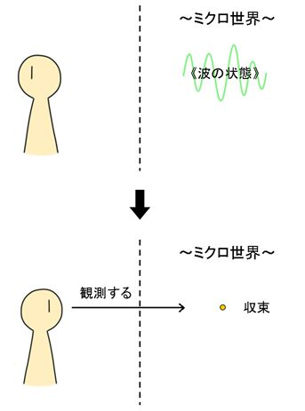
もう少し正確に言うと、我々が観測した瞬間に「電子」の位置が「点」のように定まるという物理現象があるということである。（量子力学においては、電子には大きさは無いため「点」として扱われる。）これを、物理学者の「ニールス・ボーア」が、『コペンハーゲン解釈』というのを提唱して、「電子」を観測する前は、それは「波」のように広がりを持ったものとして存在しているが、「観測」すると同時に、ある位置に「収束」する・・・というようなことが言われている。
それから、ボーアの「コペンハーゲン解釈」は、量子力学における「重ね合わせ」の状態も説明されていて、我々が観測していない状態の「電子」は、「複数の位置に存在する可能性を同時に持っている」というように解釈される。このように「複数の状態である可能性を同時に持つ」ということが「重ね合わせ」状態である。こうした素粒子の「重ね合わせ」の性質は、『量子コンピューター』といった分野で、実際に使われている物理現象である。
このようなことから、「素粒子」に関して色々な説や解釈が出てくるようになった。素粒子がまるでホログラムのようなものだから、物質は全てホログラムだという説とか、素粒子に時間の概念がないから、この世界も時間という概念がないとか、素粒子が波の性質を持つから、我々の見ている世界、もとい、我々の心までもが全て波で出来ている・・・とか、色々なことが言えてしまうわけである。
こうしたことを、最先端の物理学者の一部までもが言い出すようになっていったわけだが、しかし、一般的な視点や、科学的な視点のことまで踏まえると、安易にそう言えるわけではないことも注意する必要がある。
思うに、こうした現象は、まずは「ミクロ」に着目する所から始まる。我々の意識の中で「ミクロ」の大きさのものに対してフォーカスを当てるのである。そして、そこから、そこにあるものを、「粒」として捉えるか、「波」として捉えるか、で決まるのではないだろうか？
考えてみれば、人間の「意識」は人間の「脳細胞」で出来ていると言えるし、人間の「脳細胞」は「原子」で出来ている。それから、「原子」は「素粒子」で出来ている。従って、我々の「意識」も、「素粒子」のようによく分からないものに通じていてもおかしくないのではないか？と思う。（ちなみに、水素原子の大きさは「約10のマイナス10乗メートル」、その中の原子核の大きさは「約10のマイナス15乗メートル」と言われている。その中でクォークや電子といった素粒子は、大きさの定義されていないものである。）
つまり、意識の中で、そうしたよく分からないものに着目した時に、よく分からないものが見えてくる・・・ということなのではないだろうか？
その一方で、「ミクロ」を見ていない場合・・・、すなわち、大きさを持つものという意味で「マクロ」として物質を見ている場合は、「粒」としてしか見えないのである。従って、そうした世界では「古典物理学」と言われる世界が正しいということになる。
このように、物質をミクロとして見た世界と、マクロとして見た世界の「差異」が重要なのではないか？と思う。
まずは「ミクロ」に着目することによって、物質を「波」として見ることができる。そして、そこから「波」の世界で見えてくるものが、魔術や人智学で「エーテル体」と呼ばれるものなのではないだろうか？
「人智学」では「物質体」と「エーテル体」と呼ばれているものがあるが、それは、素粒子の仕組みを踏まえると、それぞれ「物質を粒として見た世界」か「物質を波として見た世界」である、と解釈することができる。
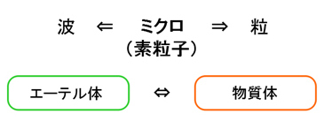
ここで出てくる「波」の世界が、文化によっては、「気」だとか「プラーナ」だとか呼ばれているのではないだろうか？と思う。それから、西洋では「マナ（Mana）」といった呼び名もあるし、エジプトでは「ヘカ（Heka）」といった呼び名もある。
また、西洋における「儀式魔術」の話になるが、魔術の世界では、儀式の道具として使う「魔術道具」は、「聖別されたもの」が使われたりと、特別なものとして扱う。
それは、物質である道具を「波（エーテル体）」として見ているということを意味する。こうした特別な意識を持った「魔術道具」は、人間の意識にも干渉するようになるということである。
以上のことを踏まえると、「魔術や魔法」とは、「粒(物質・人間)の世界から、波(エーテル体・意識)の世界へ関与すること」だと言うことができる。それは、お互いに関与が行われるため、「相互変換」が起きると言うこともできる。
普段の生活においては、そのような手段はなく、科学で全てが説明される世界においてはなおさらだが、魔術や魔法においては、これまで説明した手段・・・儀式魔術、呼吸法、道具の利用、イメージ、マントラ、身体技法・・・といった手段で、それを行うことができる。
そして、そこから、波(エーテル体)の世界と絡めて「意識」と関与することで、様々な効用・・・願望実現、浄化、ヒーリング、自己認識、タロットリーディング、無意識の理解・・・といった効果があるということである。
ここで、意識や物質が「粒から波へ、波から粒へと相互に関与すること」を踏まえた『４つの法則』について述べていく。
それは、『認知の法則』・『確信の法則』・『贈与の法則』・『変容の法則』の４つである。
これら４つの法則は、自分の思いつくものを列挙として述べているに過ぎないため、他にも法則があるかもしれないが、実際の魔術や魔法の世界で起きていることの多くは、この４つの法則で説明できるのではないか？と思う。
まずは『認知の法則』である。これは、先ほど述べたように、「ミクロ」の大きさのものに着目し、そして、そこから、「波」の世界を見いだすことによって、「エーテル体」の世界が開けてくるということである。
それから、エーテル体の世界が開けてくるようになると、そこからの情報が読みとれるようにもなってくる。エーテル体の世界は、「時間や空間といった概念がない」という特徴を持っているため、物質的な制約のない所から情報を読みとれるのである。従って、「遠隔透視」や「千里眼」や「予知」といった超能力が、これである程度説明がつくようになると思う。
しかし、エーテル体の世界というのは、物質体の世界からは見え難い、実に微細で精妙な世界である上、そこから情報を読みとるには、人間の「意識」を介するため、もし、「意識」に不純なものが含まれていた場合、正しく読みとることができないのである。早い話が、自身の「願望」や「妄想」が過剰であった場合、「妄想」と「真実」との区別がつかないようになる・・・ということが起きる。そのため、エーテル体の世界を正しく「認知」するには、「微細なミクロ」を認識する器官と、妄想と真実とを区別する意識が、よく発達していなければならない。
ここで、エーテル体に通ずる微細なミクロを認識することを『ミクロ知覚』と言っても良いと思う。実際の魔術や魔法を扱う世界は、この「ミクロ知覚」から始まると言うことができる。
こうしたことは、普通の人にとっては分からないものであるが、ミクロの意識を開いた人にとっては分かるようになっている。これが『認知の法則』である。
また、先天的にそうした意識が開いている人というのもいる。そもそも、赤ん坊や子供は、元々、そういう「エーテル体」で充満しているような世界に生きていて、そこから来て間もないので、そういう意識が強いのである。その時の感覚を忘れていない人は、割と初めからそういう感覚を持っているのである。
逆に、そういうのと真逆の意識・・・すなわち「理性」というものが強い人もいるが、強い理性を持ちながらにして、「ミクロ知覚」を開花させるという道もある。これは、これから増えていって欲しい、現代人が進むべき道だと思う。
次に、『確信の法則』である。先ほどの『認知の法則』によって、「波」の世界が分かった場合、それを何かの「型」や「式」に当てはめることによって、スムーズに思い出すことができる。また、それを「確信」することによってパワーが増すことがある。
このように「式」や「型」に当てはめることは、言い換えると、「定式化」あるいは「儀式化」だと言うこともできる。「儀式魔術」はこの法則によって使われている
それから、「言語化」というのも有効である。「波」の世界のように曖昧な所から発したものでも、何か「言語」や「言葉」にすることで、簡潔な効果を発揮することができる。それによって「確信」の力が高まるのである。キリスト教などで使われている「聖書」といったものは、この「確信」の力を強めるためのものだと言っても良い。
魔術や魔法において、このような『確信の法則』によって「形」にしたものは「象徴」として扱われる。「象徴」は、「文字」だったり、「記号」だったり、「絵画」だったり、「偶像」だったり、「動作」だったりする。「波」の世界にある魔術的な世界観を「象徴」として残すことが「象徴化」である。そうすることによりパワーが生まれるようになるし、他の人に伝達することもできる。「定式化」と「儀式化」と「言語化」は、まとめて「象徴化」と言っても良いと思う。
こうした「象徴化」は目に見えない存在を扱うにおいて有効である。しかし、それと同時にリスクもある。
もし、目に見えない世界をよく分かっていない人が、それに対する「確信」を行った場合、これは、効果がないどころか、むしろ害となることも発生してくるのである。いわば、意味の分かっていない人が魔術的な儀式を行い、意味の分かっていない人に対して魔術的な感覚を伝えるようなものである。その結果、至って形骸化した儀式魔術だけが行われるようになるという、非常に残念な話になるが、これは宗教の界隈ではよくあること・・・だったりするわけである。
また、これは「儀式」だけでなく「言葉」にも当てはまることである。本質の分かっていない「言葉」を、分かっていない人に伝える場合でも同様のことが起きる。従って、『確信の法則』は、むやみな「言葉」は人を狂わせるということにも通じている法則でもある。
このような『確信の法則』は、魔術や魔法の欠点としてもよく起こりえるリスクを持っているものだが、初心を忘れなければ、有効な力を生むものでもある。
次に『贈与の法則』である。まず、「波」の世界のエネルギーである「エーテル体」は、「分けて与える」ことができるという性質を持つ。また、それは「共鳴」によって、お互いの力を増強することも可能である。
それから、エーテル体の世界にある、あらゆるエネルギーの源泉のようなもの・・・「ユダヤ神秘主義」や「カバラ」で、『神』とか『ケテル』とか呼ばれているものもそこにあるのかもしれないが・・・そうしたものは、「分かち合う」という意識を持っている。それから、それは無くなることがないものであり、無限の力を持っている。これは、スピリチュアルの話なんかで出てくる「無限のエネルギー」であり、「調和」とか「愛」といった性質を持っているものである。（これもまた下手に言語化するとよく分からなくなってくるものだが・・・）
そうした存在からの「贈与」を受けつつ、また、自分もそこで受け取ったものを誰かに分かち合っていくことで、エネルギーが上手く循環するようになる。こうした考え方は、スピリチュアルにおいて支持されており、「ユダヤ神秘主義」としての「カバラ」にもそういう考え方がある。
こうした『贈与の法則』は、魔術や魔法やスピリチュアルの世界における、理想的な循環構造を生むものなのである。
次に『変容の法則』である。これは、「粒から波に対しての変容」も可能であるし、「波から粒に対しての変容」も可能であるという法則である。言い換えると、「意識から物質に対する変容」と「物質から意識に対する変容」が可能だという、「相互変換」の法則だと言うこともできる。
まず、「粒（物質）から波（意識）への変容」についてだが、これによって、物質の力で意識を癒すことができるようになる。魔術や魔法の世界において「物質」とは、ヒーリング用のパワーストーンであったり、魔術道具であったり、肉体であったりする。この法則によって、物質の力を使って、意識に対する浄化やヒーリングなどの効果を期待することができる。
次に、「波（意識）から粒（物質）への変容」についてであるが、これによって、意識や波動の力といったもので、物質を微細なレベルで変化させることができる。ヒーリングエネルギーのようなものを、肉体や細胞に対して働きかけることで、治癒効果を期待することなどが実用的である。
また、これは「スプーン曲げ」という現象の話にも繋がってくる。あれは、「意識」の力によって、金属を原子レベルで柔らかくすることができて、それによって起きるものだと解釈することができる（トリックによって起こされている場合もあるかもしれないが・・・）。それから、意識による物質操作で有名なものでは「ポルターガイスト」という現象があり、これは、心霊現象として伝えられている。これも、意識の力によって物質が何かしら動くことで起きる現象である。しかし、かなり大きな動きをする現象を起こすのはなかなか難しいことであり、せいぜい、物が少しズレて何かが落ちたり、電気器具が異常をきたしたりする程度だと思う。
それから、こうした異常現象は、周りにいる人間が「波（エーテル体）の世界に寛容」である方が発生しやすいという事情が絡んでくるようになる。こうした現象が起きる時は、周囲にいる人の『認知の法則』と『確信の法則』が、対象の物質に対して働くからである。つまり、「物質を粒」として見る人間が多い場合は発生しにくく、逆に「物質は、粒という次元を超えたもの」として見る人が多い場合は発生しやすい。例えば、霊の存在を信仰している者同士が密室で行った方が、発生しやすいということになる。なんとも、霊能者や超能力者にとって都合の良い法則となっているが、意識と物質の関係を見てみると、そういう仕組みになっているみたいである。
次に、「波」の世界を認識するための『ミクロ知覚』の話であるが、これには、実は「光速度」という概念が絡んでいる。
ここで、また物理学の話になるが、この世界を動いている物体は、その速度が光速度に近づけば近づくほど、『ローレンツ収縮』という物理現象が起きる。これは、19世紀の末頃に「ヘンドリック・ローレンツ」という人によって仮説が立てられた現象で、20世紀になり、アインシュタインによって『特殊相対性理論』の中で解明されるようになった現象である。
そこで記述された数式によると、物体が動いている時、その速度が光速度に近ければ近いほど、その物体の長さは、進行方向に縮むという現象である。そして、もし光速度に達した時、その長さはゼロになる。
簡単に説明すると以下のようなイメージである。
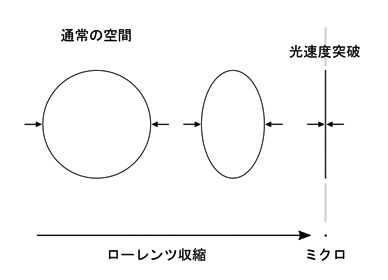
これは、アインシュタインの特殊相対性理論によって言われるようになった「物体が光速度に近づくことによって、時空の歪みが生じる」という話でもある。しかし、光速度の値の大きさがあまりに絶大なため、普段の感覚ではほとんど問題視されない現象である。「ローレンツ収縮」は、特殊相対性理論においては『ローレンツ変換』として説明されているが、19世紀末頃に発見された『光速度不変の原理』という、実験によって証明された原理から、このような法則が導かれるようになった。（この辺は詳しい話をすると長くなるので割愛する。物理学的な原理に関する話は、筆者の書籍である『４次元思想とフラットランド』に詳しく書いたため、知りたい方はそちらを参照してもらえるとありがたい。）
ここで重要なのは、この「ローレンツ収縮」の現象を「意識」の話だと捉えることである。もし、光速度で動く物体を、頭の中でイメージできた場合、それは、ミクロとほぼ同じ長さになっている・・・ということである。
そして、そこから、『ミクロ知覚』というのを行うことができる。そこは、魔術や魔法においても「エーテル体」の世界の入り口となっているのである。
次に、先ほどの「ローレンツ収縮」において、物体が光速度に達した後、「光速度の先」を行った時のことを考えてみる。・・・しかし、ここで「光速度を超える物質は存在しない」というのが、アインシュタインも言った、現代物理学の常識であったりする。いや、正確に言うと、そこから先は考慮されていないため、「定義されていない」世界だと言うことができるのだが・・・。魔術や魔法においては、「意識」の世界では「光速度の先」を行くことも可能だというものとして、イメージにおいて「光速度の先」を行った時のことを考えてみる。
そうするとどうなるのか？ゼロよりもさらに縮む・・・ということになるが、その「長さ」の値は、数学的には『虚数』の値になる。
「虚数」・・・ここで一応、虚数の説明をすると、普通の数は、値がマイナスであろうとプラスであろうと、二乗すると必ずプラスの値となる性質を持つ。これを「実数」という。それに対して「虚数」は、「値を２乗すると、マイナスになる」という性質を持つものである。これは、現実には存在しない数と言っても良い。「虚数」は英語で「imaginary number」という名前が与えられており、数式で記述する時は、数字に「ｉ」を付けて記述される。
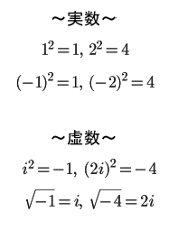
「虚数」は現実には存在しない数・・・ということだが、「量子力学」においては必ず「虚数」が出てくるのである。従って、「虚数」は、現実には存在しないが、宇宙には存在する数、だとは言えるのである。
先ほどの「ローレンツ収縮」の式において、物体の速度が光速度を超えるようになるとどうなるのか？・・・数式を書くのは割愛するが・・・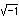のように、ルートの中身がマイナスになるということが起きる。ルートの中身がマイナスということは、その値は虚数だということである。これは、ゼロからさらに先を行って、「虚数になった長さ」を表すようになるのである。
ここで、虚数の値が出てくる空間を『反転した空間』と呼ぶことにする。これが、魔術や魔法においてアクセスするべき空間となる。
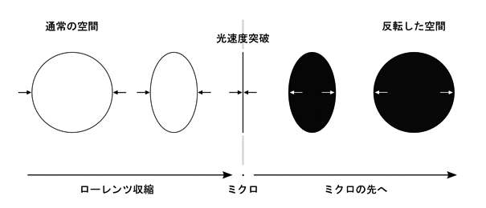
それから、ここで重要なポイントとなるのが、光速度に達した時に出てくる「ゼロ」の値は、「ミクロ」と言うこともできるが・・・それは「実数」と「虚数」の境界にあるということになる。そのポイントは、光速度より少し遅いか、少し早いか、ほんの少しの傾きで、実数にも虚数にもなり得る。
この「境界」を認識することが、魔術や魔法においても重要となる。
魔術や魔法の世界を物理学的に考えるにおいて、「光速度」や「ミクロ」という概念に加えて、重要なのは「時間」の在り方である。
先ほど、「ローレンツ収縮」における「光速度」の突破によって、「長さ」が「虚数」の値になると述べたが、それと同時に「時間」も「虚数」の値になる。これも、「特殊相対性理論」における、時空の歪みによって起きる現象である。
「時間」が「虚数」になる感覚というのは、まるで、これまで自分が感じていた時間が「止まった」かのような感覚である。こうした「無時間」の感覚を掴むことが、実践的な魔術体験においても重要となる。
また、魔術や魔法を行っていると、必然的に「無時間」の感覚が芽生えるようになるし、「エーテル体」の世界にいるような「あっち側」の住人というのは、我々が普通持っているような時間感覚がないのが特徴だったりする。
これまで説明した世界観には、対立する二つの軸がある。
それは、「ミクロ」と「マクロ」である。
人間は、通常時は「マクロ」の世界を見ていて、あらゆる物質が大きさを持っているものとして見えている。これは「粒」の世界であり、「物質体」の世界でもある。これは「普段は見えやすい世界」だと言うことができる。
そして、もう一つあるのは「ミクロ」の世界である。ここから、「波」の世界や、「エーテル体」の世界、『反転した空間』というものに入り込むことになる。これらは「普段は見えにくい世界」だと言うことができる。
それから、マクロの世界には「重力」が働いており、ミクロの世界には「重力」が働いていないという特徴もある。このように「重力」と「物質認識」の関係というのもある。
ここでポイントとなるのは、「意識」の中で「光速度」の感覚を掴むことで、「それらの相互反転が可能」になるということである。
魔術や魔法を駆使している者は、こうした二つの世界があるという意識を、顕在化させていくことになる。
それから、マクロ(粒)の世界と、ミクロ(波)の世界の特徴として、哲学用語を用いて言えることがある。それは、粒の世界は『同一性』、波の世界は『差異』というものが、人間の意識で働いている・・・ということである。『同一性』と『差異』は、「ジル・ドゥルーズ」といった哲学者がよく用いていた用語である。
まず、「粒の世界」にある『同一性』とは、簡単に説明すると「何かと何かを同じとして見る性質」のことを言う。「人間の意識」は、似たようなグループがあったら、似たようにみるという性質がある。例えば、「人種」や「民族」に対してもそうだが、「あることを趣味にする人達」や「ある職業の人達」なんかも、つい、グループにまとまっているものとして、ひとくくりにして見てしまうことがある。そうした性質が理不尽な方向に働くと、差別や偏見といった面倒なことが起きてしまう。「ステレオタイプ」的なものの見方という言い方が分かりやすいだろうと思う。張られているレッテルで物事を見てしまい、その奥にある本性が見えなくなってしまう。そのような性質が『同一性』である。
加えて、「粒の世界」は「言葉」で言いたいことを伝えるという特徴がある。基本的に物質しか存在していない世界なので、物事を伝える場合は、必然的に「言葉」に頼ることになる。しかし、「言葉」というものは、簡単に騙すことができることに加え、『同一性』の影響を受けやすいものでもある。「ある言葉」に対して、それを別の何かと同一視してしまうことがある。例えば、宗教の世界で「神」や「愛」といった絶対善的な言葉がよく使われているが、それは、本質的なものとは別の何かと認識されて扱われることが多いものである。
一方で、「波の世界」は、それに対する「違い」というのが見えてくる世界である。これが哲学の世界では『差異』と呼ばれている。「ミクロ知覚」の感覚で、モノを知覚してみると、それぞれの違いというのが見えてくるようになる。また、「エーテル体」が分かることによって、掴めるようになる違いというのがある。
このように、哲学で『同一性』と『差異』と呼ばれているものも、「粒」と「波」の性質を掴むにおいて、重要な概念なのである。
哲学の世界で『コペルニクス的転回』という言葉がある。コペルニクスは、「天動説」が一般的な世の中に対して、「地動説」を主張した人だが、それが、物事の見方が１８０度変わってしまうことの比喩として使われるようになった。
「コペルニクス的転回」は、哲学者の「カント」が自身の哲学である『認識論』に対して言ったものである。カントは、コペルニクスのように、モノの見方を１８０度ひっくり返すようなことを説いていた。
それは、以下のようなものである。
◆認識が対象に従うのではなく、むしろ対象のほうがわれわれの認識に従わなければならない
・・・とのことであるが・・・。この話は、難しく言っているようだが、かみくだいて説明してみることにする。
まず、普通の人間のモノの見方は「元々、モノが存在している状態があって、そこから、モノを見る。」という風にモノを認識する。これが「認識が対象に従う」という意味である。これは、モノの実在が先にあるので「実在論」とも言われる。
次に、「対象のほうがわれわれの認識に従う」というのは、「人間がモノを見るから、モノが存在するようになる。」という風に認識することである。そして、世界も同様に、人間が認識しているから出来ているという風に見る。これは、人間の観念によって世界が出来ているということで、「観念論」とも言われる。
そして、魔術や魔法においては、この話はそう難しい話ではないことになる。魔術や魔法において「モノの見方をひっくり返す」ということは、人間・物質・常識といったものがある「こっち側」の世界から、八百万の見えない住人たちのいる「あっち側」の世界へ行く・・・ということになる。
「あっち側」の世界は、哲学で言う「観念論」の世界のように出来ている。それが、「エーテル体」の世界であり、「波」の世界であり、「無時間」の世界であり、「反転した空間」の世界である。
このように、魔術や魔法で向かうべき方向性は、こうした哲学の話とも通じているのである。
この世界には、「粒(物質)の世界」と「波(エーテル)の世界」があり、それは、素粒子の仕組みとも関係しているということを説明してきた。ここで、「物質体」の世界を『物質世界』、「エーテル体」の世界を『エーテル世界』と呼ぶことにしよう。そして、魔術や魔法が発生する仕組みも、この二つの世界との関わり方で説明することができる。
ここで、そうした「エーテル世界の仕組み」について、色々と説明していこうと思う。
まずは、魔術の基本でもある「儀式魔術」についてである。
これは、先ほど説明した『認知の法則』を開くためのものであり、『確信の法則』を強めるものでもある。
「儀式魔術」の基本となる原理は、端的にいうと「"何か"を行うことで"何か"が起きる」・・・である。「エーテル世界」に働きかけるような「何か」を行うことで、「エーテル世界」の何かしらが反応するようになる。これによって、エーテル体に対する『認知』だったり『確信』だったりが強まるようになったり、「あっち側」の世界に対して関与を行うことができるのが「儀式魔術」の仕組みである。
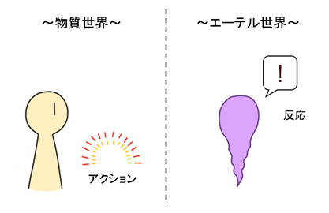
「儀式魔術」を扱うにおいて重要なことは、アクセス対象となる存在に絡んだ「文化」を意識することである。「エーテル世界」・・・もとい、「あっち側」の世界にも「文化」があるので、それを模様した儀式を行うのが基本である。例えば、西洋だったら「キリスト教」っぽく、仏教だったら「仏教」っぽく、日本だったら「神道」っぽく・・・といった感じにするわけである。このように、「あっち側」の世界の文化と合ったことをすることで、「こっち側」の世界に何かしらの作用をもたらすのが、「儀式魔術」の仕組みである。
「儀式魔術」は、時に「召還」も行うことがある。ここで召還対象となるものは、用途によって、大天使から悪魔まで様々であり、仏教なら観音菩薩や不動明王、日本なら八百万の神様・・・といった具合にと思う。
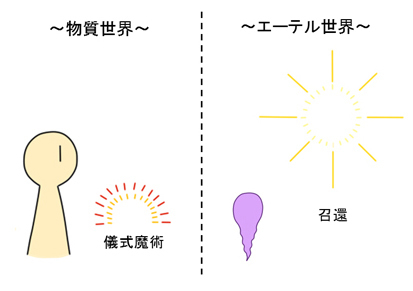
「儀式魔術」は、「召還魔術」として機能するものでもあるため、ここでエーテル世界で召還した存在と協力し、パワーを貰ったり、願望実現に利用したりすることもある。
また、「儀式魔術」は、『確信の法則』による誰かの象徴化によって作られた「定式」でもある。元々、「あっち側」の世界をよく知っている人間が作り、それが伝統的に伝えられているということがある。従って、「儀式」を行うということは、誰かの作ったものを真似るということでもある。
このような「儀式魔術」は、本来は、エーテル体の「認知」がないと成り立たないものである。しかし、それが誰も分からないようになって、そのまま誰も分からないまま真似ていると起きてくるのが、「形骸化」という現象である。このような「形骸化」は、宗教の界隈ではよく起きていたことだが、魔術や魔法においても気をつけなければいけない。そのため、『認知の法則』という、魔術や魔法においての初心を忘れないようにする必要がある。
次に、「ヒーリング」や「浄化」についてである。先ほども述べたことだが、対象をエーテル体レベルで癒し、「本来の波動の状態」にするのが、「ヒーリング」や「浄化」である。また、『贈与の法則』のように循環する構造がそこにあったりする。
「ヒーリング」や「浄化」は、パワーストーンといった特別な石の力を借りることがあるし、時には、エーテル体の世界にある何かの存在の力を借りて行うこともある。むしろ、誰かに対してそうした「癒し」行為をする時は、自分固有のエネルギーを使って行うと、自分自身の持っているエネルギーが枯渇してしまうため、何かしらの存在とアクセスし、そこから力を貰って行うことが望ましい。従って、浄化やヒーリングを行う時は、何かの「召還魔術」と併用して行うということもある。
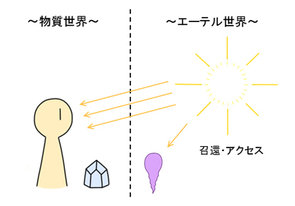
そうした中で、物質の波動を本来持っている状態に戻したり、「自己」にとって余分なエネルギーを取り除いたりしていく。これは、物質を「エーテル体」に近づける効果があったり、人間の身体を、物質体とエーテル体の中間ポイント（これは『ニュートラル状態』などとも言われる）に近づける・・・などの効果があったりする。
「浄化」のパワーを持つ物質（アイテム）として、パワーストーンの中で一番シンプルなものでは「水晶（クリスタル）」が挙げられる。「水晶」は、魔術や魔法を扱っていくにおいて、「エーテル世界」とのアクセスをやり易くする、シンプルで万人向けのアイテムである。それから、コストパフォーマンスを考えて一番お手軽なものとして挙げられるのは「塩」（天然塩）だと思う。「塩」は、食塩のように人工的なものでは効果がなく、海から取れた天然のものでないといけない。これは日本で伝統的に使われているものでもあり、相撲の行事や「盛り塩」といったことでも使われている、お清めアイテムである。
『魔術日記』（「魔法日記」とも言う）とは、ＧＤ系の魔術を使う者など、魔術や魔法を扱っている者が書くと良い日記である。
有名な魔術師「Ｗ・Ｅ・バトラー」の『魔法修行』という著書の中にも、「瞑想」や「視覚化」の訓練によって出てきたイメージや成果は、日記に記録するべきだというように書かれている。
これは、要は「エーテル世界」との関わりで起きたであろうことを、書きとめておくということである。忘れないようにするために書くという意味もあるが、書く行為そのものに、エーテル体の住人が反応するということもあり得る。
これに関しては、突き詰めるとエーテル世界との関わり方の問題なので、ハッキリした決まりはないと思う。それよりも、「あっち側」の住人とのやり取りが上手くいっているかの方が大事である。
従って、「魔術日記」に関しては、あっち側の住人との都合を考えて、好きなようにしていれば良いものだと思う。
ここで、エーテル世界との関わりにおいて起きる、「象徴化」や「具現化」について述べていく。「具現化」とは、エーテル世界で認識した「イメージ」を「具現化」して固定化するということである。これは、エーテル体との関わりの中で、『確信の法則』による「象徴化」の中で行われることでもある。
エーテル体の世界との関わり合いを持ち、様々なイメージが感じられるようになったとしよう。その曖昧な「感じ」は、よりハッキリしてくると「具体的なイメージ」になってきて、それを絵として描き出したりすることも可能になってくる。
イメージを絵として描き出すことができるようになると、今度は『確信の法則』によって、パワーが生まれることもあるし、簡単に想起することができるようにもなる。
ここで、どんなイメージが描き出されるかというのは、自身が生活してきた「文化」によって違ってきたりする。
例えばそれは、西洋文化であれば西洋風であるし、仏教文化であれば仏教風である。インドなんかは非常に奇抜なデザインを持っている文化だが、インド文化で「エーテル体の住人」のイメージを描き出すと、あんな感じになるのだと思う。そして、現代日本においては、現代日本の文化が影響されるようになる・・・例えば、アニメや漫画やゲームの影響が強い人にとっては、そんなイメージで描き出すようになる。その他、洋楽やパンクなものが好きな人の場合は、そういうイメージで描き出すようになるのだと思う。そもそも、我々が色んな文化やイメージを吸収していくのは、このイメージを豊かにするためなのかもしれない。
（このことは人間が夜に見る「夢」を分析する、「夢分析」についても同じことが言える。そもそも、「夢」とは、エーテル世界の表れである。）
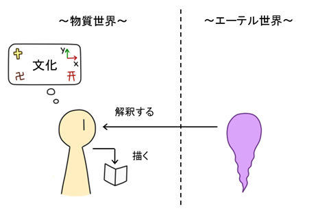
古今東西では、このように作られたイメージが一般的な文化としても伝わっている。例えば、仏教的な文化の中では「仏像」のような枠組みの中で作られたイメージのものが伝わっている。「仏像」や「仏具」が似通ったデザインとなっているのは、そういう表現手段を持つ文化がそこで成り立っているからである。これは、その他の文化でも同じことが言える。
さて、このような「象徴化」や「具現化」によって、魔術や魔法の様式は安定するようになるが、これにはリスクもある。・・・これは、『確信の法則』の所でも述べたし、「儀式魔術」のリスクとしても説明した。要は『認知』をおろそかにしたり、また、「偶像」として出来上がったものこそが真実だと捉えるようになると、本来目指すべき所から遠ざかってしまうようになる。それから、「形骸化」にも気をつけなければいけない。
具現化によって出来上がった「偶像」が「人型」になっている場合、「人型」になったものを「真実」と捉えてしまうような「偶像崇拝」の危険性がある。しかし、その一方で、「思念体型」で具現化するという手もある。仏教で伝えられている『曼陀羅（マンダラ）』などは「思念体型」に近い表現形式であるし、西洋魔術にある「護符魔術」で描かれているものも、割とそれに近いと言うことができる。主に「幾何学」で構成されている側面の強いものが「思念体」の形態に近い。それから、「アレイスター・クロウリー」の作った『トート・タロット』も、あれは、使い手のイメージが固定化しないように、人の顔をハッキリと描かないといった工夫がされており、そこで描かれている絵も「思念体型」に近いと言える。こちらの方が「偶像崇拝」におちいるリスクが少ないというわけである。
こうした話は、以前に説明した「ガイド」や「タルパ」といった話にも通じており、「ガイド」や「タルパ」も、そのまま「人型イメージ」として具現化されやすいものである。しかし、魔術や魔法においては、人型のものほど、エーテル体の住人として真実に近いかどうかは怪しいものになってしまったりする。何故なら、エーテル世界は曖昧で変容しやすいものであるため、そこから出てくるイメージも変容しやすいからである。そこで、初めのうちは「思念体」の形態をしているものと付き合った方が良いという手段がある。
魔術や魔法において探究する「エーテル世界」には『ホットスポット』というものがある。「ホットスポット」とは、魔術用語ではないが、要は「何かのエネルギーや存在を感じる場所」という意味である。
西洋魔術にある『パスワーク』といった魔術技法では、「22のパス（生命の樹の小径）」や「タロットカード」といったものに対して探索活動を行うが、こうした魔術技法は、エーテル世界にある「ホットスポット」の探索だと言うことができる。要は、タロットカードなどを用いて、「何かしらのホットスポット」を探索できれば、「パスワーク」は成立するというわけである。
このような「ホットスポット」は、ビジョンが曖昧なうちは漠然とした「感じ」でしか捉えられることができないが、試しに何かの「イメージ」をそこに与えてみると、その「感じ」の力が増大したり、生命を感じたりするようになる。ここで「ホットスポット」に付随してくる「イメージ」は、先ほど『象徴化や具現化について』で述べたように、自分自身の持ってる「文化」に作用したりする。
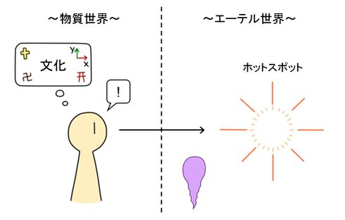
こうした「ホットスポット」の内容は様々であり、タロットカードの大アルカナであったり、生命の樹のセフィラーであったり、「惑星」であったりする。さらには、「ルーン文字」といった象徴文字や、何かの神話に書いてあるような概念も、ホットスポットとして機能することがある。
それから、他人の作った「ホットスポット」にアクセスすることも可能である。他人のものにアクセスするとなると、難易度の上がる話になるが、魔術や魔法において、こうしたことも行われているというわけである。
このように、「精神世界」に没頭してイメージを得るのも、魔術や魔法で行われていることの一つであるが、やり方次第では中毒性のあることでもあり、あまり夢中になり過ぎると危険性のあることである。従って、このような行為は、「エーテル体」に慣れることと、「自己認識」を経て、「自己」を確立してから行った方が安全である。
ここから、魔術や魔法においてよく使われる道具について述べていくことにする。まずは、「ロウソク（キャンドル）」についてであるが、ロウソクは、西洋魔術の儀式でよく使われているだけでなく、仏教といった形式の中でもよく使われている、非常に簡単で有効な魔術道具である。
まず、ロウソクの光は、人間のオーラの光に近い姿をしているという話がある。従って、ロウソクを見ているとそうしたものを想起することができる。
次に、精神的な防衛機能を持っている。「オーラの光に近い」からという側面もあるが、これを利用して「オーラの防御壁」を作ることができる。従って、これを用いると、安全にエーテル体の世界に入りやすいのである。それから、身体に対するリラックス効果や、浄化効果というのもいくらか持っている。
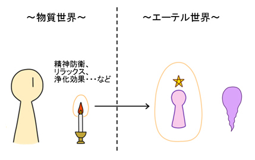
ロウソクの火をつけるだけでも、エーテル世界の住人にいくらか呼び掛ける効果もある。これは、簡単な「儀式魔術」として機能することもあるからである。
ちなみに、「オーラによる防御壁」の作り方に関してだが、これについては「タマゴの形」をイメージすると良いという話もある。
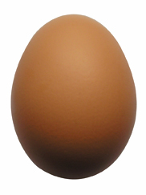
そのため、自分自身をタマゴの形をしたオーラで包むイメージ・・・というのをやってみると良いと思う。
「儀式魔術」を扱う時などがそうだが、魔術や魔法を扱う者は、自身の使う魔術道具に対して『道具の聖別』というのを行うことがある。
「聖別」とは、道具に対して儀式をほどこすなどをして、それを特別なものとして扱うことである。こだわりたい場合はちゃんとした儀式を行うが、そうでなくとも、道具を「特別なモノ」として認識して扱う場合、その道具は「聖別された」と言えるだろうと思う。
これは、道具を「エーテル体」となじませるということでもある。そうしたことをしつつ、「魔術道具」をエーテル体の宿ったもの、もとい、エーテル体となったものとして扱うのである。注意点としては、このような「道具」は、普通の道具と混ぜて使ってはいけない。そうすると、「エーテル体」のものと「物質体」のものとが混同されてしまうからである。
このように「聖別された道具」は、エーテル体を通じて「人間の意識」とも関与するようになり、パワーを生み出すようになるため、魔術や魔法を扱う者は、このような魔術道具を使うのである。
世間には「開運アイテム」と言われているものがある。その中には、高額の商品として販売されているものもある。そうなってくると、「開運アイテム」という存在自体、いかがわしいものに思えてくるかもしれないが、「開運アイテム」の存在自体は、嘘ではない。ただ、問題はその内容であり、そこまでお金をかけるべきものなのかどうかは悩み所である。
魔術で扱う「魔術道具」と言われるものは、「開運アイテム」的な側面を持つ。魔女が「ウィッチクラフト」の中で使う道具も同様であり、魔女の使う「ワンド（杖）」といったものはその代表と言っても良い。それは、「聖別された道具」のように、エーテル体や自身の意識に対して関与して、良い方向に持って行く力を持っている。
しかし、そういったものが「開運アイテム」として、広告で張り出されている場合は、とにかく買わせたいように書いてあるのが基本だが、何にせよ、良いアイテムは、自分のセンスで選ぶことと、そのセンスを磨くことが一番である。もっと言うと、そういう自分に適したアイテムを「自分で作る」ことが、よりベストな手段である。
ここで、自分にとってより良いアイテムを選んだり作ったりするためには、「自己」をよく知っていることが重要である。この「自己」というのは、何度も書いているように、エーテル体の世界にいる「高次の自己」のようなものであり、自分の本性に近い存在のことであるが、そうした自分の「好み」というのがある。基本的には、この「好み」に合ったアイテムを手に入れることで、「自己」の力が強くなることになり、運勢が向上することにも繋がる。それこそが「開運アイテム」・・・言い換えるなら「ラッキーアイテム」と言うことができるわけである。また、「自己」だけでなく、自己に紐付いた「ガイド」が好きなものでも良い。
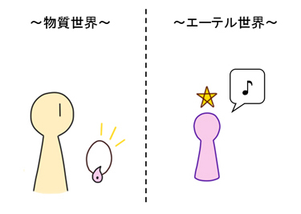
それから、エーテル体の存在が好む材質というのもある。代表的なものは、「木」や「石」といったものである。やはりこの辺りは、古くから魔除けのアイテムとして使われていたものでもあり、自然に近いものでもあるので良い。「鉄」や「人工物」となると、そこまで良いものではなくなってくるが、しかし、ＯＫな場合はＯＫである。「自己」や「ガイド」の力が強まるものであれば、ひとまずはそれで良い。
「ラッキーアイテム」として、無難な路線では「パワーストーン（天然石）」などが挙げられる。恐らく、これは下手な開運アイテムよりも良いのではないだろうか？と思う。パワーストーンは、様々な種類があり、それぞれ効能が説明されているが、基本的には、色合いが気に入ったものを購入してみると良い。自分に似合う石は、ラッキーアイテムになるものである。
パワーストーンの基本として「水晶（クリスタル）」が挙げられる。これは「浄化」の力が純粋に強いため、万人にオススメすることができるアイテムである。それから、「翡翠（ヒスイ）」あたりも「エーテル体」の力が強いため、そうした力を感じるために購入してみるのも良いと思う。
それから、先ほども述べたように、魔女が使う「ワンド（杖）」も「ラッキーアイテム」の代表だと言える。魔女の「ワンド」は、自然にある木の枝から自分で作ったものが良いとされるが、何にせよ、自分にとって愛着のわくアイテムほど、持っていて楽しいものであるし、「ラッキーアイテム」としての効果も発揮するものである。
先ほどの話の続きにもなるが「ラッキーアイテム」の次は「ラッキーカラー」についてである。
これも先ほどと同様に「自己」や「ガイド」といった存在が気に入った色が「ラッキーカラー」であり、それを身に付けることは「ラッキーアイテム」と同様に良いことである。従って、「自己探求」をしていく上で、「自分の好きな色」というのも探ってみると良い。
「自分の好きな色」を探す手段としては、例えば「西洋占星術」なんかでは、各星座に「ラッキーカラー」というのを持っている。これは、自分の本性の性格が好む「色」を探すにおいて役立つものなので、そうしたものを参考にするのも良いと思う。
それから、先ほど、ラッキーアイテムとして「パワーストーン」というのをオススメしたが、パワーストーンは「色」で選ぶことができるという特徴がある。パワーストーンは微妙な色合いを持つものが多いが、自分の気に入った「色」をするものが、自分にとって良いアイテムである。それぞれのパワーストーンの効能や意味は、様々な言葉で説明されていることが多いが、似合う色と気に入った色のものを選んでおけば大体ＯＫだと思う。
「色」は、微妙な色合いを持つものほど品質の良い色だと言える。特に日本人は「和」を感じさせるような色が好きな傾向にあると思う。単純な原色に近い派手目のものだと、いくらか荒っぽい印象になり、ラテン系の人が好むような感じになると思う。しかし、自分の生き方にあった色を選んで、上手いこと生きることができればそれで良いと思う。
さて、「ラッキーアイテム」や「ラッキーカラー」の話をしたが、ここで、それとも関係のある話として、「惑星」の話をしておこうと思う。
魔術や魔法において「惑星」とは、「西洋占星術」において語られている「惑星」のことを言い、「月・水星・火星・太陽・木星・土星・天王星・海王星・冥王星」がそれに該当する（ここでは、「月」と「太陽」も「惑星」というくくりで扱うものとする）。これらは、「西洋占星術」においては、人間の意識と関わりのある特別なものとして扱われる。また、魔術や魔法において、「エーテル世界」を探索する上でも、これらの「惑星」は「重要なポイント」として機能しているものである。
この中で、「天王星・海王星・冥王星」の３つは、人間の意識とは特別離れた所にあるので、ひとまず置いておこう。「月・水星・金星・火星・太陽・木星・土星」の「７つの惑星」が、ひとまず重要となる。
およそ紀元前頃から伝えられていた古代「グノーシス」の思想においても、こうした「惑星」についてが取り上げられている。グノーシスの思想では、人間がこの地上を脱して、グノーシス的な「至高神のいる世界」に行く際に、『星辰界』と呼ばれる場所にある「７つの階層」を経由するという説が言われていた。この「７つの階層」に対して、それぞれ「月→水星→金星→火星→太陽→木星→土星」の順番で惑星が割り当てられていた。（従って、この順番も結構重要な所である。）
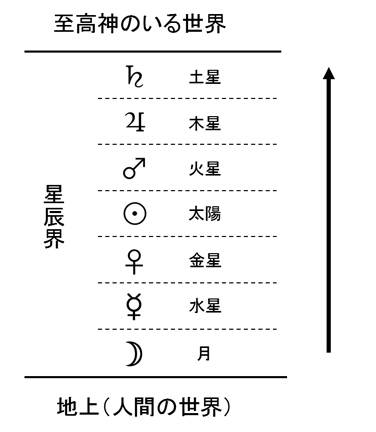
このように、紀元前の頃から特別なものとして扱われていた「７つの惑星」であるが、魔術や魔法において「エーテル世界」を探求していくと、この７つの惑星は「精神世界における７つのユニット」とでも言えるような、それぞれ特徴を持ったポイントのようなものであり、あるいは、特有の思想を持った「勢力」のようなものであるということが分かってくる。これは、「人間の無意識にある７つのホットスポット」だと言うこともできる。
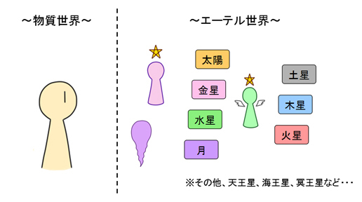
この「７つの惑星」には、それぞれ特有の意味と、それから「ラッキーカラー」を持っている。
それぞれの惑星の持つ要素を簡単にキーワードとして並べると、以下のようになる。（これは、一般的に言われていることを踏まえた、筆者の解釈によるものである。）
月
意味：意識と無意識、受動性、表面的な心、子供の段階、女性的な面
ラッキーカラー：紫、ミルク色、意識と無意識を刺激する色
水星
意味：知性、言語、伝達、スピード、神経
ラッキーカラー：知性的なグレー、知性的な緑、知性を感じさせる色全般
金星
意味：愛情、恋愛、情動、快楽、コミュニティ
ラッキーカラー：ピンク、華やかな緑、パステルカラーなど愛情を感じる色
太陽
意味：自己、自主性、本領発揮、成熟した段階、中心
ラッキーカラー：オレンジ、ゴールド、リーダーに相応しそうな色
火星
意味：闘志、戦い、セックス、武器、戦士
ラッキーカラー：赤、闘志を沸き立たせる色
木星
意味：成功、問題解決、和、学識と霊性の両方、賢者
ラッキーカラー：青、瑠璃色、アンティークな茶色、賢そうで優しそうな色
土星
意味：試練、忍耐、現実的、機械、父なるもの
ラッキーカラー：黒、こげ茶、忍耐強そうな色
以上がそれぞれ「惑星」の持つ意味と「ラッキーカラー」である。より詳しく知りたい場合は色々と調べてみると良いだろうし、ここでは省略した「天王星・海王星・冥王星」についても、興味があれば調べてみて欲しい。
魔術や魔法において「エーテル世界」にあるものと関わっていく中で、それぞれの「惑星」の力を借りるということもできる。例えば、知性的なことを強化したい場合は「水星」、愛情面を強化したい場合は「金星」、戦いに勝つような力強さが欲しければ「火星」・・・といった具合で働きかけることにより、それを実際に得ることができる。そこで、それぞれのモチーフにあった「ラッキーカラー」を持つ「アイテム」というのがあり、それは「ラッキーアイテム」として機能するようになる。
また、エーテル世界、無意識の世界、精神世界・・・といったものを探っていくと、この７つの惑星が「型」として出てくることがある。西洋占星術においても重要視されている７つの惑星は、精神世界に存在する重要なスポットであると同時に、全体のバランスが取れるように出来ている「型」としても機能しているのである。
それから、「自分と縁のある星」というのもある。これは、西洋占星術で占った時に出る結果とも通じているのだが、ある人は「水星」に縁があり、ある人は「金星」に縁があり、ある人は「木星」に縁があり・・・など、どの惑星に縁があるかは、それぞれ人によって違っていたりする。また、各人が持つ「自己」や「ガイド」といった存在も、７つの星のどれかに縁があったり、属していたりするということがある。それぞれの星は「ラッキーカラー」を持っているため、そこで、自分の「ラッキーカラー」を探ることができる。また、逆に、自分の好む色から「縁のある星」を探ることもできる。
このように、意識の世界の重要なポイントである「惑星」の力が分かるようになると、魔術や魔法を扱っていくにおいて、心強い味方となる。
魔術や魔法の話とは少し脱線して、巷で流行っている「成功法則」で言われていることで『引き寄せの法則』というのがある。これは、簡単に言うと、「自分の波動と似たものは何でも引き寄せることができる」といった法則である。この引き寄せの対象となるものは、「人物」であったり、「もの」であったり、「仕事」であったり、「お金」であったりと、様々な物事が当てはまる。対象が「人物」であった場合は、似たもの同士が惹かれ合うということでもあり、類は友を呼ぶということでもある。
ここで言われている「波動」とは何なのか？それはもちろん、「エーテル体」のことを言っている。
エーテル体の世界は「距離や時間という概念の無い世界」となっているが、ここで、似た波動を持つ人達、あるいは、違った波動を持っているが一緒にいた方が良い人達・・・というように、何かしらの要因で縁が発生した人達は、エーテル体側の世界で惹かれ合うようにあらかじめセッティングされるようになる。そして、そうなることによって、現実世界でもタイミング良く、実際に出合うようになるわけである。
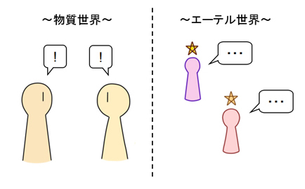
また、これは「人物」に限らず、「もの」や「仕事」といった事柄においてもそうである。このように、「引き寄せの法則」は、エーテル世界との関わりによって発生するものであり、その利用方法は様々である。
このような「引き寄せの法則」といった「成功法則」は、ビジネスにおいても引用されることのある法則だが、一種のビジネス思想では、科学的に証明されているような現実的な原理より、そういう法則が重要視されることがある。
ここで、「シンクロニシティ」というものについて説明しようと思う。まず、「シンクロニシティ」とは何か？これは、心理学者の「カール・Ｇ・ユング」が提唱したもので、簡単に説明すると「意味のある偶然一致」といった所である。一見、科学的には偶然発生したとしか捉えられないような事象の中で、何かと何かが「シンクロ」した時、つまり、まるで必然的であるかのような一致が起きた時に、この言葉が使われたりする。
ユングは「夢分析」を用いていた心理学者として有名であるが、精神分析の現場において、各人で想起された「夢」の中でも、それは別々の無関係な人物からの想起であるにもかかわらず、古来の神話や童話といったものとも絡んだ、シンクロ的な一致が見られることがある。このような時にも「シンクロニシティ」という言葉が使われる。
また、これは先ほど説明した「引き寄せの法則」とも少し近いものである。別々の無関係な人間が、偶然、タイミングが合って一緒になったりすることも、一種のシンクロニシティである。
それから、「タロットカード」といったものも、いわばシンクロニシティで成り立っているものだと言うことができる。それは、偶然開いたカードが、今の事象とシンクロすることによって成り立っているからである。
この「シンクロニシティ」は何故起きるのか？これは、「引き寄せの法則」と「タロットカード」の話に通じているが、やはり、エーテル体の世界の関与を受けて発生するからである。これは、エーテル体の世界で起きたことが現実に表れた結果、起きることでもある。エーテル体は、時間も空間も超越しているため、シンクロニシティもそのように発生するのである。
次に、「タロットカード」は何故当たるのか？について述べていくが、これはほとんど、先ほどの「シンクロニシティ」の話にも近いため、そこで説明してしまった所もあるが、改めて説明する。
タロットカードは、物理的に考えたら、カードをランダムにひいているに過ぎない。いわば、トランプをランダムにひいているのと一緒である。その結果、今現在で占いたい事象が必ず起きるという道理は、物理的に考えると無い。(ちなみに、昔から理系人間であった筆者が、中学三年生ぐらいだった頃、友達にタロットをやってもらった時、こんなの物理的に考えて当たるわけないじゃん、とか思っていたエピソードがある。今はしっかりと使いこなしているが・・・)
しかし、何故当たるのかというと、やはり、「エーテル体」との関与によって起きるのである。占い師がタロットカードを使って占っている時、そのカードは、物質体ではなく、エーテル体となっていると捉えるのが良いだろう。
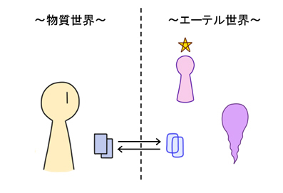
従って、エーテル体の世界からのメッセージが、カードの結果として表現されるようになるのである。ここで、そうしたメッセージが表現されやすいように出来ているのが、タロットカードの特徴である。極端な話、エーテル体の住人にとって表現しやすいものであれば、カードの中身は何でも良い。
このように、タロットカードはエーテル体の影響をよく受ける必要があるため、自身のエーテル体をタロットカードによく馴染ませておいた方が当たるというのが、タロットカード使いが心得ておくべきことである。
「エーテル世界」では、「自分」と「他人」の境界というものが、「物質体」の世界と比べて曖昧になっているが、それでも「自己」と「他者」の境界というのはある。
特に、「自己」の持ってる領域というのがある。ここで言う「自己」とは、前にも述べたように、魔術の世界で「高次の自己」と呼ばれているようなものである。また、魔術において、「高次の自己」にも近い、『ＨＧＡ（聖守護天使：ホーリー・ガーデン・エンジェル）』と呼ばれる存在がいるが、それが統治している領域というのもある。
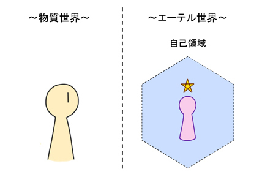
魔術や魔法を行う上で、こうした『自己領域』というのを意識していくと良い。例えば「願望実現」といったものについてだが、これは、「自己」に関することならやりやすいのである。しかし、「他者」も変える必要があるという話になると、不可能ではないが、容易ではなくなってくる。
同じく、「未来予知」もそうである。これも「自己」に関することなら容易に予想できるが、他者が絡むと難しくなってくる。
このように「他者」が絡んでくると、問題が難しくなってくるわけだが、「他者領域への関与」については、次の項目で詳しく述べる。
次に「他者領域への関与」についてである。「自己」が「自己領域」という自分の領域を持っているのと同じように、「他者」もそういう領域を持っている。魔術や魔法を行っていく上で、そのことを意識する必要がある。
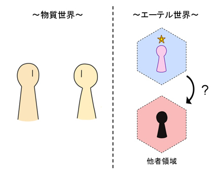
例えば、「願望実現」であるが・・・典型的な「願望」としては、「お金が欲しい」とか「恋愛成就」とかが挙げられる。すると、「お金」に関しては、誰かから貰う必要性というのが出てくるため、「他者」が絡んでくるようになるし、「恋愛成就」に至っては、そのまま対象となる相手が絡むことである。
こういったことは、上手くいくためには、相手のことも考えなければいけない・・・ということになる。
「自己」の願望の力によって、相手を変えることは不可能ではないが、その対象となる「他者」も何かしらの「願望」というのを持っているのである。このように、「願望実現」は、基本的には「自己」の力で行うものだが、他者の影響が絡んでくる場合、「自己」の願望と、「他者」の願望とのせめぎあいということになってくる。
従って、このようなことは他人が絡むと事情が難しくなるため、「他者領域」への関与の危うさというのを意識する必要がある。ここはなるべく、「自己」も「他者」も得するような、Ｗｉｎ＆Ｗｉｎの関係に持っていければ良いだろうと思う。
また、逆に言うと、「自己」に関する「願望実現」の魔術は、安全性が高いため、積極的に使っても良いということが言える。例えば、自分自身のモチベーションアップに繋がる所や、身体的な悩みの解消に関する所である。
次に「未来予知」についてである。これは超能力としてたまに言われることがあるが、信憑性はなかなか微妙なものである。また、「予知夢」といった事象も、超能力としてたまに言われることがある。
『認知の法則』によって、エーテル体を認識できるようになった時、エーテル体の世界は、時間を超越しているため、そこから情報を読みとることができるようになる。これが「予知」のメカニズムなのだろうと思う。
しかし、これには注意点がある。やはり、「分かる所までしか分からない」という道理があるのである。
実は、「予知」は、自身の「自己」に絡んだ所までは、結構簡単に分かるのである。すなわち、自分を形成する「本性」までが絡んだ全体的な事柄については・・・自身の「潜在意識」と言えるものは、よく知っていたりする。この「潜在意識」が「エーテル体」ともアクセスしているため、自身の「潜在意識」が分かる範囲のことであれば、結構、当てることができるというわけである。つまり、「自己」が絡んだ所までの「予知」とは、自分の身体にとって、どこまでのことが達成できるのか？あるいは、どういったことが起こりえるのか？・・・といったようなことを踏まえた、予測のようなものである。
しかし、これは「他者」が絡むとそう簡単にはいかないようになる。不可能ではないものの、「他者」との絡みで予知を当てるには、「他者」をよく理解している必要がある・・・ということになる。これが難しいのである。
従って、社会が絡んだ事象というのはなかなか当たるものではなく、仕事やビジネスといった事柄は、「他者」がよく絡む世界なため、色々と難しいことが多い。やはり、これに関しては、地道に社会を理解していくほかないのだと思う。
天候や地震といった、壮大な自然現象の場合は、また何か別の大きな力の影響を受けている。こうした自然災害の「予知」に関しては、また別のジャンルということになりそうだが、やはり、簡単ではないだろうと思う。（これも、多くの人々の意識の影響によって、発生の仕方が変化するという説があったりする。）
その他、「予知」にも色々と種類があると思うが・・・何にせよ「エーテル世界」にある「何かしらの情報源」を元に「予知」を行っていると言える。その場合、「情報源」をベースにした「予知」までは可能だと思うが、社会的事象の細かい所までは、なかなか難しいものである。
また、過去から未来への事象の流れというものは「川の流れのようなもの」という例えが正しいだろうと思う。大体分かる所に関しては予想がつくのであるが、少しの揺らぎで変化することもある。
従って、このような「エーテル世界」を踏まえた「未来予知」というのは、出来ないわけではないが、万能ではないことをよく分かっておく必要があると思う。
さて、次は「ガイド」という存在について、「エーテル世界の仕組み」を踏まえて述べることする。「ガイド」については、以前にも述べたことだが、「ガイド」とは「エーテル世界」にいる存在であり、自分をより高次元の世界へと導いてくれる、または、成長や意識進化をうながしてくれるような、そんな霊的存在である。
「ガイド」は、魔術において出てくる「高次の自己」と関わりを持つ存在である。むしろ、「高次の自己」が「ガイド」であるとも言えるし、「ガイド」は「自己」以上に高次元の存在だと言えるかもしれない。このあたりは、どう定義するかによって色々と言える所だと思う。なんにせよ、自分を成長させてくれる存在が「ガイド」である。
ガイドは、「エーテル世界」という、曖昧な世界の中にいる存在であるため、まず、普段の人間にとっては、意志疎通が難しかったりする。具体的な幻聴のレベルで声が聞こえることがあるかもしれないし、イメージを膨らませるとメッセージがひらめく場合などもあるかもしれない。自動書記のように書いてみると分かる場合や、夢やタロットカードといったイメージを通じて、非言語コミュニケーションによって分かる場合もあるかもしれない。そのあたりのやり方は、人によって違う所だと思う。
ガイドを認識することは、人によっては難しい場合がある。ガイドを認識するつもりでも、そうでない別のものを認識してしまい、それをガイドと勘違いすることもある。この辺りは、「エーテル体」という曖昧なものを扱う、魔術や魔法全般に通じている難しさでもある。
エーテル体の世界の中には、自身の「低次元のエゴ」と呼べるようなものと繋がっている存在や、「自己」と全く関係のない「他者」と繋がっている存在などもある。そうした雑念や妄想のようなものがある中で、悪い方向に向かわないようにする必要がある。そうしたことを防ぐために、魔術や魔法における作法や、儀式魔術といったものがある。また、「自己」と繋がりやすくするためのアイテムなどもある。
ちゃんとした「自己」に通じているような本物は、大体、世の中全体のことを考えており、また、その中で人のためになることや、全体が調和的に進化していくような道を見ている。「自己」や高次元の存在は、個人的な恨みで動くということは、基本的に無い、と言っても良い。また、時には自分に厳しいこともある。
良き「ガイド」を見極めるためには、このような「自己」と結びついているものを見極める必要がある。そのため、「自己認識」や、「自己」と「他者」を区別する行法と併用していくと良い。
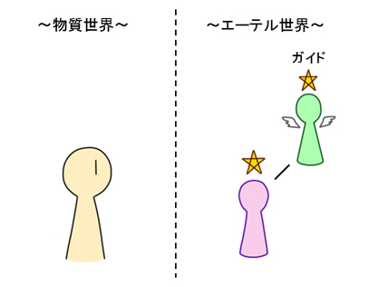
ちなみにこれは、「タルパ」といったものと付き合う場合でも同じことが言える。タルパの場合は、「ガイド」というよりも、どちらかというと友人に近い役割を持つことが多いだろうが、こちらも「自己」と結びついているものと付き合った方が良い。
さて、ここで、魔術や魔法を扱うにおいて付きまとう現象である、精神の「分裂」について述べていく。そもそも、魔術や魔法で行うことは、自身の意識や無意識の中に「別の精神体」のようなものを呼び込むようなものである。こちらではそれを「エーテル世界」にいる存在だという風に扱うが、世間的に見ると、それは、分裂症か幻覚症のように解釈されてしまうものである。
このように、精神が分裂する現象が起きていく中、「統合失調症」と診断されるものになると、それは「病気」として扱われるし、普通に生活することもままならないものであれば、それは治療すべき事態である。しかし、軽度の「分裂症」や、精神が分裂していく傾向というものは、結構自然に起きるものである。
「分裂」の中には、半ば強引かつ人為的に自我を分裂させるケースというのもあるけれど、それはさておき、自然に近い分裂について述べていく。
まず、魔術や魔法における「分裂」とは、単純にエーテル体の世界に気付くことや、エーテル世界の住人や自分（自己）を見つけることが、「日常的な意識」にとっての「分裂」だと言うことができる。
それから、「分裂」というものは「自我否定」によって起きるものである。普段の人間は『自我同一性』といって、自分が普段考えている「自我」を自分だと思い、それは統一のとれた「自分」だと思って扱う。しかし、自身の「無意識」を探求していくことで、このような「自我同一性」の枠の外にいる自分というのを発見することになる。普段は抑圧されているそうした意識は、自身の「影」のように映り、それが「夢」の中で出てきたりすることもある。（この辺りは心理学者である「カール・Ｇ・ユング」の得意分野である。）こうした「影」を発見するようになると、「自我同一性」を「否定する自分」というのが立ち上がってくるようになり、「分裂」が始まるようになる。
このように、「分裂」は「自我否定」によって起き上がってくるものである。さらに突き詰めると、「自己」を発見した後に、「もっと高次元の存在」が出てきた場合、さらに向上するために、「自己否定」によって分裂状況が起きることがある。このような『メタ的な視点』（他人から自分を見たかのような視点）を用いて自分を向上させる場合、「分裂」という現象が必ず起きてくる。こうした分裂の状態を乗り越えて、自分自身をより進化させていくことが、魔術や魔法において目指すべきことである。
しかし、ここで分裂したまま、統合も出来ず収集がつかなくなることもある。こうした中で、「統合失調」の状態を防ぐコツは、エーテル体の世界の中で、あらゆる「分裂」をまとめ上げる存在を探すことである。そうしたまとめ役としての「高次の自己」であったり、それよりも「高次元の存在」というのは必ずいる。その存在に、自身の無意識を統治する中心的役割をもたせることが大事である。それは、「カバラ」で言う所の『ケテル』的な存在かもしれないし、それよりも、もう少し人間に近い個性を持った存在かもしれない。
あとは、「高次元の世界」といったものとの距離感を大事にすること・・・なども大事だと思う。それらと付き合っていくうちに分かってくることだが、「高次元の世界」の言い分は正論であったとしても、それらの言っていることは、人間がそのまま鵜呑みにするに相応しいものではなかったりする。このあたりの付き合い方は、人間関係においての付き合い方とも近かったりするのかもしれないが、結局の所、高次元の世界相手でも人間の世界でも、人付き合いやコミュニケーションを上手くやった方が、上手くいくということになるのだと思う。
次に、「憑依現象」といったものについて述べてみようと思う。「憑依現象」の例として『狐つき』と伝えられる現象がある。狐の霊が自身に取り付いて錯乱してしまうという、科学で証明されないオカルトな伝承ともされるような現象であるが、日本でよくある伝承としては、無視できないものだと思う。
魔術や魔法の世界観を考慮すると、これは「意識」に関する超上現象なので、よく起こることだといっても良い現象である。原因が「狐の霊」でなくとも、なんとなく他人の「念」や「意識」に影響されるケースなんかは日常茶飯事なぐらいである。
こうしたことは、下手な「妄想」で過剰になってしまうケースもある。エーテル的な世界に対する「拒絶」で防げるケースもあり、多くの人はそれで安全に過ごしているけれど、起きるときは起きてしまうものでもある。本気でおかしくなってしまった場合、どう解釈するべきだろうか？
こうしたものは、現代科学では、やはり先ほどのような「精神分裂」の類の症状であり、「統合失調症」だとも解釈されてしまうが、エーテル体の世界を踏まえると割と普通の現象である。
魔術や魔法において「狐つき」のような憑依現象は、あらゆる「他者の意識」がエーテル体の世界から自分に入り込むことによって起きるようになる。それから、「自己」の意識と「他者」の意識の境界が曖昧であるほど、この「入り込み」現象が起きやすくなる。これが「憑依」のメカニズムである。こうした「憑依」によって新しい力を得ることもあるけれど、何も対処しない状態でいると、害が及ぶ場合がほとんどである。
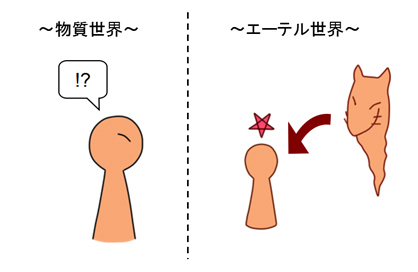
この対策としては、魔術や魔法においてこれまで説明してきた「自己」をしっかりと認識し、「自己領域」をしっかりと意識することである。「自己のもの」と「他者のもの」をしっかりと区別するようにし、追い払いたい場合は、「他者のもの」に対して蓋を閉めるようにすればオーケーである。また、ここで「他者のもの」と上手いこと付き合いたい場合も、「自己」と「他者」をしっかりと区別した上で付き合う必要がある。
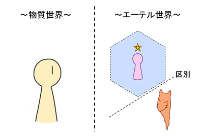
それから、こうした「憑依対策」は、先ほど述べた分裂症対策にも通じている。自分自身の中にある「より高次元の統治存在」に任せることによって、雑多な「他者の意識」が上手く調整されることがある。
あとは、ここでこれまで述べてきた「魔術道具」や「ラッキーアイテム」を使用することも有効である。「水晶」や「ロウソク」といったものも良いし、「塩」（天然塩）なんかもコストパフォーマンスが良いものとして最適だと思う。それから、「念仏」や「マントラ」といった呪文を使うのも有効である。
ここでまた少し脱線して「魔術・魔法」と「芸術」の関係について述べることにする。
魔術や魔法を扱うのに必要な「エーテル体」の認識には『ミクロ知覚』が重要だと言ったけれど、このような「ミクロ」の力は、「芸術」などが持っていることがある。
例えば、有名なものとして、江戸時代の画家「葛飾北斎」の絵などがある。北斎の代表作である『神奈川沖浪裏』は、波の形が何故かギザギザしているし、波のうねり具合も特徴的であるが、これは、ハイスピードカメラで波の写真を撮った時の姿に酷似しているということが、現代になって分かるようになった。
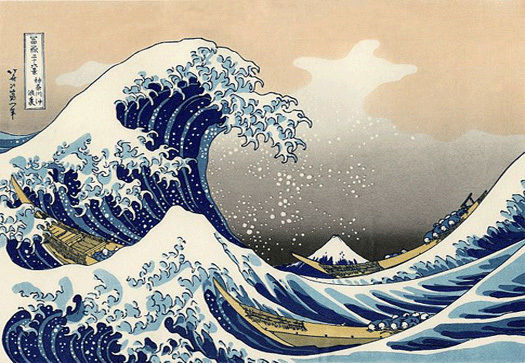
つまり、北斎は、まるで『刹那』とでも言えるかのような、「一瞬の時間」を捉えて絵を描いていたのである。このような「ミクロ」要素を持つ絵が、世の中に強い影響力をもたらしたというわけである。
そもそも、「芸術」とは「小なるものが大なるものに勝つ」ということの表れであり、それを表現することが芸術のあるべき姿なのではないか？と思う。そして、これは人間の持つ可能性を示すことにも繋がるのだと思う。
それから、「絵」だけでなく「音楽」なども重要であり、音楽は「波動」を直接表現することができるものなので、大変可能性のあるものだと思う。
こういう繊細で高度な能力を、万人が持つのは大変かもしれないが、なるべく多くの人が持つようになり、良い芸術がより多く見あたるようになると良いと思う。
このような芸術と、魔術や魔法が目指しているものは、本来は一緒なのだと思う。芸術の力を魔術や魔法が高めることがあるし、その逆というのもある。従って、その双方を活かして、世の中が盛り上がるようになると良いと思う。
さて、次は、「デジタル」と「アナログ」、それと、「エーテル体」との関係の話をしようと思う。「デジタル」というと「コンピューター」の世界だが、現代においては、「コンピューター」の世界と絡めて、世の中全体を捉えることが必要とされている。魔術や魔法においては、加えて「エーテル体」を絡める必要がある。さらに、「素粒子」の仕組みを考えて、「粒」と「波」も絡めて考えてみようと思う。
「デジタル」、「アナログ」、「粒」、「波」、「物質体」、「エーテル体」の関係は、恐らく以下のようになっている。（「アナログ」を中心に扱うものとして「★」マークを付ける。）
[コンピューター・物質体] ← [デジタル] ← [粒] ← [★アナログ・身体] → [波] → [エーテル体]
まず、コンピューターは、イコール「物質体」に位置する。世界をコンピューターが認識しているようにデジタル映像的に捉えることは、モノを物質的に捉えることと同義であり、それによって、物質は物質としての強度が増すことになる。
それから、アナログは、イコール「身体」に位置している。そもそも、アナログとは、「身体」で感じている世界だからである。ここでいう「身体」は、「肉体」とは違うことに少し注意しよう。「身体」とは、「自分が世界を感じている場所」のことを言う。
このように捉えると、身体は「素粒子」と同じ立ち位置にあると言うことができる。そして、アナログと身体の位置から、「波」や「エーテル体」と接合することができる。しかし、「エーテル体」と「デジタル」の位置は、割と離れている。
従って、エーテル体とデジタルはこのように離れているため、エーテル体を伝えたり、扱ったりするのは、アナログの方がやりやすいということになる。デジタルによるエーテル体の表現も不可能ではないが、アナログと比べると制約が目立つようになってしまう。
しかし、現代においては、デジタルであることのメリットというのも多い。それは、コンピューターのデジタル保存機能と、ネットワーク通信という機能によって、時間と空間の制約なしで伝えることができるからである。
何か「エーテル体」のものを表現したりする場合・・・絵画やアートという分野で表現するのだとしたら、例えば、メキシコなんかでは、画家が壁画で自分の世界を表現していたという文化があるらしい。また、西洋の昔の画家などでも、大きなキャンパスに絵を描いて、それをどこかに飾るという手段が王道であったと思う。しかし、こうした手段が「アナログ」の場合、身近にいる人しか見ることができないという制約があったり、長い時間が経つと劣化してしまうという性質もある。その一方で「デジタル」の場合は、インターネットを介せば、どこまでもその絵を届けることができる上に、絵が劣化することも全く無いということになる。デジタルにはそうしたメリットがある。
このように、エーテル体との絡みで考えてみても、アナログとデジタルの表現の手段は、甲乙つけがたく、メリットがそれぞれあるものなのである。
次に「魔術・魔法」と、コンピューターテクノロジーによって生まれたものと、『リアル身体』・『デジタル身体』・『エーテル身体』という、「３つの身体」との絡みについて考えてみる。
まず、人間は肉体という「身体」を持っており、普通の人間が持っている「身体」は、３次元空間とされるこの世界にいる。いや、３次元空間にいるというよりかは、このリアルの世界を感じている場にあるのが、人間の「身体」である。各自、本書を呼んでいる間も、自分が見ている「光景」や、感じている「世界」というのがあると思うが、それを感じているのが「身体」である。これが『リアル身体』である。
次に「ゲームの世界」にある「身体」というのを考えてみよう。一般に言われている「ゲーム」とは、正式名称としては「コンピューターゲーム」と呼ばれるもののことを指すが、現代においてゲームの世界はどんどん発達しており、リアルな３Ｄ画像をゲームの中で動かせるようになったことに加え、リアルタイムでネットワーク通信をして、それらをオンライン上で動かすことも可能になっている。
そして、人間が「コンピューターゲーム」をプレイすることで、新たに生まれる「身体」というのがある。それが『デジタル身体』である。「２Ｄゲーム」の場合はまだその要素が薄いのであるが、「３Ｄゲーム」となるとデジタル身体に入り込む要素が強い。さらに、「３Ｄオンラインゲーム」となると、より一層その世界に入り込む力が強くなる。
次に、「魔術・魔法」の話である。魔術や魔法を駆使していくと、自身の意識が「エーテル世界」に入り込んでいくようになるわけだが、この「エーテル世界」にある「身体」というのもある。これが『エーテル身体』である。
「エーテル世界」は「無時間の世界」であると言うことができると、以前に説明したが、実は、この「無時間の世界」は、「４Ｄ（４次元空間）」と呼べるものなのである。一方で、デジタルやコンピューターの世界は、絶対的な「時間」が流れている。つまり、完全な「３Ｄ（３次元空間、４次元時空とも言える）」なのである。つまり、『エーテル身体』は「４Ｄ」にあり、『デジタル身体』は「３Ｄ」にある。その中間の『リアル身体』は、「４Ｄ」と「３Ｄ」の中間にあると言うことができる。純粋な「身体」は、イコール純粋な「アナログ」であることは先ほども説明したが、それは、「エーテル体」と「物質体」の中間にあるということである。
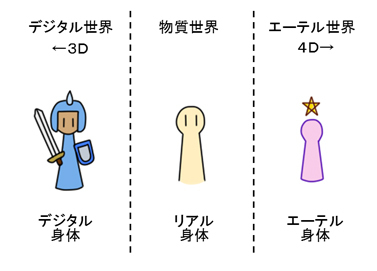
人間が「４Ｄ」の世界に入る時、まずは『リアル身体』から入り込むことになる。しかし、あまり『デジタル身体』に没頭することになると、「４Ｄ」と「３Ｄ」の中間にあるという本来の『リアル身体』の感覚を忘れ、『リアル身体』が完全に「３Ｄ」にあるかのような状態になってしまう。ここで『リアル身体』の「４Ｄ」の感覚が鈍るようになると、「エーテル世界」に入り込む難易度が上がってしまうのである。
先ほど『デジタルとアナログの関係』の項目で述べたように、デジタルの持つ力と、コンピューターゲームの持つ可能性はかなり奥が深い所だが、『デジタル身体』を持つことによるリスクは意識しておく必要がある。
さて、ここで視点を変えて、『デジタル身体』の仕組みを逆手にとり、『エーテル身体』の仕組みについて考えてみることができる。『デジタル身体』には、「２Ｄゲーム」→「３Ｄゲーム」→「オンライン３Ｄゲーム」という発展構造があったが、これは、『エーテル身体』にも言えるのではないか？と思う。このように、逆に考えてみるのも面白いわけである。
このように、魔術や魔法の世界観を踏まえると、コンピューターの登場により、『デジタル身体』が出来上がることによるリスクが登場してきたものの、広い視野で捉えることにより、新しいことが分かるようになってきたのではないか？と思う。
最後に、『シリウス』という存在について述べていくことにする。
『シリウス』とは、恒星の名前の一つとして名付けられているが、これは「太陽の背後の隠れた太陽」とも言われていて、オカルト界隈でも重要視されている星である。
ネットでパブリックドメインになっている『シリウス』の写真もあるが、これを見るだけでも、何かしらのヒーリング効果や、意識促進公開がありそうである。
この『シリウス』という星については色々と噂がある。西アフリカあたりに『ドゴン族』という民族がいる。ドゴン族の神話はかなり面白く、神秘的な民族として取り上げられることもあるのだが、このドゴン族は、何故か『シリウス』の存在を知っていたという民族としても有名である。ドゴン族の神話に出てくる『ノンモ』という神様（精霊）が、『シリウス』から来た存在とも言われていて、それは、「半人半魚」の姿として描かれている（「半人半蛇」とも言われる）。
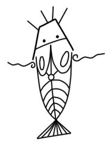
それから、自分が聞いたことがあるのは、古代の「エジプト人」が、もともと『シリウス』から来たという噂である。およそ紀元前３０００年近くも前の世界となると、今の人類が想像できるような「人間」のいた時代とは言えない領域である。これが本当であるならば、あのエジプトの「ピラミッド」は、その技術で作られていたものだと言うことができるし、エジプト産の魔術が派生したものが、西洋を中心に発展していき、現代でも伝えられているのは、『シリウス』が発端となっていると言うことができる。
それから、筆者が研究している『ヌーソロジー』という宇宙論でも、『シリウス』の存在がほとんど中核にあるという特徴がある。その研究結果から、自分が思うに、この『シリウス』というのは、「中間の存在」であるということである。それは、「一神教的な領域（天上の果て）」と「地上」の中間であり、「精神世界」と「物質世界」の中間でもある。
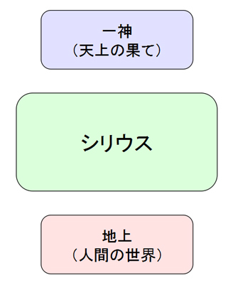
このように、上方と下方と言えるような二つの世界があり、それらの双方をひっくるめた領域を統治するもの、または、調整する力を持っているものが『シリウス』だと思う。
従って、よく宗教や魔術をやっている人の中でありがちな、精神世界にのみ没頭するような態度は『シリウス』とは異なるということになる。精神世界や霊的な世界のことを踏まえつつ、「物質世界」や「地上」にあるものから、新たなものを作り出すという方向性を持っているのが『シリウス』だと思う。
それから、「天上の果て」と「地上」の中間にあるものというのはどういうものなのか？それは、「一神教」的な世界観にとっても、「地上」的な世界観にとっても「曲がっている」ものだということになる。ここは、「曲げる」という意味を持つ言葉である「Wicca（ウィッカ）」と、そこから派生した「Witch」という言葉・・・つまり、「魔女」の話とも繋がってくるようになるわけである。
従って、魔術や魔法の目指しているものは、『シリウス』の目指しているものに行き着くのではないか？と思う。
さて、ここで、従来の「西洋魔術」といった所では、あまり語られていないような話をしよう。
自分なりの「魔術」や「魔法」の研究、それから、『ヌーソロジー』といったものの研究・・・そうしたことをしていたら、魔術や魔法における「４つの区分」というのが見えてくるようになった。ここで言う「魔術や魔法」というのは「カウンターカルチャー的な性質を持つもの」として「広義における魔術」のことを言う。そうした「広義魔術」における「４大区分」について、これから説明する。
まず、古代から伝えられている「魔術」と、それから、「神秘主義」や「ヘルメス学」といったもの、さらには、東洋で発展した「身体技法」など・・・それらにある「要素」を書き出して行くと、以下のようになると思う。
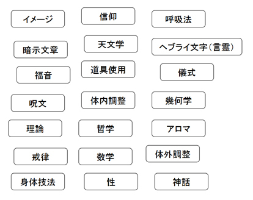
それから、これらの要素で近いグループをまとめてみると、以下のようになる。
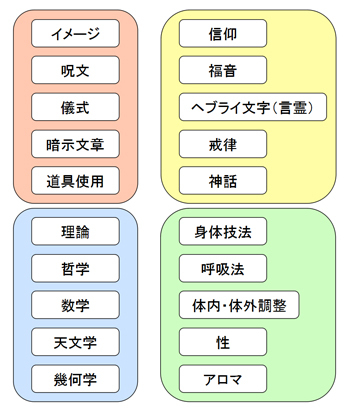
そして、これらをもう少し簡潔に書いてみると、以下のようになると思う。
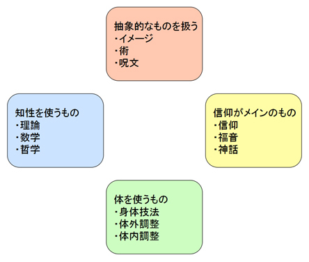
そこで、それぞれのグループにネーミングをしてみることにする。次のようにギリシャの言葉を当てて、それぞれ『Mageia：マゲイア』・『Pistis:ピスティス』・『Nous:ヌース』・『Soma:ソーマ』と名付けることにする。また、漢字で『術』・『信』・『智』・『体』をそれぞれ当てることにする。
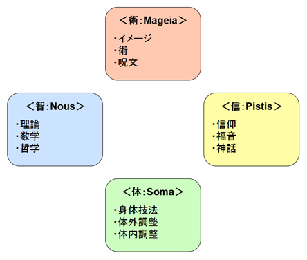
以上のように、広義における「魔術や魔法」というのは、この４つのカテゴリーにざっくりと分けることができるのではないか？と思う。
それから、後ほど詳しく説明するが、この４つは、『術：Mageia』→『信：Pistis』→『智：Nous』→『体：Soma』→『術：Mageia』・・・という風に発展していく構造を持っている。
ここで、それぞれのカテゴリーについて説明していく。
まずは、『術：Mageia』についてである。
英語の「マジック(Magic)」の語源は、ペルシャ語の「マギ(Magi)」から来ており、その「マギ」から、古代ギリシャの魔術である「マゲイア(Mageia)」という言葉が派生している。つまり、一般的な「魔術」というと、このカテゴリーのものを中心に指すということになると思う。
古代ギリシャで「マゲイア(Mageia)」以外の「魔術」というと、他にも「ゴエテイア(Goetia)」や「テウルギア(Theurgy)」というのがあり、「ゴエテイア」は「妖術」と訳されるものであり、「テウルギア」は「御神術」や「神働術」と訳されるものである。「テウルギア」なんかは、割と『信：Pistis』系に近いかもしれないが、ひとまずここでは、儀式魔術など、「術」と呼べるものを用いるものは、まとめて『術：Mageia』系として扱うことにする。
『術：Mageia』系のものの特徴としては、魔術や魔法において「原初からあるもの」に該当するのがこれかもしれない、ということである。
それぞれの民族が崇拝している「土着信仰」や「アニミズム」といったものがそうであるし、エジプトなど、有史以前から何処からともなく伝えられてきた儀式魔術なんかもそうである。
原初の状態から時代が進んでいくことによって、人間は、宗教やら学問やら科学やら・・・色々なものを作り出すようになっていくが、『術：Mageia』が持つような、「原初からあるもの」の力は、それらに対するカウンターとしての役割を持ち続ける、ということになると思う。
次に『信：Pistis』カテゴリーについてである。
西洋には「ユダヤ神秘主義」や「キリスト教神秘主義」といったものがあるが、一般的に「神秘主義」と呼ばれるものはこれに該当すると思う。また、「カバラ」や「グノーシス主義」なんかもこの役割を持っている。それから、日本においては「仏教」もこの役割を担ってる側面が強い。
『信：Pistis』は、主に「信仰」の力を活かすものである。時に「神話」からその力を借りることがあるし、「聖書」といった「福音」から力を借りることもある。ユダヤ教神秘主義の場合は、ヘブライ文字の持つ言霊の力を借りることもある。そうした中で、「神」の探求を行うのがこの立場の特徴でもあり、「絶対善」的な存在に対する探求心を持っている。
こうした「神秘主義」なんかが『信：Pistis』系に該当するわけだが、「神秘主義」というものは、「信仰」の力を活かしながらも、「宗教」の生み出す弊害に対抗する役割を持っているものである。その中で、一番原始的なものが、ユダヤ教に対して生み出された「ユダヤ神秘主義」と、そこから派生した「カバラ」なのだと思う。
「ユダヤ・カバラ」の権威として現代に生きている、「ゲルショム・ショーレム」という人物がいる。その人の著書に書いてあったことだが、「神秘主義」と「宗教」というのは、かなりきわどい関係にあるものであり、そうした中で、「神秘主義」には、「保守的側面」と「革新的側面」があるようである。
まず、「神秘主義」を追求する神秘家というのは、本来、宗教家にとって、お互いに敵とはならない存在である。何故なら、宗教というのは、必ず何かしらの「神秘体験（グノーシス体験）」が発端にあるものであり、残っている文書や教義などもそこから来ているものだからである。従って、優秀な神秘家の突き詰めているものが、既存の宗教の教義や、古来の解釈で疑問となっている所を補強するものであれば・・・それは宗教家にとっても助かる存在となる。これが、「神秘主義」の持っている「保守的側面」である。
次に、「革新的側面」についてだが、神秘家が新たに提示してきた教義が、既存のものを補強するものなら話は簡単であるが、それは「新たな見解」をもたらす場合もある。宗教で信じられてきた「ある正解」に対して、「別の見解」というのが出てくると、そこで「何か一つが正しい」という、一神教的な体制が崩れるのである。これが「神秘主義」の持つ「革新的側面」である。
こうした二つの側面を持っているため、優秀な神秘家というのは、宗教家という立場とは違う、新たな見解を示しつつも、宗教家を説得する能力を持っているのである。また、こうした二つの側面を持っているのが『信：Pistis』系の人の役割であると思う。
さて、この『ピスティス(Pistis)』というギリシャの言葉は、「信仰」というより「信頼」という意味を持つ側面が強い、なかなか良い言葉のようである。例えば、聖書にある「イエス・キリスト」なんかは、「父なる神」のことは信じているが、ユダヤ教の安息日の規律などは破っている。そもそも、このような「聖書」とは、理想的な「信仰」の態度が表現されているものなのではないか？と思う。このような態度が「ピスティス(Pistis)」という言葉が指していることであり、他者が行っている「信仰」よりも、自分が信ずるべきものがあった場合、そちらを優先するという意味合いの強い言葉であると思う。
次に『智：Nous』カテゴリーについてである。
『ヌース(Nous)』とは、古代ギリシャの哲学が全盛期であった時代、「プラトン」といった哲学者が愛用していたような言葉である。それは「知性」という意味であるが、神的知性や宇宙的知性といったものを表していて、何処か神秘的な領域にある知性に近い。それから、「ヌース(Nous)」は「グノーシス(Gnosis)」という言葉とも通じており、それは「叡智の認識」と一体となった「知性」だとも言える。
それから、自分が研究している『ヌーソロジー』という宇宙論は、昔の名前は『ヌース理論』であったが、そこで使われてる言葉が、そのまんまコレである。そもそも、ヌーソロジーの名称も、提唱者の半田広宣さんがギリシャ語の「ヌース(Nous)」からとってる側面が強い。(それと、『Noos』という、チャネリングソースのオコツトが独自に提示した用語から、この名称が名付けられている。)
そして、やはり『ヌーソロジー』も、プラトンといった哲学者が推進していた、ギリシャの考え方にかなり近いようなものなので、ここにこの言葉を当てる方針で良いと思う。
『智：Nous』は、「ヘルメス学」のように、魔術と学問の違いが無かった時代の学問を追求する立場だと言うことができる。それは「魔術」と方向性が非常に近かった時代の「数学」や「哲学」であり、「理論」や「構造」について明らかにする力が強かったりする。また、「現実で起きている仕組み」と絡めて魔術的な世界を考えるということは、「物質」と絡めて考えるということにも通じており、「錬金術」の発想にも繋がるようになる。
筆者が今、こうして構造的な所に特化したような内容が書けるのも、『智：Nous』系のような『ヌーソロジー』を研究していたおかげなのかもしれない。
それから、『智：Nous』は学問的な性質が強いわけだが、先程の『信：Pistis』の話と同様に、学問にも「保守的側面」と「革新的側面」があるように思う。特に、「数学」や「哲学」なんかがそうである。
『智：Nous』系のものとして、特に「数学」なんかは、「便利で役に立つもの」を作ることができれば「意識進化的な探求心を高めるもの」にも使うことができる。一般的には前者の機能しか着目されないことが多いかもしれないが、本来はそうした二面性を持っているのが「数学」というものだと思う。それから、「哲学」も同様である。
このように、やり方は違えと、『智：Nous』も、『信：Pistis』と同様に、二面性を扱うものなのだと思う。
次に『体：Soma』カテゴリーについてである。
『体：Soma』系は、基本的に「身体」を使って魔術的な行為を行うものが該当するが、これは主に西洋よりも東洋で発達している。
西洋で「身体」を重要視している所というと・・・古代エジプトでアロマテラピーが発達していることがあった。その他、魔女の扱う「ウィッチクラフト」では、ハーブや薬草の扱いなどに関しては、発達している所がある。
それから、西洋でも「デーヴィッド・Ｈ・ローレンス」といった、まれに東洋的な「腹の意識」や「太陽神経叢」といった器官に関心を持つ人がいた。しかし、そういう人はそう多くはないように思える。「アレイスター・クロウリー」も、ヨガという身体技法に大変興味を持った人物であり、実践していたことで有名だが、その内容は東洋に行った時に学んでいた。
このような「身体技法」は、西洋から見ると「何故か東洋で発達している」ということになるのだと思う。では、何故、西洋では身体技法が発達しなかったのか？
恐らく、これは割と単純な問題のような気がしていて、白人の身体では東洋人の身体技法が向いていなかったからではないか？と思う。いや、東洋のやり方が向いていないと言うよりは、「イメージ」や「思考」を使ったやり方が、白人の身体にとにかく向いていたからだと思う。逆に言うと、東洋人に白人の発想が出来たかというと、それはやはり無理であったため、文化的に発想が及ばないものだったのだと思う。
それから、白人は「一神教的世界観」を持っているということが大きい。「一神教」の世界の中では、人間の「身体」よりも、思考の中で生まれた「神」という概念の方が力を持っている。「イメージ」や「思考」の力で「成功」を引き起こす、「成功法則」的な発想も、「キリスト教」の土壌があるからこそ発展していったものなのである。
さて、東洋人が持つ秘術の多くが該当する『体：Soma』であるが、『術：Mageia』→『信：Pistis』→『智：Nous』→『体：Soma』と発展していく構造を考えると、『体：Soma』は「最後にくるもの」である。特に、現代において「資本主義社会」が行き着く所まで行っている今の状況は、自身の「身体」というものが置き去りにされがちである。そこで、自身の「身体」とどう向き合うか？という問題に突き当たることになる。このような問題を担っているのが『体：Soma』だと思う。
さて、以上のように説明した「広義魔術における４大区分」であるが、これは、魔術の歴史における色々な時期において、各カテゴリーに該当するものを当てはめてみることができると思う。
試しに、「黄金の夜明け団（ＧＤ）」登場の時あたりの19世紀を見てみると、恐らくこうなっていると思う。
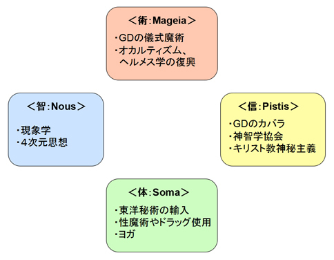
まず、『術：Mageia』はＧＤのメインの流れであり、ＧＤの前にあった『英国薔薇十字協会』といった団体が、オカルティズムを復興しようとしていた流れもこれに該当すると思う。次に、『信：Pistis』は、ＧＤのカバラ的な側面であったり、「ヘレナ・Ｐ・ブラヴァツキー」の立ち上げた『神智学協会』の方向性もそれに該当すると思う。それから、『智：Nous』は、哲学や数学の話になるが、着目するべきこととして、この時代あたりに哲学者の「エトムント・フッサール」が『現象学』を追求していたことや、「エドウィン・Ａ・アボット」や「チャールズ・Ｈ・ヒントン」といった人物が『４次元』という概念を追いかけていたことがある。『体：Soma』は、東洋で登場した身体技法が輸入されていく流れに該当するだろうが、「アレイスター・クロウリー」が大体やっていた分野だったりする。
こうしたことに関しては、細かい所まで見るといろいろと言うことができるだろうが、おおざっぱにでも当てはめてみると面白いと思う。
そして、21世紀の「現代」だと、恐らくこうなっていると思う。
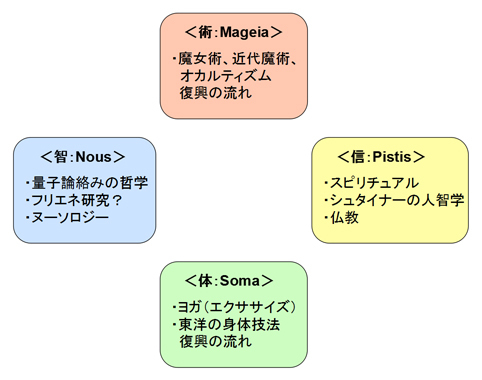
まず、『術：Mageia』は、オカルティズム復興の全般だと言えるだろうと思う。本書で目差しているものもそんな感じである。最近、「魔女」になることが少し流行ってきている動きがあるのが気になる所である。次に、『信：Pistis』は、やはり率直な「スピリチュアル」や、それに紐づく分野などが該当すると思う。それから、「シュタイナー」や「仏教」あたりが挙げられると思う。『智：Nous』は、最先端の哲学であったり、量子力学を絡めたものなどがそれに該当すると思う。古代では「数学」や「ユークリッド幾何学」と共に研究されていた分野が、今は「量子力学」や「非ユークリッド幾何学」に置き換わっている。もちろん、筆者の研究している『ヌーソロジー』がそれに該当すると思うが、最先端の数学や科学を絡めた哲学が他にもあるのか、気になる所である。「フリーエネルギーの研究」に関するものも、これに絡んでいるかもしれない。『体：Soma』は、身体を使ったワークを取り扱うもの全般であると思う。現代では「ヨガ」が「身体的なエクササイズ」として扱われるようになり、現代人が身体性を取り戻すためのセラピーとして機能していることなどが着目するべき所としてあると思う。
以上は、筆者が思いついた程度のものなので、各自で心当たりのあるものがあれば、色々と当てはめてみると良いと思う。
それから、現代において重要なのは「コンピューター」の利用であるため、各カテゴリーにおいて「ネット通信技術」や「コンピューター」がどう利用できるかを考えてみると面白いのではないだろうか？と思う。
以下、適当に書いてみる。
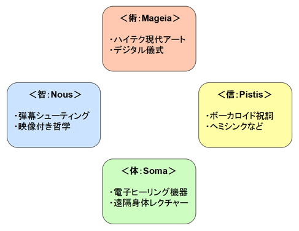
（※それぞれ、はっきりイメージできているわけではないので、これはあくまで例である。）
以上のように、ネットやコンピューターを、どのようにして魔術や魔法に活かしていくかをベースに考えてみても良いかもしれない。
こうした『術：Mageia』・『信：Pistis』・『智：Nous』・『体：Soma』の４つのカテゴリーは、それぞれ、西洋魔術における「四大元素」と呼ばれる、「火」・「水」・「風」・「土」の４つのイメージにも当てはまる。
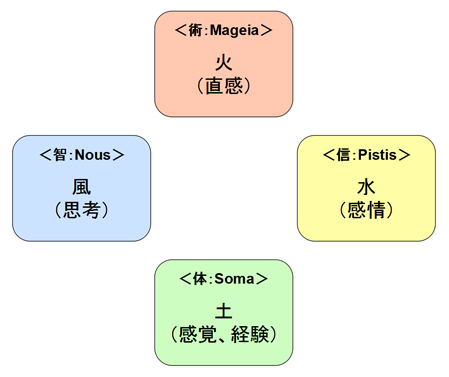
それぞれ、「火」は魔術や魔法の原動力そのものであり、「水」は信仰する心であり、「風」は思考を表し、「土」は肉体を含めた物質が当てはまっている。このように、それぞれを当てはめてみるとしっくり来るのではないか？と思う。
これらの４つのカテゴリーについて考えていくにおいて、ありとあらゆる魔術や魔法の種別を、４つのカテゴリーに「ハッキリと分ける」のは中々困難なことであり、中には「線引きが微妙」なケースというのも出てくる。
そこで、あるカテゴリーとあるカテゴリーを合わせ持った、「併用パターン」というのを考えてみよう。
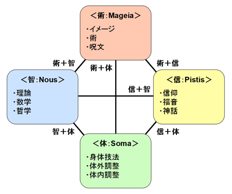
魔術や魔法を実践してる人の中には、それぞれのカテゴリーに属するものを、合わせ持つこともあるのではないか？と思う。
例えば、『術：Mageia』＋『体：Soma』であるとか、『術：Mageia』＋『信：Soma』であるとか、『信：Pistis』＋『智：Nous』であるとか・・・など、２つ持ってるパターンであるとか、それぞれを少しずつ摘まんでいるパターンなどもあると思う。
これを、先ほどの「四大元素対応」で言い換えると、「火」＋「土」であるとか、「火」＋「水」であるとか、「水」＋「風」であるとか・・・ということになる。そうやって考えるとイメージが膨らむ気がする。
これら４つの要素をすべて持っていれば、魔術や魔法の使い手としてパーフェクトであるが、どれか一つを極めた方が良いケースというのもある。そのあたりの美学や方針は、人それぞれであると思う。
(ちなみに筆者は、『智：Nous』＋『信：Pistis』を習得している要素が強く、それに加えて『術：Mageia』も学んでいる感じかもしれない。体術系はそこまでやったことがないが、食事に気をつけているという意味では『体：Soma』にも気を付けている。)
その他、「ドゥルーズ＝ガタリ」による書籍『アンチ・オイティプス』における、３段階の『機械』という要素に当てはめてみると面白いかもしれない。
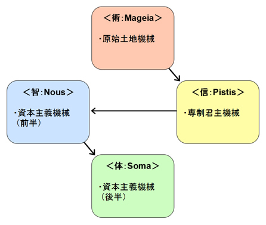
ここで出てくる『原始土地機械』・『専制君主機械』・『資本主義機械』というものは、それぞれ、書籍『アンチ・オイディプス』に出てくる用語であり、それぞれ難しい内容の中で出てくるものだが、簡単に説明する。
まず、『原始土地機械』は、原始時代にあるシステムと言って良いものである。例えば、原始時代の場合、まずは住む「土地」があって、その土地から取れる資源の分配などをしていく必要があるが、そうした基本的な所で発生するシステムである。畑から作物がよく取れるように豊穣の儀式を行うことや、原始的な自然災害に対処すること・・・などは、この段階で起きていると言うことができる。それから、「性」的なものに関する統制というのも、ここで始まることになるので、「性欲」のような原初的な欲求もこのあたりで絡んでいる。日本でいうと、まだ「卑弥呼」が出てきたかそれ以前かぐらいの時代に該当すると思う。
『専制君主機械』は、そこから国家が統治するようになることによってできたシステムである。「原始土地機械」の段階において発生する、作物の問題や、自然災害、それから、各村社会で起きていたイザコザなんかは、「国家」という枠組みを使って統治し、国家が大きくなることで対処するようになるが、大規模な「宗教」や「法律」といったものが、ここから登場してくるようになる。強い統率力による物質的な余裕が出てくるようになる一方で、国家による拘束力も強まってくる。それから、「一神教」的なものもここで登場してくるようになり、国家を統治する「王」・・・もとい、「君主」が「神」かのように扱われることも出てくる。日本でいうと、「聖徳太子」の登場や、「徳川幕府」の登場などが、このあたりの時代に該当するのではないか？と思う。
最後に、『資本主義機械』についてであるが、これは、「君主政治」から「民主政治」に、「共産主義」から「資本主義」になった際に出てきたシステムと言って良いものである。この「資本主義機械」は大きなポイントであるため、ここでは「前半」と「後半」とに分けることにした。「専制君主機械」で機能していた、「君主」や「一者」が国家を牛耳るという息苦しさから抜け出したものの、「民主政治」や「資本主義」になった社会でも、まだ問題は残り続けている。このような、21世紀の現代でもいまだに抱えている問題が絡んでいるのが「資本主義機械」の段階である。日本でいうと、「黒船」の登場から「明治維新」にかけて、そこから、戦後の「グローバリゼーション」によって高度経済成長していくあたりが、これに該当すると思う。
こうした３段階の「機械」は、「原始土地機械」→「専制君主機械」→「資本主義機械」・・・と進んでいくわけだが、そうした中で、『アンチ・オイディプス』的には、「資本主義機械」が「最終段階」ということになる。そして、魔術や魔法における「４大区分」の循環構造と合わせて考えると、もし、人間がこの「資本主義機械」を超えると、そこからまた新たな大地における「原始土地機械」に進むようになる・・・ということになるのではないか？と思う。
このように、社会が発展していく上で出てくる３段階の「機械」という要素も、魔術や魔法における４つのカテゴリーが絡んでいると解釈すると、面白いのである。
それから、それぞれ４つのカテゴリーには、以下のように、４つの「弊害」となる要素がつきまとっている。
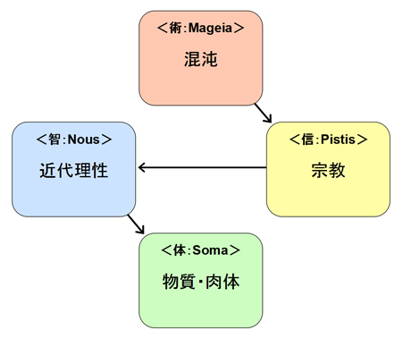
まず、『術：Mageia』と「混沌」についてだが、これは、先ほどの「原始土地機械」の問題とも絡んでいる。これといった統治や、統一的な枠組みがないまま行われる「術」や「文化」というのは、「混沌」としているものであるため、こうした「混沌」によって起きる問題というのが生じるものなのだと思う。これに関しては、原始時代の状況を思い浮かべてもらえば良いといった所だろうか？
次に、『信：Pistis』と「宗教」についてだが、これは、先ほどの「専制君主機械」とも絡んでいる。「信仰」の力によって物事が解決することはあるが、それは、宗教の一神教的な考え方と密接な関わり合いを持つことにもなり、宗教的な問題が発生する危険を含んでいる所でもある。これは、「神秘主義」と「宗教」が紙一重だという問題でもある。
次に、『智：Nous』と「近代理性」についてであるが、これは、先ほどの「資本主義機械」とも絡んでいる。「神の信仰」から「学問の探求」に移るような時代になり、そこで「学術的に説明のできるもの」に頼るようになるわけだが、そこで発達した「知性」が、科学的な「近代理性」として機能して、猛威を振るうようにもなる。これは、「理性」と「科学」の関係が絡んでいる所でもあり、「学問」と「理性至上主義」が紙一重だという問題でもある。
最後に、『体：Soma』と「物質・肉体」についてである。これも、先ほどの「資本主義機械」と絡んでいる。これは「物質」を指すと同様に、人間の「肉体」を指しているものである。『体：Soma』と「物質」の関係、それから、「肉体」と「資本主義」の関係というのは、少し難しい所だが、『体：Soma』系の身体技法によって、「肉体」を変化させることで、自身の中に霊的な通路を開き、「脱唯物的」な道を見いだすことは出来る。しかし、逆に「肉体」の問題へと下手にこだわり過ぎることで、唯物的な状況を脱する道、あるいは、資本主義の作る閉塞感を脱する道が、ある意味で閉じてしまうこともある。『信：Pistis』や『智：Nous』が二面性を持っているように、『体：Soma』もまた、「脱唯物的」と「唯物的」の方向性という二面性を持っているわけである。
また、「資本主義」と「物質・肉体」の関係で言うと、資本主義社会の文化が、肉体に対する快楽をもたらし、その快楽が意識を霊的な方向から遠ざける・・・といった流れもあると思う。「物質・肉体」という弊害要素は、「快楽欲求」や「性的欲求」といった、肉体が元来持っている弊害要素が絡んでいる所でもある。
そして、これらの４つの弊害要素において、現在の要素の弊害の解消は、次の要素が持っているという特徴がある。従って、弊害要素においても『術：Mageia』→『信：Pistis』→『智：Nous』→『体：Soma』→『術：Mageia』・・・という風に循環していく構造になっているのである。それから、これまで４つの弊害要素について述べてきたが、以上で述べなかった弊害要素として、『性』というものもある。これは恐らく、第５の弊害要素として、『術：Mageia』の前と『体：Soma』の後のあたりに出てくるのかもしれないものだが、ひとまずは、『混沌』の要素として含めておくと良いかもしれない。『性』の問題も万物の根源的な要素が絡んでいるものなので、重要な所である。
さて、このように、魔術や魔法における４つのカテゴリーにおいて、それぞれ４つに対応した弊害要素というものがあるため、あるカテゴリーの人にとっては、別のカテゴリーが「いかがわしい」ものに見えることがある。こうしたことを踏まえると、魔術や魔法における流派の違いからくる敵対関係や、宗教・哲学・社会派の思想家といった人達の間で起きるちょっとした言い争いなどは、それぞれが「弊害要素」を含んでいるからこそ起きるのかもしれない・・・と読み取ることができる。しかし、「別のカテゴリー」においてのそれを言及した所で、「自分のカテゴリー」においても必ずそういったものがあるため、他の弊害要素に対してばかりあれこれ悪く言うことは、無骨で役に立たないことである。こうしたことは、あまり表面的な事柄にとらわれているとそのように見えてしまうため、もう少し深い所まで見ていく必要がある。また、各人の「スタンスの違い」というのを理解できないと、「別のカテゴリー」が理解できないということになるため、色々な人の「違い」を意識しつつ、各ジャンルと上手く付き合うようにしていくのが良いと思う。
これらの４つの弊害要素は、『３Ｓ政策』と呼ばれているものと対応させてみても面白い。「３Ｓ政策」とは、「大衆の関心を政治に向けさせないようにする３つの手段」として言われているものであり、それは「セックス（Sex）」「スポーツ（Sports）」「スクリーン(Screen)」の３つで「３Ｓ」である。これらは、「人間の意識を本質的な所からそらす３つの要素」だと言うこともできる。
それから、この「３Ｓ」に「スピリチュアル（Spiritual）」を加えると４つになるのではないか？と一部で言われているため、ここではそれを追加することにする。ここで言う「スピリチュアル（Spiritual）」とは、元々は良いものなのであるが、俗物化して堕落してしまったもののことを言う。これは、日本で言うと「宗教（SyuKyo）」に該当すると言っても良いと思う。
これらの「４Ｓ」を「４つの弊害要素」に当てはめて考えてみると、ピッタリとくるのである。
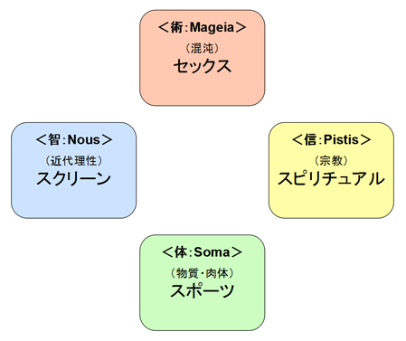
これらの４つは、人間が本来持つ可能性から遠ざける要素であり、魔術や魔法における「エーテル世界」や、無意識に眠る豊かな世界から遠ざける要素だとも言える。それから、それぞれ「原始欲求」・「感情」・「知性」・「肉体」の４つに幅広く作用するため、ほとんど漏れなく誘惑することができる。
これらは人間にとって身近な存在でもある厄介な要素と言えるが、逆に考えると、それを乗り越えたり、のまれることのないように扱いこなせれば、社会全体をおおう閉塞感を脱する道が開けるような気もする。魔術や魔法においては、「４Ｓ」は強い誘惑を持った存在であると同時に、裏返すと突破口を開くことができる存在でもあると思う。
ここで説明している「４つの弊害要素」は、それぞれ人間に必要な、社会的な「仕事」の持つ要素とも絡んでいる。これまで「弊害要素」や「４Ｓの要素」という風に説明してきたが、それは「人間にとって必要なもの」の反映として生まれてくるものでもある。「弊害要素」と「人間にとって必要なもの」は表裏一体となっているのである。
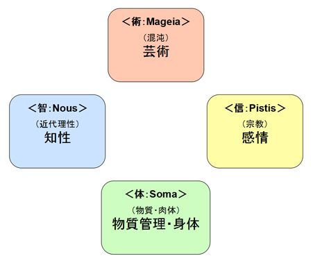
まずは、『術：Mageia』に対応した「直感力」を使った仕事があり、これは「芸術」のような仕事である。次に、『信：Pistis』に対応した「感情」を使った仕事と、『智：Nous』に対応した「知性」を使った仕事がある。最後に、『体：Soma』に対応した「物質管理」の能力や、「身体」を使った仕事がある。
この中でも、まず始めにある「芸術」能力や「直感力」が必要な仕事は特殊な部類であり、広い意味での「芸術家」であったり、「イノベーション（革新・価値創造）」を起こすものがそれに該当する。
それから、その次に来る３つが、一般社会で生活基盤を維持するにおいて、頻繁に必要になるものだと思う。「感情」に関する仕事は、人間にとって精神的な基盤となる所を司っており、「知性」に関する仕事は、人間にとって社会的な基盤となる所を司っている。そして、最後の「物質管理・身体」に関する仕事は、四大元素でいうと「土」に対応した仕事であり、人間の生活に特別密接な関わりを持っている。この分野に関する仕事は非常に幅広く、「身体」を使う仕事であると同時に、「大地」という資源から得ることができる物質全般を扱う仕事である。それは、労働者を管理する仕事や、貨幣を扱う仕事までもが含まれる。
人間が生きていくには、こうした４つの仕事的な要素のどれかを鍛えたり、磨いたり、能力を伸ばしたりして生きていく必要がある。そうすることによって、それぞれの長所によって人間社会を維持する力を得ることができるが、それは同時に「弊害要素」が付きまとうというわけである。しかし、魔術や魔法の力によってそれらの問題をクリアしたり、バランスを取ったりすることもまた、同時に必要になってくるのではないか？と思う。
先ほど説明した「４つの弊害要素」であるが、それらに対抗する４つの「女性性」というのもあるのではないか？と思う。
それらに対して、試しに名前をつけてみると、以下のようになると思う。
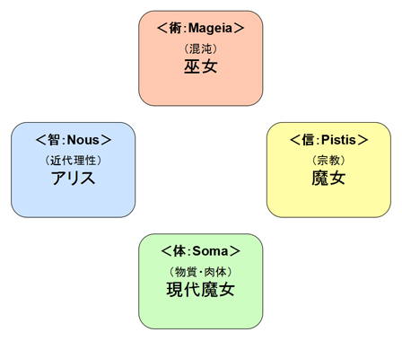
まずは「混沌」の段階にあるものは「巫女」に始まり、次に「宗教」の段階にあるものは、中世のキリスト教に対抗したもののようなイメージで「魔女」が当てはまる。（これは、「グノーシス主義」のイメージもいくらか含むと思う。）
そして、その次の「近代理性」の段階にあるものは『アリス』と名付けた。これは、「ルイス・キャロル」の作品『不思議の国のアリス』に出てくる「アリス」だが、アリスというキャラクターは、当時の西洋でも二次創作が盛んに行われた人気キャラクターでもある。ルイス・キャロルは数学者でもあったことで有名だが、「数学」は「近代理性」の象徴でもあり、それとは反対の少女像として、「アリス」という存在が機能しているような気がする。
最後に、「物質」の段階にあるものは、「魔女」と区別して『現代魔女』としたが、これは、いわば、21世紀の現代のような資本主義社会の末期に出てくる存在である。この「現代魔女」は、巫女・魔女・アリスの３つの要素を合わせ持ったものでもあるかもしれない。
これらの４種の女性性は、弊害要素の「反転」を引き起こすものと言えるのではないか？と思う。それから、これらは、魔術や魔法において、『術：Mageia』・『信：Pistis』・『智：Nous』・『体：Soma』という４大区分とも対応しているので、絡めて捉えてみると面白いかもしれない。
ここで、「魔術」や「魔法」における「精神修養」の重要性について説明していくことにする。すなわち、魔術や魔法を扱っていくにおいて、必要な「精神性」や「人格」とは何か？といった話になるのだが、こういったことも当然重要である。人間的に劣っているものが「高次元」へと達することができるわけがない・・・という話にもなるのだが、何が「高次元」で、何が「優れている」なのか？というのもなかなか難しい問題なため、この話はそんなに簡単な話ではない。
こうした「精神性」の話については、「仏教」などが本来得意とする所かもしれない。いわば、「精神性の劣るものは仏門に入る資格なし」といった所である。仏教では人間の欲望は『煩悩』とか呼ばれるが、この「煩悩」をいかにして鎮めたり、無くしたりするか・・・などのことが言われている。
こうした「精神性」の話は、「ルドルフ・シュタイナー」の書籍なんかも読んでおくと良いかもしれない。書籍『いかにして超感覚的世界の認識を獲得するか』あたりは、魔術や魔法、オカルトの探求においても必要なことが良い感じにまとまっている。一つ言葉を引用すると「まず第一に畏敬の念を思想生活の中に受け容れること、それが神秘学徒の出発点である。自分の意識の中にある不遜な、破廉恥な思考内容や軽蔑的な批判の傾向によく留意し、まさに畏敬の念という思考内容を育てることから始めなければならない。」・・・といった所である。このように、色々とためになることを言っているのがシュタイナーである。
それから、人間の「精神修養」に関しては、あらゆるジャンルを通じて色々と言えることがあるので、色々な書籍を読むようにすると良いと思う。
しかし、人間の「精神性」について、「かくあるべし」という話をするのも、つい説教臭くなってしまって難しいものである。（それに、言ってる本人が出来ている必要がある・・・）それから、「かくあるべし」という言説の何かを書いた所で、様々な考え方や生き方がある世の中において、「本当にそれで良いのか？」という疑問が出てくるかもしれない。そうやって言い切れることを探すのは、なかなか難しいことである。そこで、「何故それが正しいと言えるのか？」についての仕組みまで分かっていないと、本当に言い切れることを書くのは難しいのである。
ここでは、これまで説明した「エーテル体」と「物質体」の関係、それから、「ミクロ」と「マクロ」の関係といったことから導き出せることや、「目に見えない存在との関わり方」というテーマにおいて、重要な所を書いておくことにする。
魔術や魔法とは、物質世界を生きていく中で、「エーテル体」のような「目に見えない存在」との関わりを持つものであるから、必然的にリスクも発生するわけである。従って、それを防ぐために「普通に生きる」ということを維持するという選択も、別に間違いではないと思う。しかし、人間の世界の中に、そうした「よく分からないもの」や「それに精通した人達」というのは存在しているため、問題はそういったものとの付き合い方であったり、距離の取り方をどうするか？という所だと思う。
まずは、魔術や魔法で扱う「エーテル体」の特徴として、「欲望が直結してる」というのがある。これは、人間の「内在世界」の特徴でもある。
人間が普通に生きるということは、基本的には「外在世界」を生きるということになっている。しかし、魔術の修行というものは、基本的にはそうした「外在世界」と言われているものから一旦背を向けて、「内在世界」に没頭するものである。そこでは、自身の「内在」で思ったことがそのまま現実に反映されるようになる反面、邪なことを思ってしまうと、それもそのまま反映されてしまうのである。これが「エーテル世界」の特徴である。
例えば、魔術において「イメージ」を駆使した修行法などがあるし、そこから「願望実現」の魔術へと発展することがあるが、その「イメージ」や「願望」が、もし、自分勝手な欲望に満ちあふれていたとしたらどうなるのか？やはり、それだと上手くいかないのである。従って、「エーテル体」は「欲望が直結してる」ということを踏まえると、「欲望」を制するような「精神性」が必然的に必要になってくるわけである。「仏教」なんかで「煩悩」を消すように説かれるのは、それが理由だと言える。（ここで、完全に「消す」という言い方が正しいかどうかは、微妙な所だが・・・）
このように、魔術や魔法で扱う世界は、妄想がそのまま映像化されてしまうような世界でもあるため、イメージとして出てきたものが、エーテル世界の「自己」に絡んでいるちゃんとしたメッセージなのか、それとも、欲望に紐づいたただの妄想なのか、区別できないと危ういのである。そのため、欲望の扱いには気をつける必要がある。
それから、魔術や魔法で扱う世界は、突き詰めて考えると「明確なルールがない」ものだと言うことができる。本来であれば、「エーテル世界」においてもやって良いことと悪いことなどはあるのだが、「外在世界」のように、社会の法律のような「明確なルール」があったり、誰かに見られているから正さなければいけない・・・といった決まりなどは無い。もちろん、そういう「ルール」を「自分で作る」ことは可能であるが、そうする際も、あくまで「自主性」が必要になってくるのである。
普通の人間は「ルールの無い世界」というものに結構弱い。何故なら、もし、ルールが無くなり、いくらでも好きなことができるようになると、本当に好きなようにやってしまうことで堕落していくようにもなるし、また、逆に何をやって良いか分からなくなるということもある。従って、人間は「外在世界」を生きるにおいて、明確なルールを設定し、あらゆる「他者」がいる中で、相互で監視し合って生きるわけである。それはそれで安全な世の中なのであるが、魔術や魔法で扱う「内在世界」に行くとなると、それとは違った世界に入り込むことになる。
従って、魔術や魔法を扱うようになると、「明確なルールがない」という世界の中で、自主的に動いていく必要性が出てくる。ルールがない中でもその世界の仕組みをよく理解し、そこから、やって良いことと悪いことを判断する能力などが問われる。
また、やって良いことと悪いことを一人で判断するのが困難である場合、その道の「師」がいると良いとも言われる。（それが身近な所にいない場合は、自分で何とかする必要があるが・・・）
このように、魔術や魔法には「明確なルールがない」ものであるが、やるべきことの「決まり」が設定されることはある。従って、「仏教」などでは「戒律」が作られているし、その他にも「宗教」や「結社」といったものの中には、厳格な「掟」のあるものもあるわけだが、そうした「戒律」や「掟」を設定することにもリスクはあるし、それは、魔術や魔法が本来持つ思想から離れることにもなる。それから、魔術や魔法における「掟」というものは、国家の法律のようなものと違って、「絶対基準」というものがないのである。従って、結局の所、自分が守るべき「決まり」は、自分で探して、自分で認識していく必要がある。
次に、魔術や魔法によって「目に見えない世界」と接点を持った時のリスクとして「付き合いが増える」というのがある。これは割と単純な話であり、「エーテル世界」の住人のようなものがいたり、あっち側の世界と交遊したり、エネルギーを貸し借りしたり・・・というのが魔術や魔法であるため、そういう「付き合い」のようなことが、日常生活にプラスされるようになるわけである。
しかし、これは人によってはメリットだと捉えることもできる。別に魔術や魔法に限った話ではないが、何か新しいことを始めて、新天地での付き合いが出てきた時に発生するリスクだと言うこともできるし、それは、メリットと表裏一体となっているということである。
こういったことをプラスに捉えることができるなら、それはそれで良いと思うし、そういう人は魔術や魔法に向いているわけである。「エーテル世界」の住人とは、自分にとって丁度良いぐらいの距離感を持っておくのが良い。
さて、ここで魔術や魔法の世界観に触れていると、『シャドウの投影法則』への対処の必要性というのが出てくるため、それについて述べていく。「シャドウの投影法則」は、魔術や魔法といったものと関わらなくても生じることであるが、それらがよく分かってくると、正体が掴めるものなのである。
まず、ここで言う『シャドウ（影）』というのは、「自分が普段向き合っていない、自分の中の嫌な部分」といった所である。日常的に生活していると、その「嫌な部分」の意識というものが、何処かに溜まっていくことになる。そうした「嫌な部分」の意識というものは、普段は抑圧していると、潜在意識のあたりで気付かないように溜まっていくことになる。
そしてある時に、その「嫌な部分」を持っている「誰か」を目にするようになると、その「嫌な部分」を妙に強く感じ取ってしまうようになる。そして、その人物に対して「嫌悪感」を抱いてしまう。そこから、場合によっては、その人物が悪いものだと思いこみ、それを「攻撃」したり「批判」したりすることまで出てくるわけだが・・・、よくよく考えてみると、それは、自分の「嫌な部分」を相手に「投影」して見ていて、それに対して攻撃しているのである。これが「シャドウの投影法則」である。
こうした「シャドウの投影法則」は、身近な人物に対して起きることもあれば、何か有名人や政治家なんかがテレビなどのメディアで出てきた時にも起きるものである。ここで、魔術や魔法といったものとは無関係に過ごしていた場合、そうしたものは「ただ何となく」発生するものかもしれないが、「エーテル世界」との関わりがある場合は、それが「露骨」に発生してきたりする。その上、その投影した相手の「嫌な部分」が、自分の中にある「嫌な部分」であることが、露骨に分かるようになるのである。魔術や魔法のような不思議なことをやっていると、そういう不思議な原理が現実に表れやすくなったりする。
こうしたことが起きたとき、どう対処していけば良いのか？まずは、「攻撃しない」とか「発言しない」というのが第一だと思う。「嫌悪感」の解消というのは、人によっては簡単には行かないものなのかもしれないので、気長に構えた方が良いかもしれない。そこで、「攻撃」や「発言」をするのとしないのとでは、大きく違いが出るものである。そうした行為を行うと「燃え上がる」ようなことが起きる上に、取り返しのつかないようにもなる。そのために、社会では「マナー」や「礼」といったものがあるのだと思う。仏教で言われている「煩悩」というものも、消すのは難しいが、「燃え上がる」ことだけは、なるべく防いだ方が良いものである。まぁ、人によってはズバズバと言い合っているうちになんとかなるケースもあるかもしれないが、そういうのは個人差のある問題である。
次に「嫌悪感」を解消する方法であるが、これは、「自身の中の嫌な部分をクリアにすること」が必要になる。つまり、原因は「自分の嫌な部分」にあるわけなので、それを、生活習慣までも含めて、「改善」という所まで持っていけると、気にならないようになってくる。ここは、なかなか鬼門な所であるため、四苦八苦いるかもしれないが、とりあえず、「自分を改善すると気にならなくなる」という境地はあるので、そこに向かっていくと良いのではないか？と思う。
あるいは、「身体」のバランスを取ることが重要かもしれない。もし、イライラするのは、単に睡眠が足りていないか、あるいは、身体に必要な栄養が足りていないから、ということもあるのだと思う。「自身の精神」の改善は、「自身の生活習慣」の改善であり、特に「食」とそれはかなり密接に結びついているため、「食」の改善と「精神」の改善は、結びついているものとして捉えると良い。
それから、自身の「精神」や「意識」といったものには、良い時期・悪い時期の波があったりする。そうした中で、悪い時期に「嫌な感じ」を受けるものに遭遇する場合もある。そうした場合は、単に「なるべく離れる」のも良いだろうと思う。テレビメディア、ネットメディアであれば、単に情報を見ないようにするのが良い。もし、それを見たがる場合は、やはり自身の意識に問題がある。このような「嫌なもの」と遭遇することは、必要な時は必要だが、必要でない時は必要でないものであるため、可能であれば具体的に離れるように策を練るのも一つの手だと思う。
魔術や魔法をやっていると、そういう原理が「自身の内在」とも関わる問題として突き付けられるようになる。
次に、エーテル体と関わるためには、『ミクロ知覚』が必要という話についてである。実践してみるとすぐ分かることであるが、この『ミクロ知覚』というものは、容易なものではない。
そもそも、普通の人間は、物質として大きさを持つもの・・・つまり、「マクロ」のみが見えるように出来ている。それから、魔術や魔法は「オカルト」と呼ばれるものであるが、そうしたものは、常に「隠されたもの」として機能していたわけであるし、科学や哲学といったものも、目に見える「マクロ」の枠内で発展していったというのが人間の歴史であり、これはこれで正しい世界である。そのため、その逆を行く道というのは、本来、簡単な道ではないのである。
「ミクロ」は「精神認識」と結びついており、「マクロ」は「物質認識」と結びついているが、前者は「見えにくいもの」であり、後者は「見えやすいもの」である。従って、魔術や魔法を扱う者は、普通の人にとって「見えにくいもの」を扱う必要がある。これが難しいことであり、普通は「見えやすいもの」や「分かりやすいもの」を単純に見ている方が楽なのであるが、魔法使いの道を志すとなるとそうもいかない・・・ということである。
このように、魔術や魔法は「普通は分かりにくい」ものを扱う必要があるため、一見、分かりやすく表現されているものでも、随時「これで良いのか？」という疑問を持って挑んでいくスタンスが必要となってくる。
ここまで、「エーテル世界」といった、「内在世界」との関わり方について述べてきた。これは、言い換えるなら、自身の「主観」がメインとなる「主観領域」だと言うことができる。
しかし、魔術や魔法を実践していくにあたって、現実生活との兼ね合いというのも必要となってくる。この現実生活の場所は「外在世界」と言えるわけだが、これは「客観領域」だと言うこともできる。「エーテル世界」と関わっていく一方で、こうした「客観領域」の重要性というのも、忘れてはならないことである。要は、学校に行って仕事して、お金を稼いで生活して・・・といった具合である。
ここで、「エーテル体」は「主観領域」にあり、「物質体」は「客観領域」にあるということをしっかりと認識していこう。そして、この双方を扱っていく意識というのが、魔術や魔法において重要になってくる。
この二つを扱うためには、時には、双方の「バランス」を踏まえた考え方が必要になるだろうし、片方の在り様をもう片方の世界に活かすという考え方も必要になってくると思う。それから、普段の「外在」にいる周囲の人達の意見と、自身の「内在」から出てくる意見との「落とし処」のようなものを見いだす必要性も出てくる。
以上のように、魔術や魔法を扱う道に入ると、「主観領域」と「客観領域」を行ったりきたりするという・・・「反復」が必要となってくる。
ここで出てくるものは、二つの心の複合感情を持つことになるため、『コンプレックス』だと言うことができる。（「コンプレックス」は本来、「複合感情」という意味の言葉である。）
このような二つの世界を「反復」していると、普通の人は「憎しみ」が増長していくことがある。何故なら、「客観領域」にとっては「主観領域」で育んだものは「劣性」かのように扱われるため、あまり良い境遇にならないものだからである。「オカルト」の境遇がずっとそうであったし、見発展だった時代の「数学」や「科学」といったものもそうであったし、一部の「芸術」もそうである。（これについては、哲学者の「ニーチェ」がよく使った言葉である、「弱者の憎しみ」という意味を持つ、『ルサンチマン』という言葉がある。）
一般的な人たちは、「客観領域」にあるもので、もっと分かりやすく「良さそうなもの」や「華やかに見えるもの」を支持する。こうした「客観領域」の価値基準では、「主観領域」にあるものは、基本的には蔑まれており、見下されたような扱いを受けることが多かったわけである。
・・・しかし、突き詰めて考えると、「主観領域」にあるものは、一概に「劣っている」とは言い切れないものであり、時として理に適っていることもある・・・ここが難しい所だが、「主観領域」が絡むようになると、このような複雑な道理と関わり合う必要性が出てくる。
そして、こうした不遇な状況の中、ニーチェが「ルサンチマン」を批判していたように、「憎しみ」が増長していくようではいけない構造もある。ただ「憎しみ」を晴らすような道は、魔術や魔法が目差すべき道ではなく、世の中が良くなるような方向性のものではない。だから、「魔法使い」の人はサバサバしてる人が多いのかもしれない。この辺りを上手いことやる「精神性」というのが必要となってくるというわけである。
それから、「客観領域」のやり方にいくらか厳しい姿勢を取ることで、自分の「主観領域」を守るタイプの人というのもいる。こういう人はいくらか禁欲的で、俗世間の行いには厳しいことが多いが、そのやり方で人並に上手くいく道を見出せるのであれば、それはそれで良いのかもしれない。これは、「魔法使い」タイプというより、「僧侶」タイプに多い気がする。
さて、これまで「精神性」といった「心がけ」の話をしてきたが、そうした中で「身体」が安定していることも結構大事だったりする。
例えば、人間が生活していくにおいて、何か気を使ったり、細かい所まで思考したり、平常心を保ったり・・・と、何事も「神経」を使ったりする。また、「感情」の働きは「五臓六腑」といった内蔵の働きから来たりする。それから、広い視野を持って物事を捉えて行動していくためには、それだけ脳の活動が活発でないといけないため、睡眠だって十分に取る必要があると思う。「愛」だの「道徳」だの、人間はこうあるべきだの何だの言った所で、実際行動をしてみると、そういうのが大事になってくる。
魔術や魔法を扱っていくには、「エーテル体」を知覚する器官を育てて行きながらも、やはりそれなりに生きて行くための身体も必要となってくる。生活のための「仕事」に有利な身体だって必要である。
ここで、「仏教」みたいな「菜食」に寄ることも、魔術や魔法に向いた身体作りとしてそれなりに効果がある。しかし、あまり厳格過ぎると、当然マズいことになるが、この辺については「シュタイナー」なんかが良いことを言っていて、「肉食は禁じないが、肉食をしないと低次の性質との戦いが容易になる」・・・ということを言っている。「肉食」は一方で、「地上」を生きる上で必要な要素と言えるが、とり過ぎると地上との結びつきが強くなり過ぎて、「エーテル体」を知覚することや、魔術や魔法の探求には向かないようになる。このように、「食」の話は、突き詰めて書いていくと長くなる所だが、奥が深いものである。
このような「食」は、「身体」に関連する所なため、「東洋」の得意分野である。これは、インドや中国などの「薬膳」の発展具合を見ていれば分かる所である。それから、日本の食文化も元々は良いものであり、日本食は、大豆・玄米・魚・海草・根菜・山の幸・・・といった、海のモノや山のモノを中心に食べられていた。日本のこうした食文化は、「目に見えないもの」を感じ取ることにも適した、良い食文化であったと言える。現代になって、欧米型の食生活や、思考法を手に入れるようになったものの、日本人が古くから持っている力というのも、忘れてはならないものである。
ここで、シュタイナーが言った『喉のチャクラ開発方法』で出てくる「８つの心がけ」が「精神修養」として凄く参考になる。『喉のチャクラ』は、シュタイナー的には、霊的な覚醒をするために育てるべき器官であるため、これは魔術や魔法において必要な秘訣にも通じているというわけである。「８つの心がけ」は、書籍『瞑想と祈りの言葉』に書いてあるものがよくまとまっている。
その内容は以下である。
一．思考に注意を払い、意味のあることのみを考える。自分の思考のなかで本質的なものと非本質的なもの、真理とたんなる意見とを区別する。人の話を聞くときには、思考と感情のなかで賛美と批判を断つ。
二．どのようなことでも根拠のある熟慮を経た上で決定する。思慮を欠いた行為、意味のない行為を避ける。共感と反感から独立した判断をおこなう。
三．意味のあることのみを話す。言葉のひとつひとつを思慮深くあらゆる角度から熟慮する。人の話を静かに傾聴する。
四．人を妨げることなく、いかにすれば全体の幸福、および永遠に適した行為をなしうるかを入念に考える。自分の行為が及ぼす作用をまえもって徹底的に考える。
五．自然と精神に適った生活を送り、外面的な祭事にとらわれず、不安やあわただしさをもたらすものを避ける。軽率なことをおこなわず、不精にならず、人生を高い目的にいたるための手段と見なして行為する。
六．自分の力でできることをなおざりにしない。日常と無常なものの彼方を見て、人間の最高の義務を自分の理想とする。
七．人生から可能なかぎり多くを学び、なにごとからも有益な経験を得るようにする。かつての体験を振り返って決意、実行する。
八．一定の時間に自分の内面を静観し、自己のなかに沈潜する。自己と語り合い、人生の原則を確認し、認識を思考のなかに通過させ、自分の義務を考え、人生の内容と目標を熟考し、本質的で不滅のものを見出し、それにふさわしい目標を立て、最高の目標に向かって努力する。
以上、これらは魔術や魔法において必要なことだけでなく、理知的に平常心を保って生きることにも通じているのではないか？と思う。
また、これらの８つのメッセージは、仏教にある『八正道』にも対応している。これも、仏教において重要な「８つの心がけ」である。
（一：正見，二：正思惟，三：正語，四：正業，五：正命，六：正精進，七：正念，八：正定）
このように、仏教でも同じようなことが言われているため、非常にバランスの取れた教えなのだと思う。
さて、魔術や魔法において重要なこととして、自身の意識の中にある「自己と他者との区別」というのがある。魔術や魔法にて「エーテル世界」を扱うようになると、自分の意識と他人の意識とが入れ混ざったような意識領域というのにも入り込むことになるが、そうした中で、「自己領域」のものと「他者領域」のものとを区別する必要がある。また、日常生活においても、雑多な思考を巡らせていくなかで、その思考が「自己に紐づいているもの」なのか「そうでないもの」なのかを区別できるようになると、余計な欲望に誘惑されないで済むようになる。
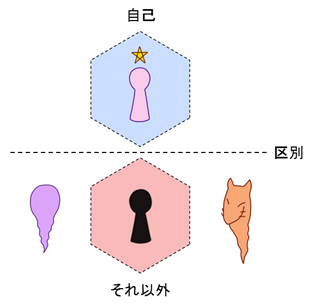
魔術や魔法によって見いだせる世界を突き詰めていくと、自身の「自己」というのが分かってくるようになるが、そこで、自身の雑多な意識の中で、「自己」に結びついているものと、そうでないものを区別する・・・ということである。これはかなり大事なことなので、よく練習しておいた方が良い。
これについては、『ミクロ知覚』が掴めていると、その感覚が分かりやすいようになる。また、「自己」の感じがなるべく簡単に掴めるように、自分なりの手段を身につけていると良い。これは、魔術や魔法における「基本」でもある。
また、「自己」は利己的な性格のみを持っているわけではない、という特徴を持つことを分かっていると良い。これについては、次の『ユダヤ・カバラの教え』にて述べる。
「精神修養」の話はこれで最後になるが、最後に、自分が「カバラ」を習った時に教わった「ユダヤ・カバラ」の考え方について述べていく。
これまでも述べたが、「カバラ」とは、元々は「ユダヤ神秘主義」から出てきたものだが、「神秘主義」の中でも「ユダヤ人」が使っていたものという、ある意味、究極的なものの中から、それは出てきている。「カバラ」の原典として影響力が高いと言われているものが、13世紀頃に出てきた『ゾハールの書（光輝の書）』というものだが、そこに書かれている教えというのがある。
まず、「カバラ」で目指している「神」という存在がある。その一方で、人間が持っている「エゴ」という存在がある。その二つの性質の特徴として、「神」が持っているのは「分かち合いの精神」であり、「エゴ」が持っているのは「自分だけ受け取りたい欲望」である。人間が「神のようになる」ためには、こうした「神」のように「分かち合う精神」を持っている必要がある・・・というのが、『ゾハールの書（光輝の書）』にも書かれている「ユダヤ・カバラ」の教えであるらしい。
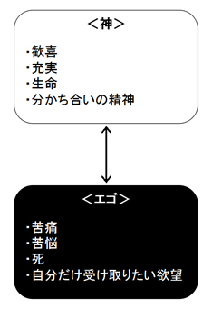
こうしたことは、「マイケル・バーグ」著の『神のようになる』という著書にて詳しく書かれている。
思うに、魔術や魔法において、白魔術系の勢力であったり、あるいは、大天使といった天使系のような存在を味方につけるには、ここに書かれている「神」の性質が大事だと思う。
また、これは「自己」の持つ性質にも通じている。魔術や魔法における「自己」も、元々は一つの「神」だったという風に解釈することができるが、こうした「神」の性質を想起すると、「自己」にもそういう力があるということが分かってくる。
こうしたことが分かってくると、いわば、「利他」的な力を持ち合わせているものが「自己」に近いものであり、「利己」的な力しか持っていないものは「自己」とは異なるということが分かってくるようになる。「自己」は、自分自身の向上も重要視するが、周りにいる誰かを含めて成長することを望んでいる存在である。
従って、「自己」とは何か？という問題を探るにおいて、この「ユダヤ・カバラの教え」は、重要な羅針盤ともなるのである。
しかし、こうした「ユダヤ・カバラの教え」は、「ユダヤ人」が生み出したものという性質もあり、「神」と「エゴ」の対立関係は、「光」と「闇」の戦いという風な構図として表現されることもある。このような、「神」に追従する行為というのは、人間にとってはリスクのあることであり、「絶対的」な答えとして扱うのは難しいのかもしれない。・・・とはいったものの、その重要性を捨てきれるものでもない。こうした「二つの原理」は、ひとまず「軸」として存在しているというように押さえておくのが良いと思う。
このような「神」と「エゴ」の関係の問題は、ユダヤ人がずっと抱えている問題であり、人類における壮大なテーマでもあるのだと思う。一神教的な価値観を持つ者にとってのそれは「光」と「闇」の戦いのようなものにもなり、特に解消するにおいて悩ましい問題なのだと思う。
しかし、我々は「ユダヤ人」ではなく、「日本人」である。実は、「ユダヤ思想」と「日本思想」は、非常にきわどい関係にあり、「神道」といった宗教において一致している所がありつつも、両者は明確に異なるという性質を持つ。「日本人」の場合は、「神」と「エゴ」の関係は、そこまで「光」と「闇」の関係のようには捉えない。それは、「和する」という発想によって解消するものだという思想を持っている。このあたりは、日本神話を研究してみると面白い所であるが、日本人にとって「エゴ」の象徴となるのは、あの『スサノオ』である。『スサノオ』は野蛮な一面も見せる「荒ぶる神」であるが、『ヤマタノオロチ』を退治した英雄としても扱われている。その他、西洋で「悪魔」と解釈されるような存在の多くは、日本では「八百万の神様」というくくりで扱われ、一概に悪者かのような存在感では扱われないものになると思う。そのあたりの日本の文化の特徴は、研究してみると面白い所である。
このような「神」と「エゴ」の関係の問題は、日本思想的にも複雑な所であるが、いっそのこと『黄金比』の割合あたりで使ってみるのも良いのだろうか？この辺りの考え方は、人によって様々であるだろうが、ひとまず、魔術や魔法の世界には、「ユダヤ・カバラの教え」のような二つの方向性、もとい、二つの「軸」があることを押さえておくと良い。
ここで、締めくくりとして「新しい世界を生きるということ」について書いておく。
まず、「認識を変えることで世界は変わる。」という道理がある。
人間にとっての世界は、「既に用意されているもの」かのように捉えられがちである。例えば、ゲームの世界のような空間が元々あって、我々はその中にいる住人であり、そこで生活している・・・といった具合である。従って、そうした枠組みの中では「用意されたゲームの世界」は、「実在」として「ずっと変わらない」かのように捉えられてしまう。
しかし、実際は、それぞれの人が「認識」している「世界の姿」が、それぞれの人にとっての「世界」だと言うことができる。そうした枠組みで捉えると、その人の「認識の仕方」によって、世界が異なるということになる。また、それぞれが認識の仕方を変えることで、それぞれの人にとっての「世界が変わる」ということにもなる。このように、「認識を変えることによって世界を変える」ということは、魔術や魔法で目指す所でもある。
魔術や魔法というものは、この「世界」に対して、「新しい認識の仕方」を提供するものである。それによって、この世界に「新しい軸」というものを見いだすことができて、そこから「新しい世界」を認識することができる。ここで、「新しい軸」が見えてきた場合、そこから、さらに「どうやって生きるか？」というのが、重要なテーマとなってくる。
このように、「新しい世界」を生きることを発見して、意識や生き方を変えていった生き物としては、例えるなら「カエル」がいる。
「カエル」は「両生類」であり、「両生類」は「魚類」から進化したと言われている。「魚類」から「両生類」に進化するということは、これまで「水の中」という世界しか見えていなかったが、そこから進化することによって、「水中」から「地上」という世界も見えるようになったということである。これは、魚類にとっては、動ける空間の軸が一つ増えるぐらい、革新的なことであった。
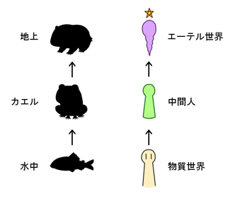
そこで、「地上」という新しい世界が見えるようになったら、今度は「地上」と「水中」とを生きるためには、どうすれば良いかを考えなければいけない。「水中」には重力がほとんど無いが、「地上」には重力がある。また、「水中」には常に水分があるが、「地上」には水分が無い場所がある。しかし、その一方で、「水中」になくて「地上」にある資源はいっぱいある。そういう状況の中では、「地上」の仕組みを一早く理解して、それに適応しなければならない。
これは、魔術や魔法において「新しい軸」が見えるようになった際にも必要なことである。そこで新しい世界が見えるようになったため、その中で「どのように生きるか。」というのを思いつくのが大事となってくる。そこで、新しい世界の空間の仕組みや、構成物（エーテル体）の仕組みといった、そこにある構造がよく見えてくるようになると、そこでの生き方も思いつくようになってくる。
このように新しい生き方を模索していった場合、自分がどのようにして生きてきたかを、他人に教えることもできる。従って、生き方を考えていくにおいて、逆に、誰かが模索して生きていったやり方や、流派を真似るというのも一つの手である。実際問題、魔術や魔法において、様々な流派が存在するのはそれが理由だと思う。
しかし、そうした流派の根っこにあるものは、創始者が「自分で模索していった結果」であり、そのような根っこの考え方から押さえていくのも良い。こうした根っこの考え方で、ベースとなっているのは「新しい軸を踏まえてどう生きるか。」ということである。従って、流派の創始者というのは、「空間の在り方」からどう生きれば良いかが分かった人だと思う。しかし、そこでゼロから思い付くのが難しいという人の場合は、「誰かから習う」ということもまた必要になってくると思う。そのあたりのやり方は、人それぞれな所である。
このように、魔術や魔法は、認識を変え、世界に「新しい軸」を見つけるということになるため、この世界と、新たに見つけた場所を含めた、「新しい世界」をどう生きるか？ということが重要なテーマになってくるのである。
以上で、本書『リアル魔法使いマニュアル』で書きたかったことは、十分に書いていった。サブタイトルが「〜魔法の仕組みとその他の仕組み〜」となっていることもあり、「仕組み」や「構造」に関する所に特出して書いていったと思う。
本当なら、魔術や魔法は「実践」の方が大事な所であり、「じゃあ『エーテル体』って実際何なのか？」と体験してみることの方が大事なのであるが、それについては、ここでは詳しくやらなかった。本書で省いた「実践」については、「ＧＤ系」「混沌魔術系」「ウィッチクラフト系」などで、代表的な文献を本書の中で紹介したので、それを参照するなどするのも良いだろうと思う。
しかし、それらの参考文献に載っている儀式や技法の内容を行うのも、少しばかり手間がかかったりするので、「エーテル体」を掴むために行うのはいくらか面倒であったりする。そのため、ここで少しでも実践的に「エーテル体」を掴むことをレクチャーするため、「エーテル体」を非常に簡単に掴むことができる手段である『四拍呼吸』という「呼吸法」についてだけ書いておく。
『四拍呼吸』は、西洋魔術でよく使われている呼吸法である。これは、ブロックのようなリズムで行う呼吸なため『ブロック呼吸』、または、『ボックス呼吸』と呼ばれることもある。（書籍『実践魔法カバラー入門』などに詳しく書いてある。）
この呼吸法は、筆者が「カバラ」を習った時に、直接習ったことがある呼吸法であり、また、「１００日連続で続ける」ということもこなしたことがあるため、詳しく説明できる行法である。
『四拍呼吸』は、「目に見えないもの」や「エーテル体」と呼ばれるものを扱う感覚を掴むために有効であり、また、「浄化」や「ヒーリング」のパワーを呼び起こすものとしても非常に優れている。（もちろん、コストはゼロである。）魔術や魔法における「自己」に意識を誘導する力も強いため、上手くいけば、「自己認識」にも至ることもできる。
それから、「ヒーリング」のような身体調整効果によって、様々な効能もある。自分がこの呼吸法を習った師は、これをマスターしたことにより、風邪をひかない体質になったらしい。ちょっと調子が悪くなっても、呼吸法を行うことで、パワーを得ることができるから・・・とのことである。
このように、『四拍呼吸』は、西洋魔術において広く普及しているのが納得できるぐらい、様々な効能を持つ「呼吸法」なのである。
まずは、魔術や魔法において「呼吸法」を行うことの意義についてのおさらいである。
科学的な「呼吸」をする意義は、肉体に対して必要な酸素を吸収し、不要な二酸化炭素を放出することによる生命維持のため・・・といった所である。
それに対し、魔術的な「呼吸」をする意義は、吸う時に、必要な「エーテル体」のエネルギーを取り込み、吐く時に、不要な「エーテル体」のエネルギーを吐き出すことである。こうした行為は「浄化」や「ヒーリング」の効果を持っているというわけである。
これによって、「エーテル体」が体感的に掴めるようになり、同様に「ミクロ」の感覚もいくらか掴めるようにもなる。何故なら、それなりに繊細さが要求される行為だからである。
それから、静かに座って『四拍呼吸』を行うことは、座って意識を整える行法にもなるので、これは「仏教」で伝えられている『座禅』にも近いと言うことができる。
それでは、『四拍呼吸』のやり方を実際に説明しよう。まずは呼吸をする時の姿勢である。これは、立つ姿勢や寝る姿勢でやることも可能だが、座る姿勢をメインにして説明する。
まず、座る姿勢の場合は、『神の姿勢』と呼ばれる姿勢をとる。これは、古代エジプトのファラオ（王）が玉座に座っているような姿勢をイメージすると良いらしい。
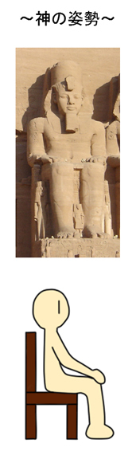
背筋を伸ばして、足はリラックスできるように適度に開いて、手はひざの上に置く。その中で、自分が一番落ち着いて呼吸ができる状態を思い浮かべて、姿勢を正すようにする。
呼吸法の姿勢に関しては以上である。
どんな姿勢でも呼吸法そのものを行うことはできるが、けじめをつける上でも、背筋を伸ばした上で呼吸法を行うべきだと思う。
次に、『四拍呼吸』の内容についてである。これについては、覚えること自体はそんな多くはない。
まずは、吐く時に４を数える。止めて２を数える。次に、吸う時に４を数える。止めて２を数える。スピードは自分のペースで良い。これの繰り返しである。
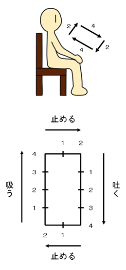
以上の図のように、ブロックのようなリズムで呼吸を行うということである。
これを７回行うことで「１セット」である。「７回で１セット」ということをよく覚えておこう。
ここで、呼吸をする時は『腹式呼吸』で行うことが望ましいが、割と意識するべきポイントは「数をかぞえる」というポイントである。
意識の中で数をかぞえながら呼吸法を行うことによって、無意識に没頭する中でも、意識を忘れないようになる。これが『四拍呼吸』の特徴である。
それから、『四拍呼吸』は「数」がポイントとなる呼吸法なわけだが、これを続けているうちに、意識が「数」と一体となっていく感覚が出てきたり、「数」からエネルギーが貰えるような感覚が出てきたりすることがある。
注意点としては、呼吸を止める時には気管を閉めるようにして止めないで、横隔膜の動きを止めるようにして止めること、である。
もし、気管を使って呼吸を止めると、気管が傷ついてしまう恐れがあるからである。
また、この行法は、呼吸器を中心に負担がかかる行法であるため、やり方を間違えるとそこに害が及ぶ可能性もある。
従って、呼吸法を行う時は、背筋を伸ばし、けじめをつけ、行ってて不調を感じるようであれば、やり方を修正するようにつとめる必要がある。
それから、もう一点注意するべきことは、呼吸法を行う時は、なるべく静かで雑念の無い場所で、一人で行うことである。もし、複数人でやる場合は、瞑想に適した空間を作って行う必要がある。
何故なら、呼吸法を行っている時の自分の精神は、外部からの影響の受けやすい「空っぽ」のような状態になっているため、外部に雑念があった場合、その影響をダイレクトに受けてしまうからである。
従って、呼吸法の修行をやり続ける時は、自分一人しかいない個室で行うことが望ましい。
以上が『四拍呼吸』の内容と注意点であるが、この呼吸法は、まずは集中して「しっかりと３セット」ができるようになると良いものである。初めにそれを一つの目標にすると良い。
それから、毎日継続することで、かなり強い力を発揮する。これは「呼吸法」の話に限らず、あらゆる物事において、毎日継続することが凄い力になるということでもある。
例えば、こうした呼吸法を30分真剣にやるとなると、結構凄いことである。しかしその場合、毎日やるとなるとさすがに厳しいという人が多いだろうと思う。
従って、「最低１セットを毎日続ける」というのが、推奨される目標である。１セットであれば、約２分もかからないので、最低目標として立てることができる。そこから２セットまでやるか３セットまでやるか・・・といったことは各自の判断で行い、続けていくと良いだろうと思う。
そして、それをまず１００日続けると大した効果があるというわけである。自分が教わって、達成したやり方もそれである。特に「エーテル体」を感じる力を育むという点で、非常に良い結果を望むことができると思うし、自分に自信もつくと思う。
従って、興味を持った人は、こういうことに挑戦してみると良いと思う。
このように『四拍呼吸』を続けているうちに、何かの「イメージ」が出てくるようになるかもしれない。それは、「エーテル世界」・・・もとい、自身の無意識に潜む世界とアクセスすることによって出てくるイメージである。
あるいは、何か特別なことや不思議なことが起きるかもしれない。「エーテル世界」の影響が、何か現実にも作用してくるようになるのである。
そうしたことを、日記か何かに書きとめておくと、あとで何かの役に立つかもしれない。これは「魔術日記」の要領と一緒である。必ず書く必要があるわけではないが、忘れないように書いておくという意義もあれば、書くことによって「エーテル世界」が反応するということもある。
これは「エーテル世界」へと関与しようとする「魔術行法」の一種であるため、そのようなことを意識すると良いと思う。
ここで、精神集中用のアイテムとして、「キャンドル（ロウソク）」を使ってみるというのも良いかもしれない。キャンドルについては以前も述べたが、キャンドルの光の形は、「オーラ」と呼ばれるエネルギー体の形に近く、精神防衛の効果があるし、リラックス効果もある。キャンドル台と込みで購入しても安く済むし、非常にコストパフォーマンスの良いアイテムである。
キャンドルを使って「エーテル体」を感じてみるというワークをやってみるのも良いだろうと思う。「パワーストーン」を何か持っている場合は、パワーストーンの持ってるエネルギーというのを感じてみると良いと思う。
キャンドルを立てるだけでも、軽い「儀式魔術」の効果があるため、「エーテル世界」が何か反応をする効果もある。従って、『四拍呼吸』とそれを併用することで、何かの効果が期待できるかもしれない。
『四拍呼吸』を１００日も継続して行うことで、高い効果を発揮するということを先ほど述べたが、そこまでやると「エーテル体」と親しむことが十分に出来ていることに加え、「自己認識」に至る可能性も高いかもしれない。
魔術や魔法において「自己認識」に至ることは基本であり、その基本を押さえておけば、後は「自己に紐付いたもの」と「そうでないもの」を区別したり、「自己」をベースにしてイメージを構築したりと、様々なことに対処することができる。従って、『四拍呼吸』によって「自己認識」に至ることができれば、あとは、その感覚をベースにして様々な魔術や魔法を扱うことができるというわけである。
それから、我々は普段、日常の中で生活している時は「日常」と親しんでいるということになる。ここで、『四拍呼吸』を毎日続けて生活することで、「日常の世界」と「エーテル世界」と、両方親しむように過ごしていくことになる。そうしているうちに、「日常の世界」と「エーテル世界」と両方扱える「自己」という存在に気付く・・・ということになる。
筆者がこの「呼吸法」を習ったのは、「カバラ」を習った時であるが、そうしていると、『ユダヤ・カバラの教え』で言われているような「分かち合いの精神」を持っている「自己」というものが、いくらか分かってくるようにもなる。
従って、このような行法が、「自分」にとっても、「自己」にとっても、プラスになるというわけである。
以上、これまで説明してきた『四拍呼吸』のやり方をまとめると、以下のようになる。
〜姿勢〜
・イスに座り、背筋を伸ばして、足は適度に広げて、手はひざの上に置く。
・以上は「神の姿勢」と呼ばれる姿勢であり、ファラオが玉座に座っている姿をイメージをすると良い。
〜内容〜
・吐く時に４を数える、止める時に２を数える、吸う時に２を数える、止める時に２を数える。この繰り返し。
〜注意点〜
・息を止めるときは、気管を使わずに、横隔膜を使うこと。
・不調を感じたら、今のやり方を修正するように心がけること。
・周りにある雑念の影響を受けないように、静かな場所で行うこと。
〜行う量の目安〜
・呼吸７回で１セット。約２分。
・３セットで約６分。
・まずは、３セットをしっかりできるようになること
・毎日やる場合は１日最低１セット、１００日継続などを目標にしてみると良い
参考文献（特選）
以下、本書の「参考文献」を載せていくが、その中でも、本書の中に出てきた文献を「特選」として、ジャンルごとに分けて載せておく。ここで述べるものは、基本として割とオススメできる文献である。
■ＧＤ・カバラ関連
・『魔法修行---カバラの秘法伝授』(1979年)：W.E.バトラー (著), 大沼忠弘 (翻訳)：平河出版社
・『神秘のカバラー』(1994年)：ダイアン・フォーチュン (著), 大沼忠弘 (翻訳)：国書刊行会
・『実践魔術講座リフォルマティオ』(2013年)：秋端勉 (著)：三交社 ※上巻部がＰＤＦとして無料公開
■セレマ関連
・『法の書』(1984年)：アレイスター・クロウリー (著), 島弘之 (翻訳), 植松靖夫 (翻訳)：国書刊行会
■混沌魔術関連
・『無の書 (現代魔術大系) 』(2003年)：ピート・J. キャロル (著), 秋端勉 (監修), Peter J. Carroll (原著), 金尾英樹 (翻訳)：国書刊行会
■ウィッチクラフト関連
・『バックランドのウイッチクラフト完全ガイド (フェニックスシリーズ)』(2016年)：レイモンド・バックランド (著), Raymond Buckland (著)：パンローリング株式会社バックランドのウィッチクラフト入門
■ユダヤ・カバラ関連
・『神のようになる』(2011年)：マイケルバーグ (著), Michael Berg (原著), 大沼忠弘 (翻訳)：イシス
■シュタイナー関連
・『いかにして超感覚的世界の認識を獲得するか (ちくま学芸文庫)』(2001年)：ルドルフシュタイナー (著), Rudolf Steiner (原著), 高橋巌 (翻訳)：筑摩書房
・『瞑想と祈りの言葉』(1994年)：ルドルフシュタイナー (著)：イザラ書房
■浄化用ＣＤ・成功法則
・『あなたの人生に奇跡をもたらす和の成功法則』(2016年)：大野靖志 (著)：サンマーク出版
■タルパ
・『タルパ×コンプレックス』：ポックル (著)：Kindle本
■呼吸法・カバラ
・『実践魔法カバラー入門---女神イシスが授ける古代の密儀 (ムー・スーパーミステリー・ブックス)』(2007年)：大沼忠弘 (著)：学習研究社
参考文献（その他）
・『図説近代魔術 (ふくろうの本/世界の文化)』(2013年)：吉村正和 (著)：河出書房新社
・『図説 錬金術 (ふくろうの本／世界の文化) 』(2012年)：吉村正和 (著)：河出書房新社
・『図解雑学素粒子』(2000年)：二間瀬敏史 (著)：ナツメ社
・『史上最強 図解仏教入門 (史上最強図解シリーズ) 』(2010年)：保坂 俊司 (監修)：ナツメ社
・『カバラとその象徴的表現〈新装版〉』(2011年)：ゲルショム・ショーレム (著), 小岸 昭 (翻訳), 岡部 仁 (翻訳)：法政大学出版局; 新装版
・『トートの書』(2004年)：アレイスタークロウリー (著), 榊原宗秀 (翻訳)：国書刊行会; 新装版
・『黄金の夜明け魔法大系 (1)』(1993年)：イスラエル・リガルディー (著), 江口 之隆 (著)：国書刊行会
・『アンチ・オイディプス(上)資本主義と分裂症 (河出文庫)』(2006年)：ジル・ドゥルーズ/フェリックス・ガタリ (著), 宇野邦一 (翻訳)：河出書房新社
・『アンチ・オイディプス(下)資本主義と分裂症 (河出文庫)』(2006年)：ジル・ドゥルーズ/フェリックス・ガタリ (著), 宇野邦一 (翻訳)：河出書房新社
・『図解早わかり! 空海と真言宗: 即身成仏』(2013年)：小峰彌彦 (監修)：三笠書房
・『現代語訳天台小止観』(1978年)：関口真大 (翻訳), 智顗：大東出版社
・『「止観」の源流としての阿含仏教』(1998年)：桐山靖雄 (著)：平河出版社
・『最新占星術入門 (エルブックスシリーズ)』(2003年)：松村潔 (著)：学習研究社; 増補改訂版
・『鏡リュウジのプラネット・セラピー』(2006年)：鏡リュウジ (著)：マガジンハウス
・『ヘミシンク入門---未知領域への扉を開く夢の技術 (驚異のヘミシンク実践シリーズ)』(2006年)：坂本 政道 (著), 植田 睦子 (著)：ハート出版
・『神秘学概論 (ちくま学芸文庫)』(1998年)：ルドルフ シュタイナー (著), Rudolf Steiner (原著), 高橋 巖 (翻訳)：筑摩書房
・『人智学・心智学・霊智学 (ちくま学芸文庫)』(2007年)：ルドルフ シュタイナー (著), Rudolf Steiner (原著), 高橋 巖 (翻訳)：筑摩書房
・『健康と食事』(1992年)：ルドルフ・シュタイナー (著), 西川 隆範 (翻訳)：イザラ書房
・『色彩の本質・色彩の秘密(全訳)』(2005年)：ルドルフ シュタイナー (著), 西川 隆範 (翻訳)：イザラ書房
筆者ブログ＆筆者作成ページ
哲学思考のなれのはて：
http://tetugakunarehate.cocolog-nifty.com/
Raimuのヌーソロジー入門：
http://spot23tm.com/noosology/text/noos_basic_index.html
筆者の著作
・『４次元思想とフラットランド』
http://tetugakunarehate.cocolog-nifty.com/blog/2016/12/post-4dce.html
・『ヌーソロジー基本概要＋（プラス）』
http://tetugakunarehate.cocolog-nifty.com/blog/2017/01/post-16e2.html
ＭＡＩＬ
tongpoo12yo@gmail.com
●本書に関するご感想などをお待ちしております。